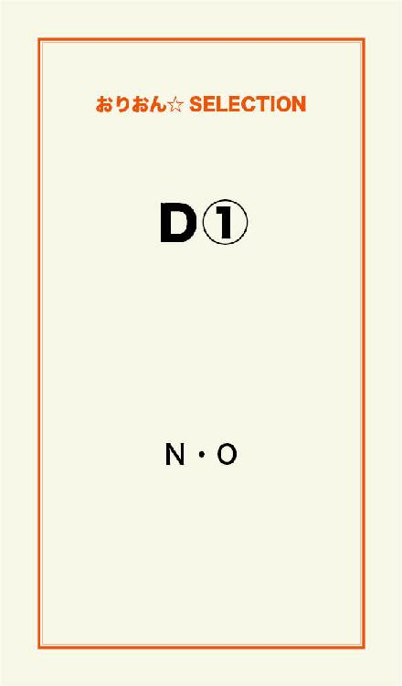
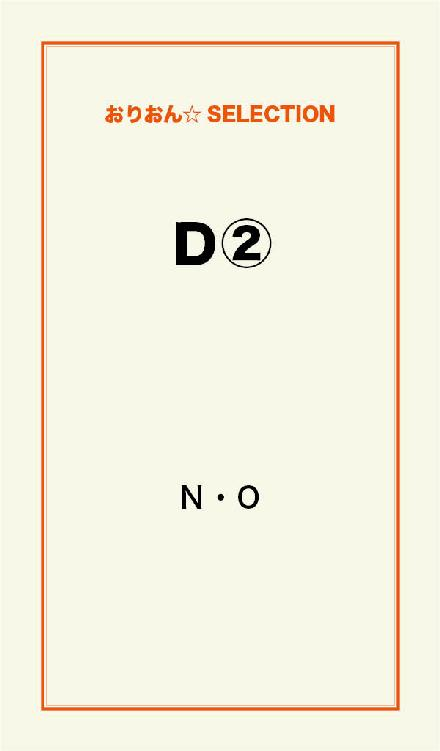
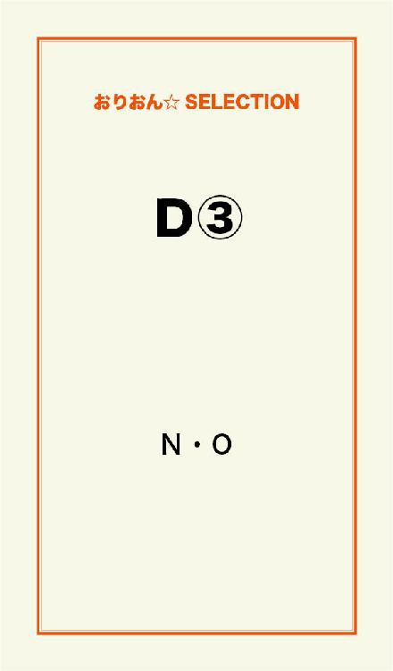

| Ｄ | |
| N・O | |
この本は横書きでレイアウトされています。
また、ご覧になる機種により、表示の差が認められることがあります。

「私はね！ これがいずれは起こる事だと薄々感じていましたよ！ これはね、私達の今までしてきた事への報いなんですよ！ 然るべき事なんです！ むしろ素直に受け入れた方が賢明だと思いますがね！」
「それでは何ですか！？ 我々人類に死ねと言っているんですか！？」
「そうは言ってはいません！ 罪は罪として、骨身に染みさせなければならないと言っているんです！」
「骨身に染みているからこそ、我々人類はこの世界を捨てずにここまで生きてきたのですよ！？ その他まだ苦汁を舐めて生きろと言うのですか！」
「堕落して生きてきた報いです......つまりそれほど私達は罪深く、ちっぽけな生き物だという事です！ 幾度となく人類は、あらゆる困難から生き延びてきた！ しかし今回でそれも終わる！ 人類は主張しすぎた！ ここで滅ぶべきは人類なのかも知れないのです！」
テレビでは連日連夜、同じ様な議論が繰り広げられていた。
どのチャンネルをつけても、砂嵐かくだらない討論か、もしくは緊急放送の字幕が映し出されているだけだ。
うんざりして、リモコンをテーブルに投げ出し、ベッドに横になった。
天井のファンが回る。
電気は地下の発電システムがあるから、一応賄っている。
更に水もそのシステムで地下水を汲み上げているから、当面は心配ない。
問題は食料だ。
冷蔵庫を開けてみる。
パンとチーズ、ベーコンが少しにビールが何缶かあるが、幾日ももつものじゃない。
卵はもう何週間も食べていないし、野菜はもっと長い間食べていなかった。
栄養の偏りも心配になる。
病気になっても、病院は今や廃墟になっているはず。
それは僅かな体調不良でも、死につながる事を意味している。
とりあえず、ビール......。
１口飲むと、空っぽの胃に染み渡るのが分かる。
アルコールが自分の思考を消してくれるぐらいに酔わせてくれればいいのだが、缶を見ると無情にもアルコール度数は４パーセントしかなかった。
これでは、かなりの量を飲まないと酔わない自信がある。
酒の会社が新作として発売したばかりの、低アルコールのフルーツビールだった。
１缶飲み干しテーブルに置くと、モサモサの頭をかきながらシャワールームへ向かい、少し熱めのシャワーを浴びた。
鏡にシャワーを当て曇りを取り除いて、自分の顔を見た。
隈ができ、疲れた顔をしている。
早めにシャワーを切り上げ、頭をタオルで拭きながら何気なくテレビのリモコンを手にし、またテレビをつけてしまった。
変わらない内容のテレビをつけたまま、テーブルの上の封書を開いた。
約束の日は今日。
何度も確かめたが、またその記載に目を移してしまう。
約束の時間まで、あと２時間を切っていた。
自分が何処まで役に立つかは分からないが、数ヵ月の手紙のやりとりで説得され、多少の危険を伴うにしろそれを承諾した。
しかしやはり落ち着かない。
とりあえず立ったり座ったり、そこらを歩き回ったりしているが、このソワソワした感覚はなかなか鎮まってくれない。
冷蔵庫からもう１缶ビールを取り出し、プルトップを開けた。
その時、チャイムが鳴った。
ビールを半分ほどまで一気に空けてから、玄関の扉を開けた。
扉の向こうには、ニット帽を被り赤いダウンジャケットにジーンズというラフな格好の、若い男が立っていた。
「誰？」
男は耳からイヤホンを取って、笑いかけてきた。
イヤホンからは目の前にスピーカーがある様な錯覚を受けるぐらいの音量が漏れている。
「あ、この辺に来たもんなんスけど......ワリィんスけど、ちょっと食料分けてもらっていいスかねぇ？ な～んもないんスよ、持ってなくて」
人にものを頼む態度ではない様子で、男は全く悪びれる事なく、またイヤホンを耳に入れた。
「いや、俺もないんだよ。悪いね」
扉を閉めようとすると、男は足を入れそれを阻んだ。
そして頭を扉から伸ばし、家の中の匂いをかいだ。それは動物の様な仕草だった。
「な～んか......な～んか匂うなぁ～......食いもんの匂いがな～んか匂うなぁ～......」
「な、何だお前！ 失礼だろ！」
男は体も内側にねじ込み、扉を後ろ手に閉めた。
「何だ！？ 何なんだお前！ 出ていけよ！」
男はその言葉にも全く怯まず、ニヤニヤとしながら頭のニット帽に手を伸ばした。
「い～い匂い～......い～い匂い～......」
「出ていけって言ってるだろ！」
あまりの男の異様さに、汗がにじむ。
確実に正気の沙汰ではない様子だ。
こんな世界になってしまったのだから無理もないと思ったが、厄介な事になりたくなかったので早く追い出したかった。
「出ろって言ってるだろ！ 無理にでも叩き出すぞ！」
男の肩を掴む。
しかし反射的に手を放した。
手に粘着質の液が付着し、ヌラヌラと光っていた。
恐ろしさに男を見やる。
男の肩はぐにゃぐにゃと躍動し、ピッピッと粘液を飛ばしていた。
腕の裾から液体が床に流れている。
「何だお前......！？」
恐怖のあまり後退りし、ソファの角に突っかかって尻餅をついた。
その拍子にテーブルのビール缶が倒れ、中身がフローリングの床に零れた。
「美味しそ～な匂～い......大好物の匂～い......」
男は靴のまま上がり込んできた。
粘液は足元を垂れ、ビチャッビチャッと不快な音を立てた。
男は手を当てていたニット帽を、おもむろに剥いだ。
粘液が伸び、糸を引く。
「お前......！ 『イーリー』か！！ ああ......何てこった......」
ニット帽を取った男の頭は、ドクドクと蠢く脳が剥き出しになっていて、その天辺には巨大な口が開いていた。
巨大な口からはサメの牙を彷彿させる鋭い歯が顔を覗かせ、何度か噛み合わせてカチカチと音を鳴らした。
「気をつけていたのに......ちきしょう！！ 何てこった！！ ちきしょう！！」
逃れられない事を悟り、油断していた自分を心の底から罵った。
「いい匂い～......好き嫌いないんスよ自分......育ち盛りなもんで......」
イヤホンから漏れる音が近づく。
粘液の不快な滴音が近づく。
傍らに落ちていた封書を握りしめた。
約束は守れそうにない。
「じゃ、いただきますね～......」
お辞儀をする様に頭を倒した男の影が重なる。
目の前には鋭い歯の縁取りをされた漆黒の闇があった。
とても助かりそうにない闇があった。
壁の崩れる音がする。
近い所で土煙が上がり、また老朽化した建物が壊れていくのかと、ため息をついた。
ほんの僅かな風が渦を巻いて流れていく。
マフラーがなびいて崩れたので、改めて巻き直した。
腕時計を確認し、そろそろ来るだろうと準備をする。
準備と言っても敬礼をする為の心の準備だが。
午後３時20分。
そろそろだ。
双眼鏡で周囲を見渡す。
土煙や瓦礫の崩れる様が見える。
木々や旗のはためく様子が、手に取る様に分かる。
ジェームズは後ろを振り返った。
白い建物に射し込む光が、より一層白を際立たせる。
この場所は血に濡れない唯一の場所である為、今や世界でも有数の美しい建物だった。
３階の窓が開き、オニールが顔を出しながら、前方を指差した。
「ジェームズ！ 客人だ！ おもてなししろ、おもてなし！」
「お前、長官に呼ばれてたろ！？ いいのか！？」
オニールは『ヤバいっ！』という顔をして、窓から引っ込んだ。
オニールが指した方向を双眼鏡で確認する。
異様なほどの土煙が巻き上がっていて、何かの乗り物に乗っているのが分かる。
ジェームズは肩からかけた銃を降ろし、前に構えた。
そのままの姿勢で、土煙を上げる物体を捉える。
それの輪郭は徐々にはっきりとしてきて、どうやらバイクであるというのが分かった。
爆音を轟かせ、それは白亜の建物を目指している。
かなり大きめなそのボディは、外敵から身を守る為のものであろう。
速さも排気量も通常の比でないのが手に取れる。
大型バイクは軽いドリフトをして、ジェームズの前に止まった。
大量の砂が、ジェームズの頭から降り注がれた。
無言で銃を降ろすジェームズ。
「......遠い所......ゴホッ......ご苦労様です......ゲホッ」
ジェームズは体中の砂を払いながら言った。
バイクの主はヘルメットを取った。
艶やかな長い黒髪がほどけ、まだ若干幼さを残した清楚な顔立ちが綻んだ。
ジェームズは思わず見とれ息を飲む。
「ごめんなさい！ 大丈夫でした！？」
オロオロと赤ら顔で謝る人物に、ジェームズは恐縮しながら言った。
「あ、大丈夫です！ 問題ありません！ 気になさらないで下さい！」
そう言って敬礼を送る。
「ミルド女史、ウエストバードシェルターにようこそお出で下さいました！ 長官がお待ちです！ お通り下さい！」
「ありがとうございます。でも、ミルド女史はやめて下さい......ヴァネッサで構いませんよ？」
にこやかに髪をなびかせてバイクを押していく姿を、ジェームズはトロンとした目で送った。
「おい、あのいい女誰だ？」
「あれがミルド女史だよ。弱冠20歳で医学博士号を取ったっていう、あの......」
「あ、あれか！ あんないい女だったんだな！ 博士号取ったっていうからさ、もっとツンケンした感じをイメージしてたんだけど」
「まだ23歳らしいぜ。もっと若く見えるなぁ」
「バイク乗りか......ライダースーツでグラマラスな線がまた......」
「いい匂いだなぁ......タイプだぁ、俺」
通路を歩く先々で振り返る男性の視線を全く気にせず、ヴァネッサは長官室へと向かった。
「ヴァネッサ・ミルド入ります」
長官室をノックし、ヴァネッサは扉を開けた。
そこには口ヒゲを蓄えた白髪まじりの男性が、イスに座っていた。
ヴァネッサを見るなり、立ち上がって歩み寄る。
「ミルド博士、お待ちしていましたよ。長官のスパウニーです。と言っても今はただの１
軍人ですがな。ささ、どうぞ。おかけ下さい」
「ありがとうございます」
ヴァネッサはスパウニーと握手を交わすと、ソファに座った。
「早速ですが、博士――」
「あ、博士はやめて下さい。ヴァネッサで結構です」
「分かりました。それではヴァネッサ、あなたをお呼びしたのは他でもない。あなたがこれまで旅した世界の状況を、細かく教えていただきたい」
「分かりました。私は世界の７大陸の内、４大陸の状況を見てきました。北のフェデニール州を皮切りに、そのまま南下し、クランビア、トリムロール、オーディスマス、タリマ、クィーブソルネと州を渡り歩き、最南のレイナットから更に西へ行きました。ローデンパレス、クラブハブナ、アマンド、ビスタチア、それからエルペンドラも通り、次大陸に向かったんです。それらの州や地域は全てほぼ、崩壊していました」
「つまり少なくとも、この国及びその周辺は、崩壊を余儀なくされていると......」
「はい、その通りです。他の大陸も似かよった状況でした」
「......生存率は？」
「......皆無と思われます」
スパウニーは頭を抱えた。
「そうですか......ヴァネッサ、ありがとうございます」
長官室の扉がノックされる。
スパウニーの呼びかけに、扉が開いた。
屈強な兵士が数名、中に入ってきた。
「ヴァネッサ、紹介しよう。部下のコード、マーチャル、トルップスにソルディアだ。あなたにはこれからこの者達と同行していただき、カーザス地方へ行っていただきたいのです」
４人はヴァネッサにそれぞれ挨拶をした。
二枚目な感じのリーダー格といった雰囲気のコード、背が高く筋肉の鎧に身を包んだといった感じのマーチャル、とぼけた表情で笑っているトルップス、そしてヴァネッサと幾つも歳が違わないであろう女性のソルディア。
「彼らとカーザスに？」
「ええ、カーザスに視察に行っていただきたい。もちろんあなたの身は、この者達が必ず守ります」
「カーザスには何があるのです？ あの地域は不毛の大地として有名で、元より何もないはずですが......？」
コードは地図らしきものを取り出すと、スパウニーに手渡した。
「これはカーザス地方の地図だ。ここを見てほしい。このカーザスの中心に位置するテスランという村で、先週謎の神隠しがあったという」
「神隠し......ですか？」
スパウニーは頷いた。
「この地方は一番イーリーの生息が少なく、テスランは特に自治の部族がイーリー対制管理を著しく整わせていた為、今まで本部でも連絡のみの対応しかしていなかった。しかし先週の通信を最後に、何の連絡もなくなってしまったのだ。こちらから通信員を派遣し、村の状況を連絡させた際、村はもぬけの殻となっているとの事だった。しかもその通信員でさえ、連絡を途絶えてしまったのだよ」
「では、イーリーの襲撃にあったのでは？」
「それも考えたのだが......どうやらそうではないらしいのです」
「一体何が？」
「通信員の最後の報告によると、テスランの人間で唯一生存していた少年がいたそうだ。その少年の話によると、村の人間は突如として姿を消したそうだ。争った形跡もなく、まさに神隠しの様に......」
「そんな......それでは――」
「そう、過去に起きた失踪事件と類似しているのだよ」
「......再発と、そう仰りたいのですか？」
「そう、その通りです」
ヴァネッサの脳裏には、あの惨劇が蘇った。
１日も忘れた事などなかった。
しかしそれが再び起こり得るとは......。
「あなたはイーリーの研究者としても一流だ。それにイーリーが関与していようがいまいが、何らかのつながりがある様に思える。あなたなら適任だと感じた。どうです？ 引き受けていただけますか？」
「......分かりました、お引き受けします。お力になれるか分かりませんが」
「ありがとうございます。出発は３日後という事で」
ヴァネッサはスパウニーと握手を交わした。
扉を出たヴァネッサは、４人の兵士の後ろを歩いた。
滞在中に使用する部屋に案内してもらう。
「ミルド女史はいくつですか？ 俺は28なんだけど、どう？ コードは30、マーチャルは31、ソルディアはまだまだガキんちょの20歳」
「誰がガキんちょだ！ ふざけた事ぬかすとぶっ飛ばすぞ！」
ソルディアはトルップスの胸ぐらを掴んだ。
「２人ともよさないか！ 失礼ミルド女史。騒がしい連中だが、大目に見てやってくれ」
「い、いえ、大丈夫です！ それと私の事はヴァネッサと呼んで下さい」
コードは表情を崩さないまま、頷いた。
「ここが君の部屋だ。悪いがソルディアと同じ部屋になる。必要物資は一通り揃っている。何かあったら彼女に聞いてくれ。それじゃ」
コードとマーチャルは廊下を歩いていった。
トルップスはそれに続いたが、何かを思い出したかの様に戻ってきた。
「ねえヴァネッサ、あ、ヴァネッサと呼ばせてもらうよ？ 後で食堂においでよ、皆に紹介するから。もうすでに君の噂でシェルター内は大騒ぎなんだから」
馴れ馴れしくヴァネッサの肩に伸ばした手を、ソルディアが平手打ちした。
「馴れ馴れしく触んじゃないよ！ さっさと行きな！ あんたに触られたら妊娠しちまう」
「お～イヤだ！ 何だお前、生理か？ いっつもカリカリしちゃってさ～！」
ソルディアは腰の銃を引き抜き、トルップスの額に銃口をつけた。
「あんた死にたいの？ 頭を吹っ飛ばしてやろうか？ ん？ 喜んでやってやるけど？」
「わ！ わ！ じょ、冗談だってば！ じゃ、ヴァネッサ、待ってるからね！ バイバイ！」
トルップスは逃げる様に、廊下を走っていった。
「ったくアイツは......悪いね、さぁ入って」
ソルディアはポカンとするヴァネッサを部屋の中に通した。
「狭いし同じ部屋になっちゃうけど、我慢して。野郎達で部屋が埋まっちゃって、女にはここしか残ってないの」
ソルディアは、ベッドに飛び込む様に横になった。
「連日の任務でクッタクタ......あ、早く扉閉めて。博士のベッドはそっち」
ヴァネッサは慌てて扉を閉めた。
部屋は12畳ほどの広さで、そこにベッドが２つと小さなタンスが２つ、小さな冷蔵庫があり、入口の隣にはユニットバスがあった。
ヴァネッサはヘルメットと荷物をベッドの脇に置いた。
「博士はやめて。ええと――」
「ソルディアよ。OK、OK。ヴァネッサでいいんだね。ヴァネッサ、よろしく」
そう言うとソルディアは、服を脱いだ。
慌ててヴァネッサは後ろを向く。
「何？ 部屋の中なんだから別にいいじゃない、女同士なんだし。軍服は肩が凝って窮屈なの。あんたも脱いだら？」
「え？」
「それ。ライダースーツ。見たところ、とっても窮屈そうだけど？」
ソルディアはゆったりとしたＴシャツを素肌に着ながら、ヴァネッサの体をまじまじと見た。
「そ、そうね」
ヴァネッサはフロントのジッパーを下ろした。
「何？ アンダーもブラも着けてないの？」
「え？ ええ、キツくてバイク乗る時には着けないのよ」
そのままスーツを脱いだ。
「ワ～オ！ おっきい！ いくつ？」
「え？ 何が？」
「何カップかって聞いてんの」
「F......だけど？」
「あたしはBよ、B！ いいなぁ！ そんだけあればなぁ！」
「でも綺麗な形よ？ あなたの」
ソルディアはベッドに仰向けに寝転んだ。
「気休めはよして。ま、いいや。おっきいと戦闘に不向きだからね」
「......あなたはいつからここに？」
「軍に入隊したのは１年前から。その時からここにいるんだ」
「どうして軍に入ろうと思ったの？」
「あたしね、孤児なんだよ。その時拾ってくれたのが軍人だったんだ。あたしはその軍人から戦闘の仕方を教わった。世界が崩壊した今、あたしの力はここで使わなきゃって、改めて思ったんだ」
ソルディアは屈託のない笑顔を見せた。
「あんたは何で医者になったの？」
「私の......姉が医師を目指してたの」
「へぇ～。で？ お姉さんも医者？」
「姉は......亡くなったの」
「あ......ごめん。あたしこういうとこあんだよね。空気読めないっていうか......」
「ああ、いいのよ。気にしないで」
「ホントごめん......てかさ、いつまで裸でいるの？ あたしが男だったら鼻血もんだよ？」
ヴァネッサは下着を下しか着けていない状態で立っていた事に気付いた。
「シャワー借りるわね！」
真っ赤な顔をして走るヴァネッサに、ソルディアはニヤニヤしながら言った。
「どーぞ。好きに使って」
「それがさ！ おっきいの何のって、スゴかったよ！ あれはね、男を惑わす体だ、うん」
ソルディアは片足を立てた状態で、周りの人間に暴露していた。
トルップスが食い入る様に身を乗り出す。
「それでそれで！？ どうだったんだ！？ 何カップなんだ！？ 早く教えろよ！！」
「それがさ、何と！ 驚異のF――」
「ソルディア？ 楽しそうね？ 何の話かしら？」
「いや、ヴァネッサのおっぱいはさ、そりゃスゴいの何のって......あれ？ お前ら何処行くん――」
波が引く様に、青い顔をしてその場を離れていく皆を不思議に思い、ソルディアは後ろを振り返った。
そこには鬼の形相のヴァネッサが、腕組みをして立っていた。
「おしゃべりが過ぎると思わない？ ソルディア」
「痛い......たんこぶできてる......あの人、軍隊入れるよ」
「何か言った？」
「いや！ 何にも言ってない！ いえ、言ってません！」
「よろしい」
涙目のソルディアを余所に、ヴァネッサは食堂の食事を食べている。
その隣に、トレイを持ったコードとマーチャルが来た。
「隣、いいかな？」
「あ、どうぞ」
２人はありがとうと言い、ヴァネッサの隣に座った。
ヴァネッサの前には、さっき逃げたトルップスがそそくさと着いた。
「ソルディアが何かしたみたいだが、許してやってくれ。君になついてる証拠だ」
コードはスープを飲みながら言った。
「いえ、大丈夫です。でももう少し女らしくした方がいいわね、ソルディア？ あなたの格好、そのＴシャツ１枚しか着てないの？」
「え？ 別に寒くないけど？」
「違うわよ！ そんな格好でウロウロしちゃダメって言ってるの」
「ソルディアは軍人だ。戦場に赴く時は、男も女もない。どんな格好をしようが、差別も区別もしない」
コードは冷静に言った。
ソルディアがそれに頷く。
そこにトルップスが割って入った。
「ソルディアの貧乳じゃ、例え素っ裸でも誰も起たねえけどな！」
「トルップス！ お前ホントに死にたいらしいな！」
ソルディアはテーブルを乗り越えて、トルップスの隣に座った。
そしてＴシャツを思いきりめくり、胸を露にした。
「これでも起たねえか？ ああ？」
そしてソルディアの胸に釘付けになっているトルップスの股間を、思いきり掴んだ。
「......起ってんじゃねえかよ！ 殺されてえのか！？ このダボハゼが！」
ソルディアはトルップスの頭を思いきり小突いた。
「............いつも......こんな感じ...ですか？」
呆れてポカンとするヴァネッサは、コードに聞いた。
「......す、すまない。悪いやつらではないんだ。許してくれ」
「い、いえ......ところで、あの人は一言も喋らないですけど......」
「ああ、マーチャルか。彼はいつもこうだ。寡黙な男なんだ。戦士はお喋りじゃないっていう理論なのさ」
マーチャルは自分が話題になっている事に気付いたのか、ヴァネッサに向かってはにかんだ。
ヴァネッサは『クセのある人達だなぁ......』と思いながら、冷えてしまったスープを啜った。
目の前ではソルディアが、半分ひきつり半分ニヤニヤ顔のトルップスを、未だにひたすら小突いていた。
「おいトルップス！ お前、後で１００ドル払えよ！？ いいもん見れたんだからな！」
「おやすみ。あたしはもう寝るよ」
隣のベッドでは、大きなあくびをするソルディアがいる。
ヴァネッサは医学書を閉じた。
「私も寝るわ。おやすみ、ソルディア」
「おやすみ、ヴァネッサ」
ソルディアは本当に眠そうにベッドに潜った。
灯りがついているのか、眩しさが目を叩く。
ヴァネッサの髪が、揺れた気がした。
前髪の先に赤い光が見える。
眩しさに負けないくらいに目を細めると、それが松明の光だと分かった。
その松明は見る間に目の前に広がり、ヴァネッサを取り囲んだ。
恐怖におののくヴァネッサの周りには、松明がひしめいてその炎を揺らめかせる。
ヴァネッサは叫んだ。
心の底から叫んだ。
助けを求める声は、赤い空間に飲み込まれていく。
やがて目の前に何かが走った。
ヴァネッサはそれを視界に捉えようと、必死に追いかけた。
火花が散り、金属のぶつかる音がする。
やがてその何かがふわりと止まった。
それを見やる。幻か見間違いかと思った。
涙が溢れる。とめどなく目から零れ落ちる。
その姿が、心に焼き付いたものと一致する。
手を伸ばし、その姿に触れようとした。
その瞬間、銃声が谺（こだま）する。
目の前のその姿は、スローモーションの様に前のめりで倒れた。
抱き止めようとしたヴァネッサの体をすり抜け、地面に崩れ落ちる。
硝煙と共に眼前に現れた影は、ニヤリと笑った。
銃口をヴァネッサに向ける。
ヴァネッサはその影から逃げた。
体の脇を銃弾がすり抜けていく。
暗闇が抜ける先に、光が射していた。
そこに向かう為、全力で走る。
走って走って走って......走って走って走って走って走って......しかし光には一向にたどり着かない。
銃声がした。足が突然冷たくなった。
再び銃声がした。
今度は腕が冷たさに襲われた。
腕を見ると、血が出ていた。
激しい痛みが体中を駆け抜けた。
影が迫ってくる。
走ろうと思ったが、地面に倒れ込んで足が動かなかった。
血まみれの足が震えている。
銃を構える音がする。
ヴァネッサはそれを見据えた。
影がニヤリと笑った。
口元が『バイバイ、ヴァネッサ』と動いた。
引き金が引かれる。
ヴァネッサは叫んだ。
銃口が発火し、鉛の弾が弾き出される。
ヴァネッサは目を見開き、恐怖に叫び声をあげるしかなかった。
「キャアアアアアア――ッ！！！！！」
ヴァネッサは飛び起きた。
傍らにソルディアが駆け寄る。
「どうした！？ ヴァネッサ何があった！？」
ヴァネッサは放心状態で、大量の冷や汗を流していた。
「ヴァネッサ？ 大丈夫！？ 怖い夢でも見たのか？」
「......ご、ごめんなさい......」
「......いいんだよ。大分うなされてたけど......ホントに大丈夫？」
「うん......ありがと......大丈夫」
ヴァネッサの悪夢はずっと続いていた。
夜眠る度に、暗黒の記憶はヴァネッサを打ちのめした。
あれからヴァネッサには、安息の夜は来ていなかった。
時計を見ると、午前２時だった。
建物から物音がする事はない。
「ごめんねソルディア。起こしちゃったね」
「気にしないで。あたしはまた寝れるから」
言うのが早いか、ソルディアからはまた寝息が聞こえた。
ヴァネッサは膝を抱えた。
その夜、ヴァネッサが再び眠りにつく事はなかった。
「戦闘服って......着づらいわ......ね！」
ヴァネッサは勢いをつけて、ジッパーをあげた。
彼女には少しきつめらしい。
「出るとこ出すぎなんだよ。おっぱいだけじゃなくてケツもでかいんじゃない？」
「戦闘服が小さいのよ！ 着なれないんだもの、仕方ないわ」
「あたしは全然平気だけどね」
「引っかかりがないんじゃないの？」
ヴァネッサはクスクスと笑った。
「でっかいだけがノウじゃないんだよ！ うるさいなぁ、ったく......」
ソルディアはブツブツ言いながら、四苦八苦するヴァネッサを横目で見た。
「......これも着けなきゃダメ？」
それは手のひらサイズの手榴弾だった。
ヴァネッサはそれを指でつまみ上げる。
「ベルトに下げるとこがあるでしょ？ 持ってた方がいいよ？ 後で使い方教えたげる」
ソルディアはヴァネッサのベルトに手榴弾をつけた。
「下げとく分には問題ないから」
部屋を出た直後、トルップスが廊下を駆けてきた。
「ヴァネッサ！ ついでにソルディア！ コードはもう車庫にいるらしいぞ！」
「おいトルップス......ついでって何だ？」
トルップスはソルディアの怒りを全く気にせず、ヴァネッサの戦闘服姿をまじまじと見ている。
「ああ～......最っ高......またその体のラインが強調されちゃって、まぁ～......ああ～最っ高......」
「えっ、ちょっと、やだ......」
トルップスの視線から逃れようとするヴァネッサの前に、ソルディアが割って入った。
そしてトルップスの視界を自分の存在で塞ぐと、その顔面に拳を叩き込んだ。
鼻血を出し、崩れ落ちるトルップス。
「お前はホントに死ななきゃ治らない様だな！ この変態！ 次に変態行為見つけたら、お前のぶら下げてるもん切り落とすからな！」
「長官！ コード軍曹以下３名並びにヴァネッサ・ミルド博士、参りました！」
「ご苦労。トルップス、それはどうした？」
「いえ......だんでもありばせん」
鼻にティッシュを詰めたトルップスは、隣のソルディアに肘で小突かれた。
「まぁいい。これから君達には、カーザス地方の調査に向かってもらう。猶予は１週間。それ以上の調査は危険を伴う為、撤退してもらう。武器や食糧などの必要な物資は、すでに車に積載済みだ。途中の道までは、オニールが同行する。以上だ。何か質問は？」
ヴァネッサが手をあげた。
「イーリーのサンプルを採取しても？」
「構わないが、危険がおよぶ様では避けてほしい。彼らでも守りきれないかも知れない」
「分かりました」
「それでは諸君、健闘を祈る」
皆は敬礼した。
格納庫兼車庫には、数々の車両や武器が収められている。
その中でも、ヴァネッサ達が乗る車両は大きなものだった。
「これで行くの？」
「そうだよ。このシェルターでも一番大きな車なんだ」
横からコードが言った。
「大型軍用車両ＪＫ―35。通称ラウスと言う。予備のガソリンタンクが8個も乗っているから、カーザスまで給油を必要とせずに行ける。君のバイクも積んである」
「あ、ありがとうございます。スゴい車......」
「全長10メートル、重さ50トン、日本で作られた。荒野を走るなら最高の車だ。さぁ、乗ってくれ」
ゲートが開けられた。
皆が車に乗り込むと、車はゆっくりと走り出した。
「スタンバイOK。目的地、これより北東部のカーザス地方。到着予定時間、18時。ラウス、出発します」
何時間乗っていただろうか。
車が停車した為、ヴァネッサは浅い眠りから覚めた。
窓の外を見ると、広い荒野が続いていて、枯れた樹木や地表の土層が剥き出しになっている部分が垣間見れた。
風が幾分あるらしく、西部劇の一場面の様に、固まった枯れ草が転がっていった。
「起きた？」
ソルディアが顔を覗かせた。
「あ、ごめんなさい。寝ちゃったわ」
「構わないよ。はい、ココア」
「ありがとう」
ソルディアから温かいココアを受け取り、少し啜った。
「ここは何処？」
「カーザスまではまだまだ。せいぜい４分の１ってとこかな？ 今、コードとトルップスが周辺の調査に出てるんだ」
遥か遠くの方に土煙があがっている。
あれがそうだろうか？
車にオニールが入ってきた。
彼はラウスの後ろから軍用ジープで後をついてきていた。
「そろそろ俺は戻るよ。ここまで来れば大丈夫だろう」
「オニールは何をしていたの？」
「俺かい？ 俺はね、ラウスが予定ラインから外れない様に、途中までレーダーで軌道修正していたんだ。長距離の場合、ラウスは予定ラインに乗るまで少し時間がかかるんだ。でもそのラインに乗っちまえば、あとは自動操縦で運転できる。それまでの案内役だね」
「もう帰るのかい？ このまま一緒に行けばいいのに」
「そうもいかねえさ。俺だってやる事いっぱいあるんだ。お前やヴァネッサと離れるのは、寂しいけどな」
「な～に言ってんだ！ 妻子持ちのヒゲが！」
「ヒゲ関係ねえだろ」
ヴァネッサはそのやり取りを見て、クスクスと笑った。
「じゃ、コードとトルップスによろしく。マーチャル！ お先な！」
マーチャルは運転席で前を向いたまま、手をあげた。
「お疲れさん！ 子供によろしく！」
「あいよ！ 気をつけてな！」
オニールはソルディアに笑顔で答え、車を後にした。
ジープのエンジン音が響き、土煙をあげながら元来た道をジープは帰っていった。
「ところで、コードとトルップスはどんな作業を？」
「この周囲一帯に、イーリーが生息しているかどうか、レーダーで確認しているんだ。たまに車の移動ライン上にイーリーがいたりとかするから、それの数とか距離とかを調べるんだよ」
「戦闘が起きるの？」
「もちろん。でもラウスの中にいれば安全だよ。武器も積んでるし、装甲も戦車の倍あるから、全然心配ないよ」
「そうだ！ ヴァネッサにも銃を渡しておくよ。何かあった時の為に、携帯しておくのもいいかも」
ソルディアは武器の格納スペースを漁り出した。
「私、武器はいらないわ。あまり使った事ないし」
「でも持ってた方がいいよ？ はい、これなら反動も少ないし、初心者でも扱えるから」
ヴァネッサはソルディアから小型の拳銃とガンベルトを受け取った。
「腰につけておくといいよ。弾は８発だから、残り弾数に気をつけて」
「分かったわ。ありがとう」
ヴァネッサが銃を腰に装着している時、コードとトルップスが帰ってきた。
「あ！ お帰り！ どうだった？」
「この辺りは異常なしだ。イーリーの生息もほぼ皆無と言っていい。だが......」
「何？ 何かある？」
コードに代わり、トルップスがめずらしく神妙な面持ちで話した。
「イーリーどころか、生物の影すら見当たらないんだよ......虫一匹いないのさ」
「どういう事？」
ソルディアの問いに、ヴァネッサが答えた。
「世界が崩壊してから、人間や動物の数は一気に減ったわ。もちろん、小さな昆虫も。でも生命力の推値からいって、１番この世界で生き残っているのは昆虫なの。ゴキブリが何億年も前から生きていたと同じ様に、世界が混沌としても、数こそ減るけど虫達が必ず勢力を拡大させるはずなのよ。元々虫が地球上で１番数が多いんだから」
「つまり、その虫達がいないって事は......」
「何かが起きている可能性があるという事だ。カーザスに急ごう。マーチャル、すぐに出発だ」
マーチャルは手をあげると、車を発進させた。
オニールは窓を開けると、タバコの煙を外に吐き出した。
軽快な音楽は、大音量で鳴り響いている。
任務は完了している為、気分はかなり楽になっていた。
あとは本部に帰り、武器の管理と整備をし、雑務をこなせば今日の仕事は終わる。
家族に電話をして、週末には帰れる約束を取りつけようと考えた。
愛娘にも早く会いたい。
座席の下から、隠し持っていたウィスキーのボトルを出した。
本当は業務中に酒など禁止されているが、隠れて飲んでいるのはざらにあった。
今では取り締まる警察もいない為、飲酒運転でも全く構わない。
ボトルのキャップを開け、１口飲んだ。
胃に染み渡るのが分かり、いつもの酒より旨く感じる。
ふと、数百メートルほど前に、何かを見つけた。
速度を落とす。レーダーに反応があった。
酒に気を取られて全然気がつかなかった。
ボトルを助手席に置き、腰のベルトから銃を引き抜く。
銃の腕には自信があった。
例え酔っていたとしても、10メートル先の空き缶をぶち抜くなどわけない。
だんだんとそれに近づくにつれ、その輪郭がはっきりとしてきた。
どうやら人らしい。
しかしイーリーの可能性もある為、車を数十メートル手前に止め、エンジンをかけたままにしておいた。
車から出る。
風が幾分あり、埃が舞う。
銃を構え、それに近づいた。
手に汗が滲むが、それをズボンで拭きまた銃を握り直す。
近づくにつれ、それは人が蹲っているものと分かった。
下を向き、伏せている。
オニールは声をかけた。
「俺は軍の者だ。人間ならゆっくりと立ち上がれ。イーリーなら、即射殺する」
蹲る者はピクリとも動かない。
死んでいるのかと思い、ゆっくりと近づく。
数メートルほどに距離が縮まった時、オニールは威嚇の為に空に発砲した。
「生きているなら立て！ これは脅しではない！ 返事がない場合は発砲する！」
オニールは銃を構えたまま、静かに待った。
汗が額を抜け、顔を流れていく。
しかし動きはない。
「何の動きもない場合、発砲の許可は得ている！ 今から発砲する！」
そう言ってリアクションを待つが、やはり何の動きもなかった。
オニールは蹲る者の頭部を狙い、２発撃った。
弾は寸分狂わず頭を撃ち抜いた。
ゆっくりと近づく。
目の前に来た時、オニールは異変に気付いた。
頭部からの出血がない。
ポッカリと穴が開いただけで、それの血液は最初からなかったかの様だ。
オニールは足で体を蹴り、裏返しにした。
すると、まるでその形の置物であるかの様に、ごろりと仰向けになった。
そしてオニールは、発砲の際何故出血しなかったのかを知る。
仰向けになった体の腹の部分は、綺麗にくり貫かれたかの如く空洞になっていた。
それは宛ら脱皮した後のセミの脱け殻の様だった。
顔も手足も、人間だったという判別がつく程度の面影しかなく、完全にミイラ化していた。
イーリーに中身を食われたのか、もしくは本当に何かが脱皮したのか、それはあまりにも異常な光景で、オニールはしばしその干からびた遺体を見つめていた。
ただ、その間が、自分の運命を左右してしまうとは、オニールは夢にも思わなかった。
オニールの足元の地面が揺れる。
咄嗟の事に、慌てふためくオニール。
地面がモグラが這い出る様に盛り上がり、それはオニールの足元だけではなく、その付近一帯に広がっていた。
その盛り上がりに発砲する。
すると奇怪な叫び声と共に、土から血が吹き出した。
「しまった！ イーリーか！」
オニールは周りを囲む盛り上がりの土に、次々と発砲した。
その度に断末魔と血がほとばしる。
しかし、５体まで撃った所で銃は無情にも空の音だけ響かせた。
オニールは銃を捨て踵を返すと、車へ走り出した。
その間にも次々と土は盛り上がっていく。
その時、足をついた箇所の地面に穴が開き、オニールは前のめりで倒れた。
立ち上がろうと力を込めるが、全身に激痛が走り、見ると落ちた足がすねからくの字に曲がっていた。
折れた骨が皮膚を破り、外に露出している。
激痛を堪え、足を穴から引き上げると、オニールは車へと這っていった。
その間にも、土の盛り上がりは更に数を増していく。
気が付けばその数は、景色を埋めつくすほどになっていた。
それでもオニールは必死に車へと這っていく。
だが目の前の出来事に、その努力をやめた。
車は後輪から穴に落ちていき、その姿を徐々に地面の中へと消していった。
オニールは叫んだ。
絶望の声に他ならない。
武器もなく、逃走手段も断たれた。
目の前に突如土が盛り上がり、その中から額の割れたイーリーが姿を現した。
割れた額はすでに口に変化している。
巨大な口が開かれ、オニールの頭を飲み込もうとした。
しかしいち早く動かした手に持つサバイバルナイフが、その口を縦に切り裂いた。
「食われねえぞ！ 俺は食われねえ！ ちきしょう！」
次々と顔を覗かせるイーリーを、オニールはナイフで切り刻んでいく。
だが７体を越えた辺りで、疲労から腕が動かなくなった。
くの字に折れた足に、イーリーの１人が噛みついた。
バキバキと骨の砕かれる音が響き、全身を痛みの波が一気に襲う。
オニールは足に噛みつくイーリーの脳天に、ナイフを突き立てた。
更にナイフを引き抜いた反動で、隣のイーリーの喉笛を切っ裂く。
ドス黒い血がオニールの顔に降り注がれた。
目に入り、痛みを堪えて擦る。
肩と脇腹に激痛が走った。
ミチミチッと音がし、食いちぎられていくのが分かった。
「ちきしょ――っ！！ 噛みやがって――っ！！ てめえら全員ぶち殺して――」
突如声が飛んだ。
叫んでいたはずが、声が消し飛んだ。
温かい何かが喉の奥に込み上げ、胸の辺りが濡れていくのを感じた。
喉に手を当ててみる。
皮膚があるはずの場所に何かが噴き出しているだけで、肝心の皮膚がない。
手を見ると、真っ赤に染まっていた。
ゴボゴボと喉が鳴る。
それを見つめていた左目が、急に真っ暗になった。
左手が痛みと共になくなった。
左足がバリバリと鳴った。
右肩がもぎ取られる音がした。
右耳が聞こえなくなった。
両手があった場所の感覚がまるでなくなっていた。
息ができなくなり、口から大量の血が吐き出された。
オニールの残り僅かな精神が最後に見た記憶は、愛する妻と娘、そして何故かジェームズだった。
『何で......ジェームズが......あいつが出てくるんだよ......』
苦笑いしたオニールの顔は、無数の牙がズタズタに切り裂いた。
「マーチャル、あとどのくらいだ？」
マーチャルはレーダーと時計とモニター地図を見比べた。
「あと......３時間というところだ」
「マーチャルが......！ 久しぶりに声聞いた......」
「ソルディア聞いた事ないの？」
「ないない！ ほとんどないよ！」
「黙れ２人共！ マーチャル、モニターに自動測定値が出ないのか？」
「黙れとは何だ？ 誰にもの言ってんだコラ！」
「ねえねえ！ マーチャルって渋い声だね！ もっと喋ればいいのに」
「モニターには映らん。壊れている」
「喋った！」
「黙れ女共！ 壊れてるって何だよ！ 最新鋭のレーダーだぞ？ どんだけボロいんだよ！」
「トルップス、ちょっと歯を食いしばってろ。今からハンマーでぶん殴るから」
「ねえ、聞いた？ ソルディア」
「うるさい！！！ 何しに来てると思ってるんだ！！！」
コードの怒声に、一同は静まりかえった。
「緊張感がなさすぎる！ 今我々は戦地にいるのだぞ！ それを忘れるな！ 計器だけに頼らず、目で確認しろ！」
皆はシュンとなって、そそくさと窓から周囲を見渡した。
風が車を横から殴り、ゴウゴウと唸りをあげている。
ヴァネッサは思い出していた。
「風......」
「えっ？ 何？」
ソルディアが不思議そうに聞く。
「ううん、何でもない」
風は災いの始まり......。
あれ以来ヴァネッサは、風は禍々しいものにしか感じられなくなっていた。
どうしてもあの光景とあの建物の姿が、心の壁紙から落ちない染みと化している。
拭いても削っても、決して取れない染み......。
この風がどうしても気になった。
窓の外には流れる荒野があり、ガラスには自分の不安そうな顔が映る。
もうすぐカーザス地方にさしかかる。
だんだんと風景が変わり、枯れ木や枯れ草などは見られなくなってきた。
剥き出しの岩肌や砂岩がそこらじゅうにひしめき、まさに不毛の大地だ。
こんな場所に村があるのも不思議だが、昔から炭鉱の村としてテスランはこの地に根を張っていた。
テスランの民だけが知る、不毛の大地の唯一の宝だった。
取れる鉱石は主にルビー。
それもあまり純度の良くないものだった。
しかし精製法によっては純度のレベルが高くなり、その精製法もテスランの民しか知らず、闇で高値で取引される『テスランルビー』は民の大切な資金源だった。
その資金を元に独自の自衛力を得ていたテスランは、世界の崩壊後その自衛力により滅びの道を逃れていた。
それは当時、テスランの民しか知らない事情だった。
車が村に近づいていく。
砂塵が吹く様になった外の世界は、村の姿を公にしない。
予定時刻ちょうどに、村の入口に止まった。
「これが......テスラン......」
「完全に死んでるぜ、こりゃ......」
トルップスの言う通りだった。
村は廃墟宛ら、完全にゴーストタウンと化していた。
武器を装備し、ヴァネッサを中心として村の中に入っていく。
トルップスの持つ探知レーダーが一定の電子音を奏でている。
「半径50メートルに熱反応なし。生物はいないな」
「イーリーはいないって事か......」
村をそのまま歩いていく。
砂塵が舞い、隊の視界を妨げる。
ソルディアのヘルメットにバラバラと砂が当たる音がする。
「砂がスゴいなぁ......」
「はぐれない様に、お互いの距離を小さくしろ。方向感覚が麻痺させられるからな」
村の入口付近に位置する家の中に入る。
扉は半開きになっていて、その玄関の内側には砂が溜まっていた。
家の中にも砂が入り込み、家中埃臭くなっている。
「放置時間が長い様だ。各自家中を探索、報告する様に。ヴァネッサはここで待機していてくれ」
コード達は部屋の探索に走った。
ヴァネッサはその場に取り残されたが、自分も拳銃を取り出し、部屋の中を見て回った。
何処にでもある様な、何の変哲もない間取りの部屋で、むしろ『村』と名乗っていながらも、都会チックな趣を醸し出している。
ただ、やはりおかしな点があり、部屋の中は生活していたままの状態で放置されていた。争った形跡もなく、逃げ惑いパニックになった跡というわけでもない。
まさに神隠しという表現が妥当だった。
「ここも......そうだったのかしら......」
暗殺者の村......。
ヴァネッサの頭には、その言葉が浮かんだ。
もしもあの時と同じ状況であるならば、村人の捜索は困難を極める。
術者のさじ加減１つで、かかった者は明も暗にもなる。
ただ......その可能性は薄いと、ヴァネッサは心の何処かで思っていた。
もちろんそれは１番のバッドエンドであり、彼女が最も考えたくない事だったが、世界のこの状況を見るかぎり、それにひたすら近い理念であると考えさせられてしまう。
ヴァネッサはそれをまざまざと見せつけられた瞬間があった。
時は３年前へと遡る。
スプレイトスから遥か東、大きな湖を中心に発展した都市『レイクサイドケース』にヴァネッサはいた。
『祭り』の際、幼い時分が預けられていた親類の家がその都市にあり、あの事件以降ヴァネッサはその場所に身を寄せていた。
親類は事の事情を全く知らない、つまり血族ではないらしく、ヴァネッサの両親は事故で亡くなったと語ると、彼女を快く家族の一員として招き入れてくれた。
彼女はそこで大学院まで通い、学費をアルバイトで稼ぎながら、最年少で博士号を取得した。
叔父も叔母も彼女を実の娘の様にかわいがり、博士号を取得した際には、細やかながらパーティーを開いてくれた。
３つと２つ年上の従兄妹エバンスとクリスも、ヴァネッサを妹の様に大切にしてくれ、パーティーの際にはエバンスから大きな花束を、クリスからは彼女とお揃いのサファイアのペンダントをプレゼントされた。
ヴァネッサにとって、その時本当の家族ができていたのだ。
ヴァネッサは家族の温もりを久しぶりに垣間見た。
味わった事のある、しかし偽りだったそれは、故郷から遠く離れた土地で真の温かさとなって、彼女を包んでくれた。
ヴァネッサは毎日を感動の日々の中過ごした。
人間の優しさに触れ、涙の出る思いだった。
だから勉強も苦ではなかったし、何より、今は亡き大切な『姉』の意思を継ぎ、姉が語っていた『どんな病気も怪我も治す医者』を目指して、彼女は充実した日々を送っていた。
できる事なら姉にも味わってほしかった、そして姉と味わいたかった幸せがそこにあり、そしてできる事なら、自分の命の恩人であり、自分に世界を切り開いてくれた大切なあの人にも、その温もりの中にいてほしかった。
手に入らないとしても、ヴァネッサは一時たりとも忘れた事のない真実であり、いつまでもかけがえのないものに変わりはなかった。
だがそれも長くは続かなかった。
ヴァネッサがレイクサイドケースに来て３年目の春、博士号を取得してからしばらく経った穏やかなある日、それは起きた。
朝目覚めたヴァネッサは、家族の慌ただしい音を聞きつけ、何故か皆が集まっていたリビングに来た。
叔母はヴァネッサの顔を見るなり、彼女を抱きしめた。
突然の事に戸惑いを見せ、わけを問いただした。
叔母はテレビを指さした。
そこには臨時ニュースが放送されていて、ニュースの内容を聞いたヴァネッサは、驚愕のあまりその場に座り込んだ。
『臨時ニュースをお送りします！ たった今！ たった今フェデニール州のビークアにて、都市の人間が消滅しました！ 繰り返します！ フェデニール州のビークアにて、都市が消滅しました！ その都市にいた住民は全て消失したという内容です！ なお、被害状況は更に拡大すると思われ、クランビア州でも小さな村で人間が消失したとの情報を得ています！ これからのニュースに注目して下さい！』
「これ......どういう事......？」
クリスは母の手を握りしめた。
母娘は互いの体を寄せあい、共に震えている。
町に突然サイレンが鳴り出した。
それは避難勧告のサイレンに他ならない。
叔父が血相を変え、家族に指示した。
「皆、荷物をまとめなさい！ すぐにこの地を離れる！」
「あなた！ 一体何があるというの！？」
「分からない。しかし何かが起きるのは確かだ。私は車の用意をする。すぐに荷物をまとめなさい」
叔母とクリスはすぐさまキッチンから食料を持ち出し、大きなバッグを用意するとそれに何もかもを詰めた。
「ヴァネッサ！ ヴァネッサしっかりしなさい！ さぁ早く荷物をまとめるのよ！ 自分の荷物を取りに行きなさい！」
叔母に急かされ、ヴァネッサは半分放心状態で自分の部屋に戻った。
一体何が起きたというのだ？
一体何があったというのだ？
戦争？ 天変地異？ それとも巨大隕石の衝突？
ヴァネッサは荷物をバッグに詰め込みながら、いつのまにか流れていた涙を拭った。
リビングからは臨時ニュースの続きが放送されていた。
『今しがた、クランビア州のほぼ全域で、人間の消失が確認されました！ 脅威的な現象です！ 恐ろしいほどであります！ 今しがた、クランビア州の人間の消失が確認されました！ なお、この放送も近い内に何の前触れもなく、中断もしくは中止となりますので、ご了承下さい』
何が起きているというのか......？
町に鳴り響くサイレンは、更に大きさを増した。
ヴァネッサは心の中で祈りを捧げた。
『これは一体何が起きているというのですか？ 世界はどうなっていってしまうんですか？』
『報告によりますと、町から消失してしまう人間達は、何らかの変化によりその姿を変えてしまうという報告がなされています。これは一体どういう事でしょう？』
『報告がありました。消失したと思われていた人間は皆、突然変異の様にその姿を変えていると断定されました。突然苦しみ出した人間の頭部又は体の部位に亀裂が入り、体が変体していくという事です。そして瞬時にその姿をくらませるという報告がありました。つまり突然変異化した人間の神隠しという事になります。いずれにせよ、調査を続行したいと思います』
『また新たな動きがありました。この事件に関与していると思われる人物の姿が目撃されました。その映像を入手いたしましたので、ご覧いただきたいと思います』
ビルの天辺に影がある。
何かを手にしている。
それは小さな袋の様なもので......それをビルの上で広げる様にした。
ヴァネッサはあの人かと思った。
しかしそれは覆された。
影は明らかに似つかない姿で、何よりオーラが禍々しく、ブラウン管を通してもそれは明確だった。
それは袋の中身を撒く様にして、ビルから町に降らせた。
その直後、道路を行く人々が苦しみ始めた。
これはあの薬と同じ......。
映像はそこで止まり、ニュースキャスターの顔が映し出される。
『こちらにもとうとう避難勧告が発令されました！ 我々も退去したいと思います！』
それと同時に、車の準備をしていた叔父が戻っていた。
「さぁ皆！ 車に乗るんだ！」
避難する車や人の群れは列を成し、ハイウェイや林道を進んでいった。皆不安に打ちのめされ、得体の知れない脅威から逃れようとしていた。
ヴァネッサを乗せた車は、大渋滞を起こしている道をゆっくりと進んでいた。
国境を越えようと、車は蟻の列の様に道を占拠している。
隣でクリスが不安な声を漏らした。
兄は大学の寮にいて、その場にいなかったからだ。
「エバンスはきっと大丈夫だ。あれは勇敢な男だ。1人でも何処かに脱出しているはず」
父がそう慰めるが、クリスの目には涙が滲んでいた。
ふと、車の動きが止まった。
渋滞が更に悪化したらしい。
父は車を降り、外の様子を見にいった。
外からは怒声や叫び声が響いていた。
ヴァネッサは耳を塞いだ。
やがてその声は大きくなり、渋滞や混乱の声とは異種の、狂乱の叫びを含む声になった。
車のある道の東側に位置する丘から、何かの群衆が募っていた。
それは数を増やし、こちらに猛スピードで走り寄ってきていた。
人々はパニックになり、途端に逃げ惑う。
叔父が車に走ってきて、何やら叫んでいた。
その瞬間......。
気が付くとヴァネッサは道に投げ出されていた。
目の前で黒煙が舞い上がり、あちらこちらで炎があがっていた。
数十メートル先で、車が爆音をあげ空に舞い上がった。
傍らでは叔母の体が真っ二つに切断されていた。
咀嚼音が聞こえ、それは１つや２つではなく、何重にも谺して耳に入ってくる。
ヴァネッサは痛む体を起こし、周りを見渡した。
国境へ向かう道はまさに地獄絵図......得体の知れないものが、人々を食い散らかしていた。
車が爆発し、煙と炎と焦げる匂いが辺りに充満して、ヴァネッサはその場に呆ける事しかできなかった。
車から引きずり出され、数体の生き物に八つ裂きにされる人がいた。
頭を潰される人もいた。
これも様々な場所で起きている怪事件の正体なのだろうと思った。
１人だけ、この地獄の中を何事もなく、むしろ楽しんでいるかの様に歩いている人物がいた。
煙に包まれた世界で、ヴァネッサはそれを見た。
それは男だった。
背は高くしかし細身で、緩やかな身のこなしをしていた。
銀色の髪がなびいていた。
その男は小さな袋を取り出し、それを撒いた。
辺りに銀色の粉が降りかかる。
ヴァネッサはその姿を見て、全てを悟った。
これが......この人物が、アレイ・ワーグナーが言っていた祖......。
スプレイトスの再生の塔で復活を遂げ、ヘンゼルにてその力を拡大させようとしていた暗殺者の祖......。
これが......この人が......。
邪悪なオーラがそれを物語る。
より深い確信へと変えていってしまう。
きっとそうだ......まず間違いない......これが......暗殺者の祖......。
そしてヴァネッサは、更なる事実を悟った。
祖がここにいるとなれば、その野望を止める為、自分の元から旅立ったあの人は、それを遂行できなかったという事になる。
それはイコール......死......。
暗殺者同士で争えば、どちらかが死につながるのは必然。
しかもその戦いは、常識の範疇から異なる、異質の次元だったに違いない。
「アレイさんは......失敗したんだ......アレイさんは......祖を止められなかったんだ......アレイさんは......死んじゃったんだ......」
ヴァネッサはその場に泣き崩れた。
何度も何度も地面を叩き、手から血が出てきても、更に号泣しながら地面を殴り続けた。
「アレイさんが......アレイさんが......」
祖が歩いてくる。
砂や車の瓦礫を踏みつけ、道すがらの叔父の頭を踏み潰した。
「娘......何を泣く？ 世界は......これほどまでに『明るい』ではないか......」
地獄の底から響く様な、しかし人を深い闇に魅了する様な声だった。
ヴァネッサは叫んだ。
「あんたが！！ あんたがアレイさんを殺した！！ トゥリープもお父さんもお母さんも村の皆も......あんたが殺したんだ！！！ よくも......よくも！！！」
祖は静かに言った。
「アレイ......？ ああ、フォレスティアのガキか......オレが作らせていた暗薬を持っていたっけなぁ......娘よ、お前知り合いか？ お前の男か？ あやつなら、死んだ」
「よくも！！！ あんたなんかいるから......だから皆......あんたのせいで......アレイさん......アレイさん......助けて......」
「死んだと言っておろうが......お前があやつの女なれば、あやつが守れなかったこの世の末、その目で見届ければいい......酔狂だな......フッ......生かしておいてやる」
いつのまにか得体の知れないあの化け物は、いなくなっていた。
恐らく食するものがなくなったからであろう。
祖は泣き崩れたままのヴァネッサに背を向け、歩き出した。
しかしヴァネッサは立ち上がり、その後を追う。
「娘......死にたいのか？」
ヴァネッサの手には、車の窓ガラスの破片が握りしめられていた。
震える手から、鮮血が流れていく。
祖は背を向けたまま、ヴァネッサに言った。
「ますます生かしておきたくなった！ 己が傷ついても仇を討つつもりならば、よりお前を生かしておきたくなった！」
くるりと振り返り、ヴァネッサの髪を掴んだ。
泣き顔でも相手を睨み付けるヴァネッサ。
「見届けろ！ 世界の理の崩れ去る瞬を！ そして生き残り後世に伝えよ！ 己が見た全てと新たな真の理は我が築き上げたもの！ 己が語り部となるのだ！」
ヴァネッサはそこで意識を閉ざした。
地面に崩れた最後の場面は、影が遠ざかる姿だった。
己が語り部......。
その言葉が、胸を貫いた。
あの後はどうやって家に帰ったか覚えていない。
気が付くと、玄関に立っていた。
テレビをつけニュースを見る。
番組は全て議論がもちきりになり、評論家の１人が額や体の部位に口が出現した突然変異化の人間達を不気味なものという意味を込めて、『イーリー』と名付けていた。
クリスの姿がない。
事件現場に死体はなかった。
何処へ行ったのだろう。
あらゆる事を頭の中でぐるぐる考えて、ヴァネッサは眠る様に気を失った。
ニュースではまた新たな町の消滅を報道していた。
「この家は異常なしだ。次に行こう」
コードが皆を集め、状況を聞いた。
家にはやはり人の気配はなく、静まりかえっているのは嘘ではなかった。
だが静まりかえっているのはこの家だけでなく、調べた結果他の家々も全く同じ状況だった。
最後の家を調べ終えた後、家を出ようとした一同をマーチャルが止めた。
「どうした？ マーチャ――」
「シッ！ 静かに......何かいる」
「熱探知には何も反応......違う！ スゴく僅かに反応がある！ 囲まれた！」
トルップスのレーダーには、ごく小さな反応が数多く点在していた。
それは小さな生き物か、あまり体温が高くない生物の様だ。
皆がいる家の周りをぐるりと囲んでいる。
「どうするコード？ 突破するか？」
「いや、少し様子を見よう......ヴァネッサ、イーリーだった場合、奴らは何で気配を読み取る？」
「イーリーは......基本能力、つまり五感は人間と一緒よ。ただ、彼らは血の匂いに敏感なの。出血していれば優先的にそれを狙うわ」
「出血している者はいないな？ ......奴らの出方を待とう」
窓の外を見る。
イーリーの姿はない。
「距離は？」
「10メートル！ もう家の前だ！」
「......見当たらない......周りに何もいないぞ」
「７メートル！」
「だから何にもいないって！」
「姿が見えないイーリーなんて初めてよ！」
「５メートルだ！」
「どういう事だ？ 新種のイーリーなのか？」
「そんな......２メートル！？ 家の中だぞ！？」
周囲に銃を構える。しかし何の姿も確認できない。
「スゴい数だぞ！！ もう目の前のはずなのに！！」
マーチャルが何かに気付き、床を凝視した。
テーブルが微かに揺れる。
「真下だ！！ 逃げろ！！」
突然床板がメキメキと音を立てて割れ、土中からイーリーの大群がせりだしてきた。
床の各所が次々と盛り上がり、イーリーが顔を覗かせる。
「外へ逃げろ！！ 囲まれるぞ！！」
マーチャルがしんがりを務め、一同は外へ飛び出した。
銃声が轟き、イーリーの断末魔が響く。
「外もスゴい数だ！」
「はぐれるな！ 固まって脱出しろ！」
手前に飛び出したイーリーの頭を吹き飛ばし、車の方角に走る。
次々と地中からイーリーが這い出て、立ち止まればすぐに囲まれるのは必至。
走りながらイーリーを撃ち抜いていく。
「早く走れ！ 車まで走るんだ！」
「マーチャルが遅れてる！」
「マーチャル！ 早く来るんだ！」
トルップスがいち早く車に戻り、エンジンをかけた。
ソルディア、ヴァネッサも乗り込む。
コードは扉の前で、マーチャルを手招く。
扉に２匹のイーリーが襲いかかり、コードはその両方の頭を吹き飛ばした。
マーチャルはイーリー３匹に取り囲まれた。
１匹を殴りつけ、もう１匹の顔を銃で撃ち抜いた。
しかしもう１匹が腕にしがみつく。
マーチャルはそれを引き剥がすと、後方から来るイーリーの群れに投げつけた。
「マーチャル！ 深追いするな！ 早く来い！」
更に大群が襲いかかる。
マーチャルは銃を発砲するが、先頭のイーリーしか倒れない。
次々と土中から這い出ては、一気に走り来る。
コードは車からガトリング砲を取り出し、マーチャルに投げた。
マーチャルはそれを受け取り、波来るイーリーにぶっ放す。
キリキリと音を立て、ガトリングから放たれる弾はイーリーをなぎ倒していく。
「マーチャル！ 乗れ！」
マーチャルはガトリングを唸らしながら、車に乗り込んだ。
「掴まってろ！ 怪我しても知らねえぞ！」
トルップスは車を急発進させた。
タイヤが砂埃を巻き上げ空回りして、10メートルもある車体がドリフトされていく。
その間にもイーリー達が車にしがみつこうと襲い来るが、車体になぎ倒され潰されていく。
「タイヤが穴にはまった！ イーリーの穴だ！」
「アクセルを目一杯踏み込め！ それぐらい何とかなるだろ！？」
「もうやってるよ！！」
「根性が足らねえんだよトルップス！！ あたしに代われよ！！」
トルップスから無理やりハンドルを奪ったソルディアは、アクセルを吹かしながらハンドルを切った。ジグザグに走りながら、車はイーリーの穴を脱出し飛び出した。
「このまま東に向かえ！ 作戦を練り直さなければ」
イーリーの血液が付着した窓を、ワイパーが左右に反復する。
埃と血液の汚れは車体全体に広がり、突如の襲撃に皆の体力も思うより奪われた。
「......ヴァネッサ、奴らはいつから地面で栽培される生き物になったんだ？」
トルップスがタバコをくわえながら言った。
「タバコなんてめずらしいな。吸わないんじゃなかったのか？」
「吸わなきゃやってられないよ......コードもどうだ？」
「やめたんだ、タバコ」
ヴァネッサは少し考えて、ゆっくりと話し出した。
「地中から出てくるイーリーなんて初めてよ......変異が進んでるとしか考えられないわ。私も初めて見る」
「イーリーの詳しい生態を教えてよ？ あたしはイマイチ分からん」
「イーリーは人間の突然変異よ。彼らは元々人間なの」
「それは知ってる。でも分からないのは、どっから来て一体何なのかなんだよ」
「イーリーは『不気味なもの』という意味で、テレビに出ていた評論家がつけていたわ。安易よね......イーリーは自然の変異とは違う、人為的な突然変異の生み出した生き物よ。細胞の核分裂に変調作用の波を与える事により、生態機能を著しく変化させて、体の部位の変異と狂暴性を表に現し、人間の理性や精神を封じ込める形にするの。ただあくまでもそれは人間の形を保ちつつのものだったわ。土中から這い出すなんて芸当、明らかに変異は進んでる証拠だわ」
「細胞分裂の波を狂わせるわけか......」
「そう。人間の体は常に細胞分裂を繰り返しているから、その波を狂わせて別体になる様に仕向けるのは、理論上可能なのよ」
「率直に聞こう......確実に倒す方法は？」
「銃はもちろん有効よ。体が変異してもベースは人間の肉体だから、銃は充分なダメージを与えられる。特に頭部への攻撃は、地球上の生物であれば昆虫であろうが突然変異の化け物であろうが、生体機能を停止させる最良の方法よ。それに炎や爆薬も有効。つまり人間にダメージを与えるものなら、何でも可能よ」
「だが変異が進むのであれば、その法則性も変わってくるのでは？」
「それはないと思う。ベースが他の生物であればいざ知らず、人間がベースであるかぎり、人間の肉体を蝕むものなら何でも有効なはずよ」
「だったらいいや。今までと一緒だね。対抗できない相手だったらどうしようかと思ったけど」
「もしそれだったら、この世は終わりだ」
東へと進路を取る車は、荒野を走っていく。
イーリーは対抗できる存在だと再確認した一同だが、やはり疑問は生じる。
「イーリーは......誰が何の為に作ったんだ？」
「イーリーは......――」
ヴァネッサの脳裏に、あの日の記憶が蘇る。
「――太古の暗殺者の手によって作られたの......それは私の先祖よ」
「暗殺者？ ヴァネッサの先祖だって？ イマイチ話が見えないんだけど」
「......過去、１人の暗殺者がいた。彼はみずからの失態の為に捕らえられ、磔にされた。だけど彼は仲間と共に、暗殺者を育成する村を作っていた。それが私の生まれ故郷、スプレイトス」
「君は......その末裔だというのか？」
「その通りよ。暗殺者が作った村は３つ。１つは『スプレイトス』２つ目は暗薬と使い手を育成する村『フォレスティア』、３つ目は暗器を製造する『ヘンゼル』......その暗殺者は特にフォレスティアでの暗薬作製に力を入れていた様なの。そこでは史上最悪の暗薬が作られたわ。名前を『dead wood』というの」
「じゃあその薬で！？」
「それは違うの。『dead wood』は確かに恐ろしいものだった。でもその使い手は暗殺者をこの世から排除する為に1人で戦っていた人なの。しかも『dead wood』にイーリーを作る力はないわ。問題はその後なのよ」
皆、固唾を飲んで聞き入る。
あまりに突飛な話ではあるが、ヴァネッサの言葉には力があり、本当の話だという説得力があった。
何より、博士の肩書きを持つ彼女が、嘘偽りや根拠のない絵空事を語るはずもなかった。
「『dead wood』の他に、どうやら暗薬はもう１つあったみたいなの。名前は『angel drop』......天使さえ地に堕とす最凶の暗薬とだけ分かっている。恐らくイーリーを作ったのはそれよ」
「それを暗殺者の先祖が作った？ 今？ 話がおかしくない？ 今作るのであれば、作ったのは子孫でしょ？」
「いいえ、作ったのはその暗殺者本人よ。どういう方法を使ったのか分からないけど、彼はこの世に再生したの。スプレイトスには再生の塔と呼ばれる塔があって、恐らくそれを媒体にした様なのよ。私はそれを何年も調べたけど、分かっているのはそれだけ。あまりに謎が多すぎるのよ」
「......俺達は一体何と戦おうとしてるんだ......？」
沈黙が流れる。
異質の汗が額に滲む。
外の風が唸り声をあげ、車の側面を殴り付ける。
「ヘンゼルへ行こう」
コードが静かに言った。
「元を叩く。イーリーだけを追っていても、らちがあかない......元から絶たねばならない」
ここは......。そうか......僕は......。
うぅ......体が動かない......。
ムチャし過ぎたな......。
暗い......ここは何処なんだ......。
血が......出てる......痛い......。
でも止まってられない......行かなきゃ......。
僕は行かなきゃならない......。
止めなきゃならない......。
世界の為に......。
「トルップス、本部に連絡だ。俺達は作戦変更により、これよりヘンゼルに向かう。テスランはイーリーに落ちた、と」
トルップスが無線を入れ、本部を呼び出す。
しかし何の反応も返ってこない。
「本部応答せよ！ 本部！ こちらラウス、本部！ 応答せよ！」
「トルップス、運転代われ！ あたしが呼びかける」
「何だよお前！ 運転代われっつったり、無線よこせっつったりよ！」
「うるさい！ 黙って運転しろ！ ......もしもし本部！？ 何で応答しないの！？ こちらラウス！ 本部応答しろコノヤロ――ッ！！」
だが、いくら呼びかけても本部は応答しない。
「電波状況は悪いはずがない。砂嵐でも途切れない高出力電波だぞ？ 本部に何かが起きたのか？」
「コード、本部に行こう！ 何かあったんだよきっと！ 本部と通信できないなんて、今までなかったよ！？」
「でもヘンゼルはどうすんだよ！？ このまま突入するんじゃなかったのか！？」
「あんたは黙ってろよトルップス！ 本部に何かあったらどうすんだ！！」
その会話をヴァネッサが遮った。
「ヘンゼルには私１人で行く......皆は本部に行って」
「ヴァネッサ？ 何を言っているんだ！？ 君を１人で行かせるわけにはいかない。我々は全員でヘンゼルに向かう」
「本部はどうするの？ あなた達が行かなくて誰が行くの？ イーリーの襲撃にあったのかも知れないじゃない！」
「決定権は軍曹の俺にある。我々は全員でヘンゼルに向かう」
「私はあなた達部隊に同行する様に言われただけよ。あなたの権限を回避する権利がある。私だけでヘンゼルに向かうわ。あなた達は本部よ」
コードは考え込む様にして、しばらく沈黙した。
その沈黙に嫌気がさし、トルップスが声を張り上げた。
「おい、どうするんだ！？ どっちかにしないと時間ばっかりもったいねえよ！ 本部を探るか、ヘンゼルに向かうか、はっきりしねえと！」
その時、マーチャルが言った。
「権限はコードにある。俺達はコードに従えばいい。その為についてきた。嫌なら軍人をやめればいい」
「なんだとマーチャル！ たまに喋ったと思ったら、当たり前の事言いやがって！ だから何だ！ んな事ぁ知ってるよ！」
「だったらコードの言葉を待て。お前が必死に訴える言葉と違う言葉をコードが発しても、お前は従う意思があると自ら言ったのだからな」
「.........クッ！ この筋肉ダルマ！！」
トルップスはふてくされて、イスに足を組んで座った。
コードは口を開いた。
「......ヘンゼルにはヴァネッサに向かってもらう。我々は本部に戻り、状況を把握した後、ヘンゼルに向かう。以上だ」
コードの言葉に皆は頷いた。
「ありがとう、コード。先にヘンゼルで待っているわ」
「すまないヴァネッサ。我々は本部の異変を探索する。本部に向かえば充分な装備も得られる。それに君はイーリーの研究者だ。我々よりもその生態に詳しい。今まで１人で生き残ってきたその力を信じた。ムチャだけはしないでくれ」
「大丈夫よ、ありがとう。それに私１人じゃないわ。私には仲間がいるの」
「これが無線機だよ。何かあったら呼んで？ 必ず助けにいくから」
「ありがとう、ソルディア。気をつけて」
「あんたもね、ヴァネッサ。必ず生き残るんだよ？ じゃないと、またそのおっぱい見れなくなっちゃうからね～」
そういうとソルディアは、ヴァネッサの胸をポンポンと触った。
「あっ！！ ソルディアお前......何てうらやましい！！ ちきしょう――っ！！ ズルいなちきしょう！！ いいないいな～！！」
「おいトルップス、いい事を教えてやろう......ヴァネッサはなぁ、ケツもいいケツして――」
「ソルディア？ 失言て言葉知ってる？」
目が笑っていないヴァネッサを見て、ソルディアは慌てて取り繕った。
「そうだよね！ あたし失言だよね！ ハハハハ......ハハハハハ！」
「......トルップスも気をつけて。ソルディアを守ってあげて」
「ソルディアを守る？ バカ言っちゃいけないよヴァネッサ！ こいつは守る事はあっても、守られる事はないない！ ほっといても生き残るタイプ......だぁっ！！！」
言い終わらないうちに、ソルディアの蹴りがトルップスの脛を直撃した。涙目で蹲るトルップス。
「お前も失言だバカ！ ヴァネッサ、仲間って言ってたろ？ ヴァネッサの仲間って、どういう人達？」
ヴァネッサのバイクの音が響く。
ラウスの格納庫から出されたバイクの調整を、コードとマーチャルがおこなっていた。
「私の仲間は学者や教授なの。私と同じくイーリーを研究しているのよ。掛け合えば手を貸してくれるはず」
「そっか、じゃあよかった......」
コードとマーチャルが歩み寄る。
「バイクの整備が完了した。いいバイクだ、イーリーの襲撃からも回避できるぐらいだ。それと銃と弾薬と食糧も積んでおいた。しばらくは大丈夫だと思う」
「ありがとう、コード。何から何まで」
「大した事はない。むしろ君の安否が心配だ」
「私は大丈夫。ヘンゼルに向かう途中で仲間の所に寄るわ。力を貸してくれるはず」
「分かった.........ヴァネッサ、生き残れ」
「あなた達も......必ずヘンゼルで会いましょう」
コードとヴァネッサは、固い握手を交わした。
砂塵が舞う様になり、天候も思わしくなかった。
ヘルメットごしにも、風鳴りが耳に大きく届く。
何とか雨が降らないうちに、次の村にでも寄りたかった。
道がぬかるみ、走行も困難になるだろう。
地図では確か、次の村まで60キロほどだ。
このまま降らずに行けば、夕方には着く予定だ。
ヴァネッサはアクセルを吹かすと速度をあげた。
はやる気持ちを抑え、ただ一心にヘンゼルを目指した。
ヘンゼルに行けば、もしかしたらアレイ・ワーグナーの消息も掴めるかも知れない。
ヴァネッサが世界中を旅していた理由は、そこにもあった。
あの日姿をくらませたアレイの事が気がかりで、忘れた日はなかった。
祖は彼が死んだと言っていたが、それを信じる余地はない。
今でも何処かで生きている......。
そう思っていた。
「......ヴァネッサ、ホントに大丈夫かなぁ......誰かついていけばよかったんじゃないかなぁ......」
ソルディアが心配そうに窓の外を見る。
彼女は兵士ではない、博士という肩書きを持つただの一般人だ。
戦闘の腕が長けているとは思えなかった。
しかし誰かが同行すれば、こちらの戦力も衰える。
１人ぐらいでヴァネッサについていっても、彼女を守りきれるかどうかも分からない。
コードはそこまでふんでいるだろうと思った。
コードの事だから、もし本部がイーリーに占拠されていても自分達全員で叩けば、戦力を欠いた状態よりも時間がかからないはず。
その後すぐにヘンゼルに向かえばいいと考えているのであろう。
だがソルディアは嫌な感覚に襲われ、ヴァネッサの事が気が気ではなかった。
「コード、ちょっと来てくれ」
マーチャルがモニターを見ながら言った。
「オニールの......帰還経路が消えている」
「何？ ......オニールは本部に帰還していないって事か？」
「イーリー！？ オニールはイーリーに捕まったの！？」
コードはモニターをにらみつけている。
「微かに反応がある......オニールの車だ......ここから帰還経路上の約３００キロ地点......我々と別れてすぐの場所だ」
「何てこった......オニールまで......」
「まだそうと決まったわけではない。オニールが生きている事を信じ――」
突如大きな炸裂音がして、ラウスがジグザグ走行になった。
マーチャルがハンドルを急回転させる。
「何だ！？ 何が起きた！？」
「タイヤがパンクした様だ！！ 車を止めるんだ！！」
しかしマーチャルは車を止めようとしない。
「マーチャル！？」
マーチャルは歯を食いしばり、ハンドルから手を放さず操作している。
その時ソルディアが、窓の外を見ながら言った。
「何だこれは......そこら中にイーリーが――」
車の走行と並行して、イーリーの群れは走っている。
「――イーリーに囲まれてるよぉ！！」
その集団が車の前にも回り込む。
マーチャルはハンドルを切り返し、何とか 立て直そうとする。
イーリーの１体が前輪に巻き込まれた。
その影響で、車がバウンドする。
更に２体が巻き込まれた。
更に車は大きくバウンドし――。
「衝撃に備えろ――っ！！！」
車はバランスを崩し宙に浮くと、激しく横転した。
やはり雨が散らついてきた。
ハイウェイまではまだ遠い為、今走っているのは砂埃の立つ荒野である。
雨が降ればぬかるみができ、スリップの恐れもある。
次の村まであと少し。
どうにか持ちこたえたい。
通りすぎた道すがら、村の名前と距離が書かれた看板があった。
どうやらあと20キロほどの様だ。
イーリーの襲撃にも備えなければならない為、その辺りで雨宿りともいかない。
何としても村に着かなければならなかった。
しかし無情にも、雨はヴァネッサを激しく打つ様になってきてしまった。
戦闘服に冷たさが染み込んでいくのが分かる。
代えの服も持っていないし、何より銃の火薬が濡れてしまうのも心配だった。
焦りがアクセルを更に回す。
村まで、あと６キロ。
人がいなくなって、まだ間もない様。
家々は放置された時間が短く、朽ち果てた感じも受けない。
恐らく消失の最後の方の地方らしい。
バイクを家の傍らに置き、銃を構えて扉を開けた。
電気はつかないらしく、入口にランプとマッチがあった為、それをつける。
あたたかい光が周囲を照らす。
１階のスペースには猫の子１匹いなかった。
そのまま２階に行き、くまなく部屋を見て回る。
その結果、とりあえず安全は確認できた。
急いで荷物を中に入れ、家の扉や窓のカギを厳重にかけた。
ドッと疲れが出る。
テスランのイーリーの奇襲がやはり心身にダメージを与えている様だ。
ヴァネッサはシャワーでも浴びたいと思いながらも、ソファに横になりウトウトとし始めてしまった。
部屋のあたたかさとちょっとした安堵が、ヴァネッサを眠りに誘う。
暗い......。真っ暗な空間だ......。
いつもの夜の悪夢が始まったと、ヴァネッサは思った。
暗く長い世界は、ヴァネッサの体を飲み込んでいく。
力は入らず、ただ闇にされるがままでいるしかない。
闇は渦を巻き、抱え込んだヴァネッサの体にとぐろを巻いた。
ギュウギュウと締め付ける様に、その力を彼女に示している。
逃れられない、あらがえないと教えている。
闇に解き放たれなければならず、それが己の力だけではどうにもならないと知る。
自分は無力だ。自分の心の闇さえ拭えない。
『助けて』と声に出そうとするが、口が開かない。
見えない力がヴァネッサの口を固く閉じさせる。
助けは誰も来ないと叩きつける。
その時、声が聞こえた気がした。
誰かを呼ぶ声......。
誰かの呼ぶ声......。
それは次第に大きくなり、はっきりと聞こえる様になった。
『ヴァネッサ......』
『ヴァネッサ......』
と......呼ばれている。
誰かに呼ばれている。
その声は決して悪意が満ちる声ではなく、むしろ自分を受け止めてくれる、あたたかい声だった。
知っている声だった。
涙が溢れて止まらない。
これ以上の助けはない。
自分の命を救ってくれる、光溢れる人の声......。
ヴァネッサは手を伸ばした。
声に手を伸ばした。
届きそうなその手は......――
ソファの裾を握っていた。
「ゆ......め......か......」
ヴァネッサは溢れていた涙を拭いながら、ソファに座り直した。
落胆からため息が零れる。
「闇......闇か......」
外は雨音が家を包み、自然界の存在を知らしめている。
かなりの雨量らしく、激しく当たる雨は屋根に音楽をもたらしていた。
ヴァネッサはくしゃみをした。
そういえば服が濡れたまま眠ってしまっていた。
バスルームを探し、ランプを洗面台に置いた。
その時............呼ばれた気がした。
夢の余韻が残っているのだろうと頭を振ると、雨音の中にやはり何かが聞こえる。
それはどうやら家の中からだった。
バスルームから出て、辺りを探す。
するとそれは呼び声ではなく、か細くすすり泣く声だった。
集中しなければ聞き逃してしまいそうな小さな声は、ヴァネッサがいたソファからいくらもしない距離の、階段下の物置の中から聞こえていた。
銃を構え、物置の扉に耳を当てる。
やはりすすり泣く声が聞こえている。
ヴァネッサは唾を飲み込み、扉の取っ手に手をかけた。
そして勢いよく扉を開いた。
「うわあぁぁぁ！！ 殺さないで！！ 殺さないで！！」
そこには３～４歳ほどの男の子が、恐怖に頭を抱えて泣き叫んでいた。
「うわあぁぁぁ！！！ やだ！！ やだ！！ やめて！！ 怖いよぉ！！ 怖いよお母さん！！ 助けてぇ！！ 怖いよぉ！！！」
「待って！！ 何もしないわ！！ 大丈夫、お姉ちゃんを信じて！！ 怖くない！ もう怖くないよ！！ 大丈夫！ 大丈夫だから！！」
ヴァネッサは泣き暴れる男の子を引き寄せ、ギュッと抱きしめた。
「大丈夫！！ もう怖くないよ！！ お姉ちゃんが守ってあげる！！ 大丈夫だから！！」
ヴァネッサの声を聞き、次第に男の子の動きは弱くなってきた。
そしてヴァネッサに抱きしめられたまま、大声をあげて泣いた。
「もう怖くない......もう大丈夫よ......心配ない......心配ない......安心して......」
ヴァネッサは男の子を放すと、優しく語りかけた。
「大丈夫よ、大丈夫......私の名前はヴァネッサよ。君の名前は？」
男の子は涙と鼻水でくしゃくしゃになった顔をあげると、しゃくりあげながら言った。
「......リオ......ット......」
「リオットっていうの？」
リオットは、ヒック......ヒック......としゃくりあげながら頷いた。
「リオットは何処の子？ お家はここなの？」
「お家は......あっち......」
リオットはヴァネッサの後ろを指さした。
「ここの子ではないのね......お家の人は何処？ 他の皆は？」
リオットはただ首を振るだけだった。
「そう......とにかく、リオットは無事でよかったわ。さぁ、ソファに座りましょう。あたたかい飲みものを作ってあげるわ」
リオットの手を引いてソファに座らせようとする。
するとリオットは、思いきりくしゃみをした。
リオットを見ると、薄い長袖のシャツにデニムのズボンという姿だったが、その服はうっすらと濡れていて、自分と同じ状況なのを知った。
彼も雨の中を逃げてきたのだろう。
そういえばシャワーを浴びるつもりだった。
ヴァネッサはバスルームに行くと、バスタブにお湯を入れた。
「リオット、お風呂入る？ 体が冷えてるわ。あたたまらないと」
「......ココアが飲みたいよぉ......お姉ちゃん」
「ココア？ 待ってて、探してみるから」
ヴァネッサはキッチンへ行くと、棚や引き出しを引っ掻き回しココアの缶を見つけると、それを煎れてマグカップに注いだ。
「さぁ、これを飲んで......あたたまるわ」
リオットはココアを受け取ると、冷ましながら少しずつ飲んだ。
頬に赤みがさし、僅かに笑顔が零れる様になった。
ヴァネッサはその光景を見て、いつかの自分に重ねていた。
あの日のぬくもりが蘇る。
『大丈夫、大丈夫よ......心配しないで』
『私はトゥリープ......あなたは？』
『ゆっくりでいいのよ......ゆっくり話してちょうだい』
『さぁ、これを飲んで......』
涙が滲んでくる。
ヴァネッサはその場に膝をつき、手で顔を覆って泣いた。
怖かった。怖くて怖くて、本当は仕方なかった。
イーリーの研究を始めたのも、いつの日か復活するこの世界に少しでも貢献できる様、そしていつの日かまた出会うであろうアレイの力になりたくて、ヴァネッサが決心した結果だった。
助けられる側ではなく、今度は助ける側に......。
あの日足手まといで何もできなかった自分を悔い、先に旅立ったトゥリープの意志を継ぎ、ヴァネッサはただがむしゃらに自分の道を進んできた。
しかしその道はいつも死と隣り合わせだった。
イーリーに遭遇し、命を落としかけたのは１度や２度ではない。
世界が崩壊した今、自分を助けてくれるのは自分しかいなかった。
体や心に無数の傷を負い、眠れぬ夜を幾晩も越えてきた。
本当は怖くて怖くて、できる事なら逃げ出したかった。
使命や宿命なんて、放り出す気ならいつでも放り出せた。
ヴァネッサはそれでも唇を噛み、血を滲ませながら耐えてきた。
報われないかも知れないこの努力を、ヴァネッサはただ信じて生きてきた。
祖が『語り部』と記すのなら、『語り部』になってやる。
しかしそれは祖の功績を讃えるものではなく、世界が世界の力で復旧する姿を讃えるものだ。
そう自分に思い込ませてきた。
じゃないと、すぐにでも潰れてしまう。
誰かが頭を撫でる。
見ると、傍らに立ちヴァネッサの頭を撫でているリオットの姿があった。
「お姉ちゃん、泣かないで？ お腹痛いの？」
無垢な瞳が自分を捉える。
ヴァネッサはリオットを抱きしめた。
こんな純真な子が、世界を押し潰すほどの恐怖を背負わされている。
本来なら両親に甘え、笑い声をあげて遊び、人々の愛によって守られ育っていくはずなのに、小さな手は震え血や泥にまみれ、傷つかなくてもいいはずの心をズタズタにされている。
祖の笑い声が聞こえてくる様だった。
憎しみが沸き上がり、復讐をしてやりたかった。
世界中の人々の家族と未来を奪った者に、鉛玉を食らわせてやりたかった。
リオットの体を強く抱きしめる。
悲しみに負けないでほしいと、切に願う。
「お姉ちゃん......苦しいよぉ」
ヴァネッサはリオットの体を放した。
「ごめんね！ もう大丈夫だから......リオット、ココアは？」
「もう飲んじゃったよ！」
リオットはようやく、かわいらしい笑みを見せてくれた。
「じゃあ、一緒にお風呂入ろう」
「うん！」
脱衣場でリオットの服を脱がせる。
リオットの体は泥だらけで、所々体温で乾いていた。
「リオット、転んだの？」
「ううん......馬小屋に隠れてたの」
「そう......じゃあちゃんと洗おうね」
リオットの服を脱がし終えると、自分も服を脱いだ。
「お姉ちゃん、おっぱいおっきいね！ スッゴいきれい！ お姫様みたい！」
「ウフフ、ありがと。さぁ、体を洗いましょう」
リオットを座らせ、体を流してから洗ってあげていたヴァネッサは、リオットの体中に無数の傷がある事を発見した。
恐らく幼い体で、死に物狂いで逃げ回ったのだろう。
ヴァネッサは、また涙で歪む視界を拭いながら、リオットの体を洗った。
「はい、きれいになったわよ」
「じゃあ僕がお姉ちゃん洗う！」
「洗ってくれるの？ ありがと」
リオットは小さな手でヴァネッサの体を洗う。
リオットの手は胸に集中していた。
どうやら気になるらしい。
「くすぐったいよ！ リオット」
「お姉ちゃんのおっぱい、僕好きだよ！ お母さんもね、おっきいんだ！」
「リオットのお母さんはどんな人？」
「いい匂いがするよ！ 僕ね、お母さん大好きなんだ！ お母さんもね、僕が好きなんだって！ お母さんね、プリン作るんだよ！」
「そう、いいお母さんね。お姉ちゃんもお母さんのプリン食べたいなぁ」
「プリンはね、お母さんのおっぱいの固さなんだって！ お母さんが言ってた！ それぐらいがちょうどいいんだって！ ちょうどいいって何？」
「一番美味しい固さって事よ」
リオットはヴァネッサの胸を触る。
「お姉ちゃんの方が柔らかい......お母さんのより柔らかい」
「ウフフ......お母さんは何歳？」
「分かんない。お姉ちゃんぐらい」
自分が結婚していたら、これぐらいの子供がいたのかなぁと思った。
こんな世界じゃなかったら、自分は誰か素敵な人を見つけて、家族を作り幸せに暮らしていたのだろうかと考えた。
そして何故かアレイの顔が浮かび、頬が赤くなるのを感じた。
「お姉ちゃん真っ赤だよ？ 暑いの？」
「な、何でもないよ！ さぁ、冷えちゃうからお風呂に浸かろう！」
ヴァネッサはリオットを抱き抱えて、湯船に入った。
あたたかいお湯が、冷えた体を包んでくれる。
自然と安らぎのため息が出る。
日本人が好むこの風習の意味が、今ならよく理解できる。
リオットはヴァネッサの正面に座り、また胸を触り出した。
「............気に入っちゃった？」
「うん！ とっても気持ちい」
すると少し恥ずかしそうに、リオットはヴァネッサの胸に顔を埋めた。
ヴァネッサはリオットの頭を、優しく撫でる。
「......甘えてもいいよ？ お母さんだと思って」
リオットは嬉しそうに胸を触った。
「お姉ちゃん......おっぱい」
「ん？ .........うん、いいよ」
リオットはヴァネッサの乳首を口に含んだ。
「んっ......」
僅かな感覚が走ったが、自分の体にもたれかかり胸を吸うリオットの頭を、優しい笑みで撫でた。
甘えたい盛りの子が、母と歳が近い自分に甘えてくるのは仕方ない。
だからリオットの申し出を、快く許した。
リオットは目を瞑り、片方の胸を触りながらもう片方の胸を吸っている。
その顔は安堵に溢れている。
バスルーム中に、リオットが発する乳首を吸う音が響く。
ヴァネッサは母性本能をくすぐられ、胸に走る微かな快感に苦笑いしながら、柔らかくリオットを抱いた。
するとお腹に何か固いものが当たった。
「まぁ......仕方ないか」
見るとリオットの一部が変化していた。
赤子だろうが幼子であろうが、男であるなら誰でも変化はあり得る。
それは決して性的欲求の為だけではなく、赤子や幼子の場合、安心感や喜びの興奮などの心理的作用からも変化を伴う。
ヴァネッサは医学でそれを学んでいた為、さほど驚かなかった。
実際に変化を見るのは初めてだったが......。
ヴァネッサもリオットに習い目を閉じていたが、ジワジワと昇ってくる感覚に目を開けた。
見ると胸を触るリオットの手は、ヴァネッサの乳首をつまみ転がしている。
「リオット？ ......そこはあんまり......ハァッ......困るよお姉ちゃん......」
顔が赤くなるのを感じる。
急に恥ずかしさが込み上げる。
気が付けば知らない子供に胸を吸わせている。
するともう片方の胸にも微弱の電気が走った。
リオットの口に含まれている部分が、その口の中で舌に刺激されている。
今までとは異なる吸われ方に、ヴァネッサは力が抜けていく思いだった。
「んっ......リオット？ ......ちょっと......あぁ......お姉ちゃん、少し恥ずかしくなっ...ちゃったから......んっっ......リオット......？ ハァッ......お姉ちゃん困るよ......」
強く拒絶する事もできず、ヴァネッサはリオットが飽きるまで待っていた。
しかし体は熱くなってきて、力がどんどん抜けていく。
「リオット？ もう......もういいかな？ ......お姉ちゃんね、少し......ハァッ......んんっ...ハァッ......もう......ちょっといいかな？ ......そろそろ......んぁ......困っちゃうよ......リオット......」
吸う音が大きくなる。
ヴァネッサは体をのけ反り、リオットを抱く手に力を込めた。
のけ反った顔は赤くなり、口からは自然と途切れ途切れの吐息が漏れた。
リオットの体がヴァネッサの足の間に入り、その際にリオットの膝がヴァネッサの女性の部分に当たった。
「んあぁ！」
思わず声をあげてしまった。
我に返り、リオットの体を引き離そうとする。
「リオット......ごめんね」
しかしリオットは離れない。
「まだダメ？ お姉ちゃんは......もう......」
リオットは一所懸命胸を吸ったままだ。
「......ハァッ......んん......ふぅ......んぁ......」
リオットの膝が当たった部分がどういう状態になっているか、ヴァネッサはとろける意識の中で悟った。
膝が軽く当たっただけであの衝撃を受けるなら、もうすでにそうなっているのだろう。
子供に刺激されてそうなるなんて、自分の精神も大分疲れていたのだろうと考える。
そんな事を考えている時、まどろんでいたヴァネッサの熱い部分に、何かがするりと入ってきた。
見るとそれはリオットの変化した部分だった。
慌てて引き抜く。
潤滑物質が出ていた為、たまたますんなり入ってしまったのだろう。
「リオット！ もうやめようね？ お姉ちゃん、これ以上は困るから！ ね？ いい子だから！」
リオットの体を放す。
するとリオットは首をぐるぐる回し、俯いた状態でピタッと止まった。
「リオット......？」
リオットの顔があがる。
するとその目は薄汚れた白目だった。
「だまってヤらせればいいんだよ！！！」
声色が変わり、ドスのかかった声になった。
そして口の両端が耳まで割れ、牙が顔を出した。
「イーリー！！！」
バスタブから出ようとするヴァネッサの体を、リオットの腕が押さえつける。
子供の力とは思えないその威力に、ヴァネッサは身動きが取れない。
足の間に入ったままのリオットは、唸り声をあげた。
リオットの一部が子供のものからかけ離れた大きさに肥大化した。
目の前で脈打ち、隆起している。
それがヴァネッサの部分に当てがわれた。
野太い声が言う。
「準備OKなんだろ？ お姉ちゃん......最後までヤらせてくれよ？ おっぱいだけじゃ治まるわけねえだろ？」
口が目一杯開かれ、牙から粘着質のよだれが垂れた。
大人の腕ほどまで隆起したリオットの一部が、ヴァネッサの中に侵入を試みる。
体が広げられる感触が走る。
「いやあぁぁぁ！！！」
ヴァネッサは思いきり腕を振るった。
リオットの体がはね飛ばされる。
が、リオットの牙がヴァネッサの右腕を捕らえた。
牙が食い込む。
「きゃああああ！！！」
もう片方の手で頭を押し退ける。
ミチミチッと腕が軋む。
銃は脱衣場に置いてきてしまった。
回りに武器になる様なものもない。
「助けて――っ！！！」
ヴァネッサは目一杯叫んだ。
「誰かが来ると思うか？ 見ただろ、この家どころか村にはもう誰もいないんだよ！ 黙って受け入れろ、メス豚が！」
リオットが腰を進ませる。
ギチギチと入口は広げられ、リオットの膨れ上がった先がヴァネッサの肉を押し開ける。
「やっ！ そんなの入んない――」
バスルームに銃声が轟いた。
リオットが小刻みに震え、前のめりに倒れた。
ヴァネッサの胸の谷間にリオットは顔を埋め、その血で赤く染めた。
見る見るうちにバスタブ内が赤く濁っていく。
ヴァネッサはリオットの体を投げ出すと、バスタブから這い出た。
リオットのこめかみには、黒く小さな穴が空いていた。
硝煙の匂いが漂う。
「無防備にもほどがある。今の世の中、風呂にも銃を持ち込むもんだ。しかしまぁ......何ともうらやましいイーリーだこと」
声のする方を見る。
そこには知った顔の男が、銃を構えて立っていた。
「ソリッドマン！！」
「ヴァネッサ無事か？」
ソリッドマンはヴァネッサに手を貸し、立たせてくれた。
「何で見知らぬ土地で風呂に入ってるんだ？ それもイーリーのガキと」
リオットの遺体はバスタブに浮いている。
ヴァネッサは事の経緯を話した。
「女ってのはまぁ......母性本能や何やで、すぐに無防備になる......イーリーのガキに犯されたんじゃ世話ねえだろ」
ソリッドマンはヴァネッサの体を、上から下までゆっくり見た。
「しかしまぁ......長い付き合いになるが......初めてその魅惑の肉体を拝ませてもらったよ。さすが大学の不動のミス・キャンパス」
ヴァネッサは真っ赤な顔で、ソリッドマンの手渡すバスタオルを体に巻いた。
「ヴァネッサには悪いけど、今の記憶は俺の夜の楽しみに使わせてもらうよ？ 男としたら仕方ないのは知ってるだろ？」
「............助けてくれたお礼だからね！！！」
ヴァネッサは真っ赤な顔のまま、渋々了解した。
服が濡れたままだった為、ヴァネッサはバスローブを巻き、服を暖炉で乾かした。
その間、ソリッドマンとの再会を喜び華を咲かせた。
ソリッドマンはヴァネッサの大学時代の友人で、２つ年上でも同級生だった。
学年で常にトップの成績だったヴァネッサをライバル視し、しかしソリッドマンは常に２位の成績である歯痒さがあったらしい。
在席中、毎年大学のミス・キャンパスを務めていたヴァネッサと、そのルックスの良さで女性に人気の高かったソリッドマンは、お似合いのカップルとして常にもてはやされたが、ヴァネッサには全くその気がなく、何度かあったソリッドマンのアプローチもさらりとかわしていた。
ヴァネッサの中には、１人の男性の影が常にあった為であった。
ソリッドマンは後にヴァネッサと同じ様に医学博士号を取り、更に心理学の博士号も取得した。
ヴァネッサは大学を首席で卒業したが、医学の知識や心理学の知識、その頭脳からして、彼の方が長けているとずっと感じていた。
大学や学友達はヴァネッサの明晰な頭脳を高く評価していたが、ヴァネッサからすればソリッドマンのそれには敵わないと思っていた。
そんな彼が、世界の崩壊後生存していると知った時は嬉しかった。
そして掛け合った結果、自分に力を貸してくれると承諾してくれた時は、どれほど心強かったか分からない。
ヴァネッサは密かにソリッドマンと連絡を取り合い、最終目的地がヘンゼルである事を告げていた。
ソリッドマンはヴァネッサと合流する事を約束していた。
「ねえ、どうしてあなたはこんな所に？ 何故まっすぐヘンゼルに行かなかったの？」
「たまたま......だと思うかい？」
「いいえ、全く思ってないわ。あなたの事だから、何かあるんでしょ？」
ソリッドマンは深くソファに腰かけると、未だ手放さずにいる拳銃をくるくる回した。
「ヘンゼルに向かうには、イーリーに出くわす狭い道よりも、比較的安全な広い道を君は選ぶはずだ。そうすると道は３つ。１つは山あいに抜ける道。しかし土砂崩れで今は塞がれている。２つ目は川を抜ける道。しかしあの道はバイクに適していない。君はバイク乗りだから、必然的に３つ目のこの道を選ぶ。更にバイクを休ませたり、自分も休憩に入るのに、君のスタミナを考慮すると、１番適した休憩ポイントはこの村か次の村だ。だが雨が降ってきていたから、予定よりも早く休むはず。だったら次の村はあり得ない。必ず君はこの村に止まる」
ソリッドマンの頭脳は衰えていない。
むしろ以前より冴え渡っている。
「さすがソリッドマン。隠し事できないわね」
「君に言われても、全く勝った気にならないよ」
「あなたの方が優秀な学者だわ。私は未だにあなたの足元にも及ばないと思ってる」
「やれやれ、よしてくれ。君が何と思っていようが、周りは君を評価の対象にしていた。世間は正しいよ。俺もそう思っている。実際君は世界を救おうとしている」
「世界を救うなんて大それたものじゃないわ。ただ私は、私の持っている力がこの世界に役立てればと思っているだけ」
「それだけ思えれば上出来だ。俺は考えもしない」
「あなたは思わないの？ あなたほどの能力があれば、この世界に充分役立つじゃない」
「俺は世界に興味ない。俺の知識は、俺の存在意義を高める為だけにある。大それた事を望んだが為に身につけたものじゃない」
ソリッドマンらしい答えだった。
だが彼は決して冷血な人間ではない。
口ではああ言っても、これまでも事ある事にヴァネッサや友人達を助けてくれた。
彼はただ単に、自分の内なる熱い感情を表に出す事を、気恥ずかしく思うタイプなだけだ。
「......どうして、力を貸してくれるの？」
ソリッドマンはヴァネッサを見つめ、体にまとうバスローブを顎で指した。
「その中身が見たいが為だ」
「真剣に聞いてるのよ！ 今あなたは独自でイーリーの研究をしているんでしょ？ どうして？」
「......興味を持ったからさ。イーリーにも、この世の行く末にも」
「そう......ところでそれは私の銃よ。そろそろ返してもらえる？」
ソリッドマンは銃をくるくる回し、手の中にピタッと止めた。
「君は......イーリーの見分け方を......考えた事はあるかい？」
ソリッドマンはくるくると拳銃を回す。
「見分け方？ どういう事？」
「イーリーのガキと風呂に入るくらいだから、知らないらしいな」
「何を言ってるの？」
ソリッドマンは立ち上がり、拳銃を握り直した。
「君は人間とイーリーの区別がついていないから、命を落としかけたんだ。つまりは油断をしていたという事になる。イーリーは元々人間だ。素性を隠し、エサに近づくぐらいの知恵は持ち合わせている」
ヴァネッサはソリッドマンを見据え、ゆっくりと立ち上がった。
「......何が言いたいの？ ソリッドマン」
「君ならもう分かっているはずだ。だから俺は銃を手放していない」
「......私を......疑っているのね？」
「さぁね、どうだろう？」
「だったらあなたにも言える事じゃない？ 私にかぎった事じゃない」
「俺は君を助けた。それだけで充分だろう」
「それこそ素性を隠してるじゃない。わざと味方のフリをして――」
「エサにしようとするなら、あのまま見てたさ」
「......分かったわ。じゃあ確認すればいい」
ヴァネッサはバスローブを脱ぐと、裸体をさらけ出した。
「隅から隅まで見ればいいわ！ 好きなだけ確認すればいい！ 耳の中でも口の中でも、アソコの中でもね！」
ヴァネッサはソリッドマンから見える様に、目の前で片方の足をテーブルにのせて広げた。
「本当は見たかっただけでしょ？ 少しぐらいだったら、触ってもいいよ？」
ソリッドマンはため息をつき、頭を掻いた。
「本物のヴァネッサには、『入口』の近くにホクロがあるんだ。君にはそれがないなぁ？」
ヴァネッサは慌てて確認する。
しかしそこにはホクロがない。
「嘘だバカ」
ソリッドマンはヴァネッサに拳銃を発砲した。
何の躊躇もなく放たれた５発の弾は、ヴァネッサの体を貫いた。
そのうちの１発は額を撃ち抜いていた。
ヴァネッサの体は吹き飛ばされ、壁に寄りかかり崩れ落ちた。
鮮血が体外に流れ出ていく。
「ヴァネッサがそんな娼婦みたいなはしたない格好をするわけないだろ。強要したら俺が殺される」
ソリッドマンは寝室に向かい、クローゼットを開けた。
そこには手足を縛られた本物のヴァネッサがいた。
「話は聞こえてたろ？ 油断しすぎだ、君は。しかしまぁ......今日はいいもの見まくりだなぁ。裸で手足を縛られる......嫌いじゃないよ」
「イタタ......バスローブ取りにきたら、いきなり殴られて......って、あなた何かとんでもない事言ってなかった？」
「さぁね、忘れた」
「ふう......また助けられた。ホントにお礼しなきゃ」
ヴァネッサが手足を縛るロープをほどいている間、ソリッドマンの目は胸に釘付けだった。
その視線に気づく。
「お礼に......吸う？」
ソリッドマンの目は驚きのあまり、いっぱいに開かれた。
「君......本当にヴァネッサか？」
「冗談よ冗談！ こんな冗談でも言わなけりゃ、恥ずかし過ぎて死んじゃいそうだわ！」
ソリッドマンは鼻で笑うと、ヴァネッサの乾いた服を投げてよこした。
「もう発つぞ。もったいないがお預けだ。おかげで今夜は眠れそうにない」
着替えを済ませたヴァネッサは、戸口に寄りかかるソリッドマンに聞いた。
「ジャスティンとエレナは？ ２人も向かっているはずだけど」
「分からない。彼らとは、まだ会っていない」
「じゃあヘンゼルに向かっているんだわ。私達も行きましょう」
玄関の扉を出た時だった。
「ヤバいな......ヴァネッサ、生き残る自信あるかい？」
家の周囲を無数のイーリーが取り囲んでいた。
「私は生き残るわよ？ あなたは？」
「......化け物に食われて死ぬのはごめんだ」
ヴァネッサは銃を取り出す。弾はあと２発。
「ソリッドマン、武器は？」
「......車の中」
「あなたそれでも名のある博士？」
「知ってるかい？ 古き中国のことわざで『弘法も筆の誤り』というのがある」
「何が言いたいの？」
「『ごめん、ミスった』と言いたいのさ」
にじり寄るイーリーの群れ......。
頭部や頬に巨大な口を発症させたその姿は、捕食者の何者でもない。
顔が変形し、やや背を丸めた形で、獲物に向かい低い唸り声をあげている。
「起死回生の策は？」
「『夢と思う』しか頭に浮かばない」
「教えてあげるわ。そういうのをね、現実逃避って言うの」
「そいつはどうも。ご親切に」
ヴァネッサは群れに銃を構えた。
「車までは？」
「20メートル」
「弾は２発よ。撃ったらすぐに走って」
「OK」
ヴァネッサが銃を撃とうとした時だった。
大きな爆裂音が近づいてきた。
2人もイーリーさえも、動きをやめた。
その爆裂音は次第に近くなり、数メートル先の草むらをなぎ倒して、トレーラーが村に突っ込んできた。
ジグザク運転とドリフトが、イーリーを引き潰していく。
ヴァネッサは走るトレーラーの運転席を見た。
「ジャスティン！？」
トレーラーは大地に響く衝撃を伴い、家に突っ込んだ状態で停止した。
運転席側の扉が開き、中から全身血まみれの男がぐったりした状態で、崩れる様に出てきた。
「ジャスティン！？ やっぱりジャスティンだ！ ジャスティン！！」
ヴァネッサはジャスティンに肩を貸すと、ソリッドマンに歩み寄ろうとした。
しかしまだ意識のあるジャスティンは、頑として動かない。
「ジャスティンどうしたの？」
「ヴァネッサは......気づかなかった様だね......」
ジャスティンはソリッドマンを見つめる。
「やつはもう......ソリッドマンじゃない......エレナも殺された」
「言っている意味が分からないわ！ ジャスティン何を言っているの！？」
ジャスティンはソリッドマンを指さした。
「彼はもうソリッドマンじゃない！！ 悪魔に魂を売った化け物だ！！！」
ソリッドマンはゆらりと立つ。
ヴァネッサは２人の顔を交互に見る。
ヴァネッサは震える体をジャスティンから遠ざける。
「ジャスティン......分からないわ......何を言っているのか......」
言葉ではそう言っても、心は何かを悟っている。
度重なる偽りの出来事が、ヴァネッサの心を揺さぶる。
「真実を言ってよ！！ ジャスティン！！」
「真実は――」
「真実は！！！ ......目の前にあるはずだ......ヴァネッサ」
ソリッドマンは２人に近づく。
「近寄るなソリッドマン！！」
ジャスティンは銃を構える。
手をあげるソリッドマン。
「......愚かな行為だ、ジャスティン......。銃は仲間に向けるものではない」
「仲間だって！？ よくも貴様！！ 仲間を殺しておきながら！！」
「ヴァネッサ、騙されるなよ......俺がさっき言った事だ......そもそも俺は君を助けた...それだけで立派な真実になると思うのだが」
「よくもエレナを......エレナは貴様を思って......」
「エレナがどうしたって？ 君が殺したんじゃないのか？」
「......エレナの仇だ」
ジャスティンはソリッドマンを撃った。
銃声は響き、ソリッドマンは体をよろけさせながら、後ろに倒れた。
「ソリッドマン！！」
「ヴァネッサ！！ やつに近づくな！！」
ヴァネッサは立ち止まり、ジャスティンの方を向く。
「一体何があったというの！？ 仲間同士で何なのよ！！」
「ヴァネッサ！！ 逃げるんだ！！」
ジャスティンはヴァネッサの手を引く。
しかしヴァネッサは、その手を振りほどいた。
「ちゃんと説明してよ！！ 何故撃ったの！？ 何故ソリッドマンを撃ったのよ！？」
「説明はあとだ！！ 早くこの場を離れなければ！！」
ヴァネッサは辺りを見渡す。
トレーラーの暴走を逃れたイーリーが迫り来る。
「早く車に！！ さぁ早く！！」
ジャスティンはヴァネッサを無理やり引いていく。
しかしヴァネッサは、その場に留まろうとする。
ヴァネッサは嫌気がさし、銃をジャスティンに向けた。
手を放すジャスティン。
「僕を信じろ！！」
「あなただって信用できないわよ！！ ちゃんと説明して！！」
「......だったら、あれを見てみろ」
ヴァネッサはジャスティンの示す方を見た。
そこには息絶えるソリッドマンがいた。
しかしソリッドマンの体が......
「動いてる！！」
ソリッドマンの体は、指、腕、足、頭と動き、上半身がムクリと起き上がった。
撃たれた部分から僅かに滲み出た血を払う様に叩くと、何事もなかったかの様に起き上がった。
「ソリッドマン......！！」
ソリッドマンは首を回し、骨を鳴らす様に動かすと、フウと息を大きく吐き出した。
「......痛いだろ......ジャスティン。この肉体でも、痛みは充分あるのだよ？ 銃で撃つなんて、俺が死んだらどうするんだ？ 君は殺人犯だぞ？」
ソリッドマンは２人に歩み寄る。
「さぁ、謝ってくれジャスティン。ソリッドマンの体に風穴を開けて、本当にごめんなさい......死んでお詫びします、とな」
〈２巻につづく〉

ソルディアの撃った弾は、先頭のイーリーの頭を吹き飛ばした。
更に連射し次々とイーリーを倒していく。
「頭を狙え！ 他の箇所じゃ死なないぞ！」
スチールバギーの端に、イーリーの手がかかる。
コードがそれを撃ち抜いた。
「マーチャル！ スピードをあげろ！ 追いつかれている！！」
「これが限界だ！ 定員オーバーだ！」
「トルップス！ お前降りろ！」
「ソルディアてめえアホか！ 貴重な戦力消そうとするな！」
ラウスが転倒した際、奇跡的に全員無事だった。
しかし体中を打ちのめされ、コードは肩を負傷し、マーチャルは瞼を切り、ソルディアは全身アザだらけで、トルップスに至っては、右足の骨を折る事態になった。
ラウスは崩壊し、満身創痍の中コード達は、ラウスの中に格納していた３人乗り用のスチールバギーに武器を積み乗り込んだが、定員オーバーの為イーリーの波の中を走る形になっていた。
撃ち殺しても撃ち殺しても、イーリーはバギーに近づいてくる。
バギーのスピードは、今やイーリーよりもほんの少し速い程度で、バギーにはイーリーからの猛攻が続いていた。
「チッ！ キリがねえ！」
「よしっ！ トルップスを囮に使おう！」
「お前冗談でもそゆ事言うな！ 深く傷つくぞ！」
「コードは隊長、マーチャルは運転してる、あたしは紅一点のマスコット......で？ あんたは？」
「お前ひっぱたくぞ！？ 黙ってイーリー退治しろよ！」
「足手まといだけにはなるなって言ってんだ！」
トルップスは手榴弾を取り、ピンを抜いてイーリーの群れに投げた。
ほどなく10体ほどのイーリーが吹き飛んだ。
「これでも足手まといか？ 俺をバカにすんなよ！？」
「分かった分かった！ いいから口より手を――」
ソルディアは飛び出してきたイーリーの額を銃で撃つ。
奇声を発し、転がり果てるイーリー。
「――動かせよ！」
「分かってるよ！」
イーリーは土中から次々と湧いて出てくる。
１匹１匹片付けているのは、あまりにもキリがない。
「トルップス！ ソルディア！ TD４を出せ！」
コードの言葉に、２人はバギーに乗せたバッグから、大型の箱を取り出した。
箱の底面にはドリルがついていて、箱からはリード線が伸び、トルップスの手の中のスイッチにつながっている。
トルップスはそれを投げた。
するとドリルが回り、箱は土中に潜り込んだ。
リード線が走るバギーから伸びていく。
数十メートルほど走ったところで、トルップスが叫んだ。
「くたばれ化け物共！！」
スイッチを押す。
すると地響きと共に土中で大爆発が起きた。
その爆発はイーリーが這い出た穴からも火花を出し、地表を走るイーリーを爆死させた。
「やった――っ！！！ 皆殺しにしてやった――っ！！！」
追っ手は数匹のイーリーを残して、その他の姿を滅殺した。
バラバラとイーリーの破片が、バギーへと降り注ぐ。
「オニールが消えた地点に近づいている。周囲を探索だ。トルップス、探知機を」
「......反応はないな......熱反応が全くない......」
「見て！！ あれ！！」
ソルディアが何かを見つけた。
バギーはゆっくりと止まる。
「これは......ジープの......」
そこにはジープの破片らしきものが、半分土中に埋まっていた。
「バンパーの部分か？ ここにオニールが......」
「熱反応がない。もし車内に閉じ込められた状態だとしても......」
「......本部に行くぞ。オニールの弔いもしなければならない」
「でもこのまんまじゃ――」
「オニールが死んだのは確実だ！ じゃなかったら生命反応があるはずだ！ オニールの仇をとる為にも！ ......俺達は本部に行かなきゃならねえんだよ......！」
「......分かってる......分かってるよ......ちきしょう......！」
ソルディアの頭には、オニールの笑顔が映る。
家族を愛した男の姿は、現実にない。
遥か後方からは、また新たなるイーリーが迫っていた。
「行くぞ、時間がない。全員乗れ」
バギーはゆっくり走り出す。
トルップスはタバコに火をつけ少し吸うと、それをオニールの散った場所に投げた。
「仇......取るからな」
マーチャルはバギーのアクセルを、目一杯踏み込んだ。
バギーは土埃をあげ、本部を目指し走っていった。
「本部までは？」
「あと少しだ。燃料は......ギリギリか」
双眼鏡を取り出し、コードは前方を確認した。
「......全員、武器を確認しろ」
「何か見えたのか！？」
「ソルディア、本部の色は何色だ......？」
「えっ？ 白......だけど？」
コードは双眼鏡を下ろし、ショットガンに弾を込め始めた。
「今の本部の色は......赤だ。それも返り血の赤だ......」
いつもの景色ではない。
僅か数日留守にしただけで、まるで砦を落とされた気分だ。
白亜の建物は、赤く塗装を施したかの様な、薄く黒い斑点をつけた朱色の姿と化していた。
いつも門にいるはずのジェームズの姿はなく、彼がいた場所には、衛兵の帽子が残されていた。
ソルディアがそれを拾う。
「......どういう事なんだ？ 何があったんだ......？」
「コード、これはイーリーが？」
「恐らく......」
「そんな！ 今までイーリーは本部を襲った事なんかないぞ！？ このシェルターは強固にできてるから、戦争が起きたって落とせないはずだ！」
「何らかの力だ......イーリーの変異による事かも知れないし......」
「クソッ！ １匹残らずぶち殺してやる！！」
トルップスはマーチャルの肩を借りると、立ち上がった。
門から入口にかけ、イーリーの死体が無数に転がっていた。
本部の兵士との戦闘が垣間見える。
本部の総勢２００人。
武器豊富にあり、もイーリー対策法も執られている為、並大抵の数ではびくともしない。現にイーリーの死体は見えるものの、兵士の死体は１つもなかった。
兵士の中には民間兵もいるが、戦闘に熟知した兵も多数いる。
負けるはずはないと感じたが、それでも建物内の静けさは否めない。
コード達はゆっくりと中に入っていった。
入口を抜けると、正面にエレベーターがある。
それに乗れば、最上階にある指令部まで直通で行ける。
エレベーターの上昇のボタンを押し、開いたエレベーターに乗り込んだ。
エレベーター内は何もなく、通気のファンがガリガリと音を立てて回っている。
コード達は武器の確認をした。
コードは使いなれた拳銃を２丁腰に下げ、大型のショットガンを構えた。
マーチャルは拳銃と大型のナタを腰に下げ、ヘリコプターなどに装着する機関銃M60を持ち上げた。
トルップスは拳銃の他に、小型のマシンガンを２丁にプラスチック爆弾の入ったバッグを背負った。
手には熱探知機を抱えている。
ソルディアは元々マーシャルアーツの使い手な為、あまり武器の使用を好まないが、それでも拳銃２丁とM16ライフルを携えた。
エレベーターは最上階に向かう。
指令部は一体どうなっているのか検討もつかない。
緊張だけが、身を固くする。
エレベーターが停止し、最上階のランプがついた。
皆一斉に武器を構える。
扉が開く。建物内の空気がエレベーター内に流れ込む。
それは血の匂いを混ぜた、鼻をつく匂いだった。
開かれた扉の向こうには何もなく、電気系統をやられているのか、サブバッテリーでつく非常用ライトが点灯していた。
皆それぞれハンドライトをつける。
床を見ると、モップで血を伸ばした様な跡が無数にあり、それは各部屋に入っている。
何かを引きずった跡らしい。
「マーチャルとソルディアは左、トルップスは俺と来い。足を気をつけろ」
包帯でガチガチに固められているとはいえ、トルップスの足の状態は軽いものではなかった。
何とか立てるものの、足を引きずっても普通の歩行の何分の1程度しか進めない。
「コード、トルップスはその足じゃ無理だ。置いていこう」
「ソルディア、この期に及んでまだ俺をバカにするのか？ いい加減にしろよ！？ 俺は軍人だ！ 足手まといになるくらいなら、この場で死ぬ！」
「あんたの為を思って言ってんだ！ 医者に見せなきゃ、あんた２度と戦場に出れない体になるよ！？ そん時は本当に足手まといだ！ 今は休むべきなんだよ！」
「俺は元々工作員だ。だから戦闘の腕は、女のお前にだって劣る。でもこういう状況下じゃ、そうも言ってらんねえだろ！ 俺達しかいないんだ！ 俺達しかいないんだぞ！？」
「だからこそ言ってんだよ！！ あんたにはあんたの仕事があるんだ！！ 戦闘が不向きで工作が得意なら、あんたの出番の時まで生き残れ！！ あんたの力が必要な時、あんたがいなかったらそれこそ足手まといだって言ってんだよ！！」
ソルディアは泣きながら言った。
「あんた達は......あたしの家族だ......残り少ない家族なんだよ！！ だから......誰も死んでほしくないんだ......あたしは弱いから、皆を全員守れない......誰かが傷つく度、あたしはあたしの無力さを......痛感させられる......あたしの家族には......もう傷ついてほしくないんだよ......」
涙を拭くソルディアの頭を、コードは優しく撫でた。
「家族という思いは、このシェルターにいる誰もが一緒だ。誰も傷ついてほしくないし、誰も失いたくない。でも我々は軍人だ。こういう時の為に、厳しい訓練に明け暮れ耐えてきた。それは決して戦争の為じゃない。大切な何かを守る為だ。そして自分が強くなり、大切な人に悲しい思いをさせない為だ......ソルディア、我々は死なない。お前が皆を思うなら、それは我々を奮い立たせる力になる......我々は死なんのだよ、ソルディア」
「うん......うん......」
ソルディアは袖口で涙を拭くと、気合いを入れる為手のひらで頬を叩いた。
「あたしも死なない！ ヴァネッサにだって約束したんだ！ ......そうだ！ トルップス！ ヴァネッサに診てもらえばいいんじゃん！ ヴァネッサ、医学博士だよ！？」
「......だな！ そりゃあいい！ あのナイスバディにまた会う為にも、俺も生きなきゃな！」
「そいえばお前、あたしに１００ドル払えよ？」
「ああ？ 何で俺がお前に金払わなきゃなんねえんだよ！」
「いい思いしただろ？ 変態トルップス」
「......知らねえ」
「......お前だけは、やっぱりこの場で死ね！」
ソルディアはトルップスの折れている右足を蹴りあげた。
「......！！！！！ ソルディア......お前......悪魔か......！！？」
トルップスは号泣しながら右足を押さえた。
ゴトッ......。
「......！！？」
全員が身構える。
「コード......」
「ああ、何かいる」
「イーリー？ それとも......」
「分からん......俺とマーチャルで見に行く。トルップスはこの場で待機。ソルディアはトルップスを守れ」
「チッ！ やっぱりか！」
「そう言うなトルップス。あたしがいるだろ？」
ソルディアはトルップスの頭をポンポンと叩く。
「２人共気をつけろ。何処に何が潜んでいるか分からない」
「プラスチック爆弾の結界を張ろう。最悪このフロアを吹っ飛ばす」
「慎重にな」
コードはマーチャルと共に、扉を１つ１つ調べていく。
「ソルディア、手伝え。部屋に爆弾を貼っていく」
ソルディアは頷いた。
１フロアの広さは部屋数を10に数えるほどだ。
その１つ１つは全て、細かい部署に分かれている。
元は巨大核シェルターであったものを、世界崩壊後軍用本部に作り替えたもので、世界に残った数多くの軍資料や極秘書などが点在する。
本部に収容されていた人間全てがそれを管理する形となっていたが、主に指令部の要となっていたのは、大陸の中央に位置する国『イグラウス』の軍人だった。
スパウニーやコード達もイグラウスの人間である。
指令部のフロアはその書類関係が多い為、元々その場に留まる人間は少なかった。
つまりあの物音は、スパウニーかイーリーの可能性が高い。
コードとマーチャルは部屋を調べていく。
床に引きずる跡が伸びて、資料室の中に入っていくのだが、その場には何者もいない。
「長官の身が心配だ」
コードの言葉に、マーチャルが頷く。
２人は廊下の突き当たりにある長官室に向かった。
「人の気配が皆無だ......」
扉を開ける。中は争った形跡があり、資料や長官のジャケットがバラバラになって散らばっていた。
キィ......。音のした方に銃を向ける。
そこは長官のデスクだった。背もたれの高い長官のイスに何かが座っているらしく、そのイスがまた音を立てた。
「......長官？」
イスがまた動く。
「長官......コード以下３名、帰還いたしました」
コードは銃を構えたまま言った。
吐息が聞こえる。
荒く苦しそうな感じだ。
「長官......申し訳ありませんが、こちらを向いていただけませんか？」
応答はない。
荒い吐息だけが、部屋に響く。
コードはマーチャルに合図し、２人は長官のイスを挟み撃ちする様に動いた。
「スパウニー長官――」
「コードか」
声が発せられる。
２人共、立ち止まり身構えた。
「長官？ ご無事でしたか？」
ゆっくり近づく。
するとまた声が発せられた。
「遅かったではないか。皆、君達を待ちかねていたのだよ？」
コードは未だ構えた銃を下ろさない。
「申し訳ございません。テスランはイーリーの手の中に堕ちました」
「そうか。それは仕方ない」
「長官......ウェストバードはどうされたのです？ イーリーの死体が山の様にあるのですが......」
イスが動く。
長官が振り向く。
「あれはイーリーではない。我が軍の兵士達だ」
しんと静まりかえるフロアの空気は、張り詰めた意識が充満している。
トルップスが黙々と作業をする中で、ソルディアは銃を構えたまま辺りを伺っていた。
兵士はおろか、イーリーの姿すら見えない。
「トルップス、まだか？」
「そう急かすな！ 仕掛けは正確さが肝心だ」
トルップスはリード線をつけ終えた。
「さぁ、次の部屋だ」
２人が次の部屋に移動しようとした時だった。
エレベーターが地下から上がり、最上階フロアで止まった。
「何が来たんだ！？」
「気をつけろソルディア！！」
エレベーターに銃を構える。
やがてゆっくりと扉が開いた。
「な......何てこった......」
トルップスがそう漏らした。
そこにはエレベーターの箱の中にびっちりと敷き詰められる様に、イーリーが詰め込まれていた。
振り返り様の長官に、コードはショットガンを放った。
無数に散らばる散弾は、長官をイスごと壁に吹き飛ばした。
「......コード......私に銃を撃つとは......一体何のつもりだ？」
長官は埃を払う様にして、立ち上がった。
その体に受けたショットガンの弾は、体にめり込んだままになっている。
「......イーリーか」
「何を言っているんだコード？ 私はスパウニーだ」
「何故長官がイーリーに？」
「イーリーではないのだよ......超人類と言ってほしいね？」
マーチャルの銃が火を吹き、何十発もの弾丸が長官の体を蜂の巣にした。
「コード、ここは危険だ。早く撤退した方がいい」
「どういう事だ。長官まで......」
「あまりに異変がありすぎる。一時撤退して、体制を立て直そう」
「......それができそうにない」
コードはショットガンを構えた。
その銃口の先には、崩れた肉体のスパウニーが立ち上がる光景があった。
デスクやダンボールを積み重ねて作ったバリケードの先の扉が、破壊されていく音が絶えない。
イーリーの数は通路を埋めつくし、命からがら身近な部屋に逃げ込むしかなかった。
それも直、破られそうだ。
「地下に巣食ってやがったのか......どおりでフロアにいないわけだ」
「悠長な事言ってる場合かよ！ どうするんだ！ コード達も心配だし」
「この部屋からいずれにしろ出なきゃならない。次の部屋で設置完了だったのに！」
部屋の中を見渡しても、資料の山があるだけで、脱出の手口を掴めない。
「......吹っ飛ばすか......」
「何を？」
「部屋を」
「まさか......」
トルップスはバッグからプラスチック爆弾を取り出した。
「この部屋を吹っ飛ばし、次の部屋に行く！」
「痛いじゃあああ......ないかぁ......マーチャル......長官を撃つなど重罪だぞぉぉぉ......」
ぐちゃぐちゃの肉体はスパウニーの体から肉片を垂らしながら、それを前に進ませる。
「素晴らしいよぉぉぉ......最高の気分だぁぁぁ......我々は人類を超えた人類になったのだよぉぉぉ......生命力の強いこの肉体......体内から生気が満ち溢れてくる様―――」
スパウニーの頭は突如粉々になった。
コードのショットガンの先から、白い煙があがる。
「要は人間よりも高等な生き物になったと言いたいんだろう？ でも頭を潰されれば、人間と一緒だ。ヴァネッサから散々聞いたからな」
肉片を撒き散らし崩れ落ちたスパウニーの体は、デスクに突っ伏す様に倒れた。
ソルディアはデスクを四方に置き、トルップスと自分の体を囲う様にした。
「爆発の衝撃に備えろ。かなりの爆風が来るぞ」
「ちょっと！ ホントに大丈夫なのか？」
「このデスクがやわじゃなければな。後ろ側にもう１つ置いた方がいい」
プラスチック爆弾は計２箇所。
廊下側の壁に小さなものを１つと、部屋の中に大きなものを１つ。
大きい方の爆弾の爆風でデスクごと飛び、小さな爆弾で開いた穴から廊下に出ようというものだった。
「上手くいくのか？ もし失敗したら......」
「２人共......ドカーンだ」
「イーリーは――」
「爆発で吹っ飛び、更に爆風が煙幕になって見えなくなる」
「......」
「......任せろって言ってるだろ！ 舌噛むなよ！」
トルップスはスイッチを押した。
突如地響きが鳴り響いた。
建物全体を揺るがす轟音が、長官室までせり出した。
扉の隙間から煙が舞い上がってきた。
「......トルップスかも知れない。エレベーター近くからだ。合流しよう」
コードが煙る扉を開けた時だった。
「エサがこんな所にもいたぞ～！ 意外な収穫だね～」
頭頂部にパッカリと開いた口が、コードの目の前に迫った。
咄嗟に扉を閉める。
すると顔半分だけが隙間に挟まった。
その隙間にマーチャルが銃をねじ込み、イーリーの頭を砕いた。
扉を閉めるが、イーリーが外側にぶち当たってくる。
扉から跳ね返されそうになり、私用ロッカーを倒して扉の前に閂がわりにした。
「廊下にはイーリーが巣食ってる。何処から現れたんだ？」
コードの言葉の後、フロアに叫び声がこだました。
爆発と同時に廊下と部屋を隔てる壁が吹き飛び、そこからデスクに囲まれたトルップスとソルディアが、爆風に押し出されて転がり出た。
デスクが壁になり、爆弾の衝撃を和らげてくれた。
「煙で何も見えない！」
「向かいの部屋だソルディア！ 向かいの部屋に走れ！」
ソルディアが走り出そうと立ち上がった時だった。
目の前に突如、大きく開いた裂け目が現れた。
煙の為、その眼前の化け物の気配に気づかなかった。
咄嗟に銃を突き出す。
しかし銃ごと右手はその口の中に包まれた。
「きゃああああ―――っ！！！」
「ソルディア！！！」
トルップスがイーリーに体当たりする。
投げ出されたイーリーとソルディアは床を転がり、イーリーの巨大な口からソルディアの手が放れた。
トルップスがソルディアを向かいの部屋に押しやる。
その際煙の中から３匹のイーリーが現れた。
トルップスは銃を出し、床に倒れ込んだまま発砲した。
その内２匹に命中し、残りの１匹にダメージは与えられない。
更に起き上がったもう１匹が、トルップスの足に噛みついた。
折れた足が更に噛み砕かれる。
「ぐあああああ―――っ！！！」
ソルディアはその叫び声を聞きつけ、トルップスの足に噛みつくイーリーの頭を撃ち抜いた。
煙の中から更にイーリーが迫り来る。
ソルディアは発砲しながら、トルップスの体を引きずった。
トルップスの右足はすでに食いちぎられ、膝から下がなくなっていた。
「くそ――っ！！！ 化け物共がぁぁぁ――っ！！！」
トルップスが煙に向かい発砲する。
手応えは幾つかあったが、それでもまだイーリーの影は減らない。
ソルディアがトルップスを引っ張り、その上半身が部屋に入った時だった。
いきなりトルップスの体が廊下に引き戻されそうになり、慌てて部屋に引き入れる。
しかし下半身が廊下に出たまま、イーリーによって扉が閉められた。
扉に腰の辺りを挟まれる様な形で、トルップスは血ヘドを吐いた。
「トルップス！！！」
ソルディアは扉に向かい、銃を乱射した。
何匹かの奇声があがったが、トルップスを廊下に引く力は弱まらない。
「ちきしょう！！！ 向こうで引っ張ってる！！！」
「ソルディア......！！ 逃げろ......！！」
「何言ってんだ！！ 置いていけるか！！」
「さっきは......置いていくって......言ったくせに......ヘヘッ」
ソルディアは泣きながら扉を撃った。
それでもトルップスを引く力は弱まらない。
一体何匹のイーリーが、向こうからトルップスを引っ張っているのだろう。
トルップスが更に叫び声をあげる。
穴だらけになった扉の向こうから、トルップスの足を噛み砕く音が聞こえる。
ソルディアの腕にはより力が込められトルップスの胴を引っ張るが、やはりびくともしない。
ソルディアは扉に向かい、ありったけの弾を発射した。
ライフルの弾を撃ち尽くし、拳銃に持ちかえると更に放つ。
それでもトルップスの胴は引き抜けない。
トルップスは血の泡を吐き出している。
「コード！！！ コード！！！ 助けて！！！ コード！！！」
「無駄だソルディア......俺を置いていけ......」
「やめろ！！ やめろやめろやめろ――っ！！！ 置いていけるか！！！ 死なないって言ったばっかりだろ――っ！！！」
「聞けソルディア！！！！」
トルップスの怒声に、ソルディアは硬直した。
「俺はもうダメだ！！ 下半身はほとんど食われてるのに、痛みがなくなってきている！！ だからもう、お前だけで逃げろ！！ コードとマーチャルなら心配ない！！ お前はヴァネッサの所へ行け！！ 彼女と合流するんだ！！」
「聞こえない！！ 何にも聞こえない！！ あたしはお前を助ける！！ 黙ってろ！！」
「だからお前はいつまで経っても子供なんだ！！！ 少しは言う事を聞け！！！」
トルップスは胸ポケットから白い塊を取り出すと、手を伸ばして扉の外側に張り付けた。それにリード線を刺して、小さなスイッチを手元に持ってきた。
「お前......何やってんだ......！？」
「扉ごと外の化け物を吹っ飛ばす」
震える手でスイッチを掴むトルップス。
「何考えてんだよ......お前まで巻き込まれる距離だろ！！」
トルップスは言った。
「......工作員時代に、俺の尊敬する先輩に教わった事がある......とびっきりの工作員としての腕と、工作員は常に最前線で活躍する兵士が動きやすい様に戦況を変えていく者だという気持ちを......あくまで主力でもトドメをさす能力でもない。しかし戦闘の上がり下がりをコントロールするのは他でもない、工作員だ......俺が変えてやるよ......お前達が勝てる様に、俺が道を拓いてやる」
トルップスはソルディアを突き飛ばした。
ソルディアは部屋の隅に追いやられる。
「人間の力を思い知れ化け物共――っ！！！！！」
トルップスはスイッチを押した。
耳が聞こえない......。
目がチカチカして、瞬きしても白い画面を睨んでいる様で、何も見えない......。
空気の振動が消える事なく、ソルディアを包む。
何重もの空気の層は、一瞬でかき消されていた。
煙の向こうには、肉片の何かがモゾモゾと動き、ソルディアは傍らに落ちていた拳銃を拾うと、それに向かい発砲した。
キューッという声がして、それは動かなくなった。
「トルップス......？ トルップス......？」
煙をかき分け、床を手探りで探す。
手に当たるのは、扉の破片やイーリーのものであろうぐちゃぐちゃの肉片だけで、トルップスの体に触れられない。
「トルップス！！ トルップス！！」
「.........うるせえな......生きてるよ......」
声のする方へ這って行く。
そこにはぼろぼろになったトルップスがいた。
体は腹部から完全に吹き飛び、胸から上だけの姿になっていた。
「.........あんまり......時間......ないけどな......」
口の端から血を垂らしながら、苦しそうに笑った。
煙がはれ、トルップスの表情が伺える。
トルップスは傷だらけの顔で、ソルディアに笑いかけた。
「ああ......ああ......」
「何つうツラしてんだよ......お前が弱気で......どうすんだ、バカ......」
トルップスは折れた左手を、ソルディアの手に重ねた。
「ソルディア......死は辛いよ......世界で１番、人間の辛い出来事だ......でも......乗り越えていけ......お前なら、大丈夫だよ......」
ソルディアは大粒の涙をボロボロ零した。
その涙がトルップスの体に降る。
「泣くなよ......俺がイジメてるみたいじゃんかよ......」
「トルップス......死ぬのか......？」
「......あぁ、死ぬね......寂しいか？」
「あたり......まえ......だろ......トルップス......」
ソルディアは嗚咽を漏らし泣く。
「俺も......罪だねぇ......女、泣かしてるよ......」
ソルディアはトルップスの頭を片手で支えた。
「あたし......あたし......やだよぉ......トルップスゥ......」
トルップスはゴフッと咳き込み、血の塊を吐くと、苦笑いした。
「いつまでも......子供みたいな事......言ってんなよ......ガキじゃあるまいし......」
「あたしはガキだ......あんたを送り出す決心がつかない......つくわけない......」
「ヘッ......融通利かねえヤツだな......ヘヘッ......そういうとこかわいいな......」
ソルディアは首を大きく振る。
「あたしはかわいくなんかないよ......トルップス、ごめんな......あたしはあんたにキツく当たって――」
「気にすんな......楽しかったから......だから気にすんな......」
「......トルップス......何か言い残す事は？ 何でも聞くから......あたしはそんな事しかできないから......」
「そうだなぁ......ヴァネッサの裸、拝ませてもらいたかったなぁ......ヘヘッ」
トルップスはいつものソルディアの怒声が来ると思った。
最後までソルディアには彼女らしく、強く明るい人間を貫き通すと感じていた。
「......」
「おっと......怒るなって......男のサガだ、諦めろ......クククッ」
ソルディアはもう片方の手で、戦闘服のフロントジッパーを下ろし、前をはだけた。
ヴァネッサほど大きくないが、形の良い美しい胸をさらけ出す。
「ソルディア......！？ お前何をやって――」
ソルディアは目を瞑り、トルップスの顔をその胸に埋めさせた。
抱きしめる手に力を込める。
「トルップス......ごめんよ......あたしはヴァネッサほど綺麗なナイスバディじゃないし、筋肉でゴツゴツしてて、おっぱいもちっちゃくて、それで、ヴァネッサも連れて来られないし、あんたのお願い、聞いてあげられないよぉ......ごめんよ......ごめんよぉ......」
ソルディアは泣きながらトルップスを胸に抱く。
「......なぁんだ......」
『なぁんだ......ソルディア、お前はヴァネッサに負けないぐらい、いい女じゃないか......こっちこそごめんな......もっとお前に、優しく接しておくべきだったな......遊びたい盛りの女の子が戦いに駆り出されている辛さを、もっと分かってあげるべきだったな......ごめんなソルディア......お前、スッゲェいい女だよ......』
「やっべぇ......スッゲェ気持ちいい......こんな事なら...お前とヤっとけばよかったよ......ハハ......」
「......いくらでもヤらせてやるよ！！！ だから！！！.........だから...死なないで...トルップス......お願い......」
トルップスはソルディアの乳首に口づけした。
「その言葉......もっと早く聞きたかったねぇ......起つもんもないもんなぁ......」
トルップスはソルディアの頬に触れた。
「......ソルディア、お別れだ......ありがとな......スッゲェ恥ずかしいはずなのに......ホント、ありがとな......嬉しかった......よ......あり......がとな......」
トルップスの手が頬を滑り落ちる。
あたたかかったはずの戦士の手が冷たくなっていく。
床に落ちる瞬間、その手をソルディアは掴んだ。
「トルップス......こっちこそごめん......あたしが強ければ......あたしがもっと強ければよかったのに......トルップス......トルップス......ごめんねぇ......」
ソルディアは声をあげ泣いた。
白い胸に、散っていった仲間の亡骸を抱きしめていた。
寂しさが急に込み上げ、より強くその体を抱く。
あれほど力強かった仲間の体は、今ではとても軽くて弱々しい。
死すると、こんなにも変わってしまう現実が、より涙を流させた。
ソルディアはトルップスの亡骸を抱いたまま、泣き続けた。
更なる爆音が貫き、扉の下から濃い煙が上がったかと思うと、フロアはすぐさま静寂を呼び戻した。
コードはそっと扉を開けた。
イーリーが侵入を試みた為、扉の半分は破壊されかかっていた。
軋むそれを開け放つ。
白い煙が廊下を支配する。
それをかき分け、コードとマーチャルはエレベーターの方に向かう。
爆発は十中八九トルップスによるものだろう。
恐らくイーリーの襲撃を受けたと思われる。
２人の安否が気がかりだった。
通路を中ほど進んだ所で、人影が立っていた。
薄煙る中を行くと、それはソルディアだった。
泣きはらした顔をコードに向ける。
しかし何処か新たな決意が伺える。
「ソルディア......」
「......トルップスは死んだ......最後まで勇敢に散っていった......あたし達に生きろと伝えている」
「......魂は我々の中に......あいつに寂しい思いはさせない」
ソルディアの肩は震えている。
俯く彼女の肩を、コードはそっと抱いた。
「......これから地下に向かう。武器と乗り物を調達し、ヘンゼルに向かう。ウェストバードは死んだ」
「エレベーターはダメだ！ このイーリー達は地下からエレベーターに乗ってきたんだ！」
「なら連絡通路を通り、階段で行こう。弾薬はあるか？」
コードの弾薬はショットガンの弾５発、拳銃の弾20発、マーチャルはM60を撃ち尽くしナタの１振り、ソルディアは拳銃１丁の中に残る6発だけだった。
「俺とソルディアが前に。マーチャルは後ろを頼む」
皆、固い表情で頷いた。
連絡通路の道はエレベーターから左手に折れた所にある。
「行くぞ......決して死ぬな」
連絡通路は薄暗く、予備の電源により灯されるライトの光も飲み込んでいる。
この場でイーリーに囲まれれば、死が容赦なく降り注ぐ事必至。
なるべく音を立てず進む。
緊張と空調の停止からくる空気の淀みの為、汗が滲み出る。
しばらく進むと、扉に行き着いた。
鋼鉄の重い扉は、この世との隔たりの様だ。
回転式のノブを回す。
キリキリと音を立て回されていく中で、マーチャルは気配を感じた。
「......来るぞ！！」
マーチャルの声に振り向く。
すると連絡通路の彼方から、通路一帯を埋めつくすほどのイーリーが押し寄せてきた。
ソルディアはイーリーに向かい発砲する。
手前の何匹かを倒したが、群れはそれを踏み潰しながら、こちらに押し寄せる。
「クソッ！ 弾がきれた！」
ソルディアが拳銃をイーリーに投げつけるのと同時に、コードは扉を開ける......しかし動かない。
「硬くて動かない！」
コードの代わりに、マーチャルが扉を押した。
その瞬間、イーリーが１体マーチャルの肩に食らいついた。
「しまった！ 追いつきやがった！」
ソルディアはマーチャルの肩からイーリーを引き剥がすと、その首をひねり殺した。
そして次々と跳ね来るイーリーを捌き、首の骨をへし折っていく。
マーチャルは肩から血を流しながらも、扉を押す。
ゆっくりゆっくり扉は動き、コードはソルディアを手招きした。
ソルディアはイーリーの首をもぎ取り、その首をイーリーに投げつけると、最初に扉に入った。
それをショットガンで援護するコード。
「マーチャル！ 入れ！」
「コード！ お前が先に行け！」
マーチャルはコードの胸ぐらを掴み、扉の中に投げ入れた。
「マーチャル！？ 何をしてるんだ！ 早く来い！」
マーチャルはニヤリと笑った。
その腕にイーリーが噛みついた。
「マーチャル！？ あんた何してんだよ！！ 早く！ 奴らが来るよ！」
マーチャルの下をかいくぐり、扉に入ろうとしていたイーリーをマーチャルは思い切り踏みつけた。
頭の中身が床にぶちまけられる。
「先に行け！ コード！ ソルディア！」
「たまに喋ったと思ったら、何言ってんだ！ あんたも来るんだよ！」
「この扉はセンサー制御された扉だ。停電中は開かない様にできているが、ひと度開けられると予備電源が入り、押さえていなければ勝手に閉まる様になっている......お前達、俺はここでお別れだ」
「だったら閉まらない内にこっちに来ればい――」
ソルディアは言葉を止めた。
その視線を感じ、マーチャルはニヤリと笑った。
「嘘だろ......？ マーチャル、嘘だろ！？」
コードもそれを見やる。
「マーチャル......！！ 何て事だ......」
マーチャルの脇腹は、イーリーの歯形に大きく削られていた。
そこから肋骨が顔を覗かせ、吹き出る血は床に血溜まりを作っていた。
「おのれ化け物が――っ！！！」
コードはマーチャル側に扉を出ると、ショットガンを放った。
次々と頭を砕かれていくイーリー。
しかしそれはほんの少数で、湧いて出る様にその数を増やしていく。
「コード！ バカはよせ！ お前まで死んでどうする！ 誰がソルディアを導く！？」
「ソルディア――ッ！！！！！」
コードは大声で叫んだ。
「よく聞け！！！ 格納庫にラウスと同じ型の車両がある！！ それの格納スペースに試作段階のスチールジープがある！！！ それのスタンバイをしておけ！！ 我々は後から必ず行く！！！」
「分かった！！ 早く来いよ！！」
ソルディアが走っていった後を見届け、マーチャルはコードに言った。
「コード......死ぬ気か......？」
「そんなつもりはサラサラない。お前と共にここを出る」
飛びかかるイーリーに散弾が叩かれる。
吹き飛んだイーリーは、にじり寄る群れの中に落ちた。
「扉が閉まる。お前では開けられない。早く行け」
「言ったはずだ。お前とここを出ると。他の兵ならいざ知らず、お前だけは置いていけない」
マーチャルは微笑んだ。
「コード、覚えているか？ スタングリングの戦いの夜、俺達が言っていた言葉を」
「昔話はよせ！ 別れにつながる」
コードのショットガンが火を吹き、また１匹イーリーの頭を砕いた。
「俺達は戦う事で自分を見つけ、戦う事で未来を見つけた。俺達は味方も敵もない、人間の屍の上を歩いてきた」
「よせと言っているだろ！ これは命令だ！」
「仲間が皆死んで、俺とお前だけになって、また仲間ができて、また去っていって......俺達は腐れ縁と言えるくらい、長い付き合いになったな」
「よせと......言っているだろ......」
コードは弾のきれたショットガンを捨てると、拳銃を構えた。
銃を持っている為、イーリー達は飛びかかるのを躊躇している様だ。
「あの夜、お前はこう言った。もし自分が危機に陥っても、助けなくていいと。助ける事で危機に陥る人数が増えるのだけは、避けなくてはならないと。そして俺もそれに賛同した――」
「黙れマーチャル！！ 上官の命令が聞けないのか！！」
「――お前はいつだって仲間を思ってきた。口ではそう言っても、必ず命をかけて仲間を助けた。大切な何かの為には、自分の命を惜しまない。それは部下にも知らず知らず伝わっているなぁ......トルップスもソルディアもそうだ。お前の部下は、お前の意志を継いでる......お前のやってきた事が間違っていなかった証拠だ」
「マーチャル......頼む......もう、喋らないでくれ......」
涙声になりつつあるコードの視線の先には、脇腹から臓物がズルリと落ちていくマーチャルの姿だった。
「......行け、コード。お前はまだこの世界になくてはならない男だ......あの強き女性達と共に世界を救え。それがお前の使命......お前の使命が達せられるなら、部下の俺は喜んで盾になろう」
コードの横から、イーリーの巨大な口がせり出た。
しかしコードの反応よりも早く、マーチャルの拳がその口に突き刺さり、そのままイーリーの肉体を貫いた。
その衝撃で、マーチャルの臓器は更に体から滑り落ちた。
「さぁ行け、旧き友よ。我の魂はお前と共にあり」
コードは俯いたまま、イーリーに向かい拳銃を乱射した。
数体が崩れ落ちる。
弾を撃ち尽くすと、コードは黙ったままマーチャルの横を抜けて、扉の向こうに渡った。
そのままマーチャルに背を向けている。
「それでいい、それでいいんだ......良き男の背中だ、コード......強き心を持つ我が友......さらばだ」
「......マーチャル......世話になった......礼を言う......さらば」
マーチャルは笑みを浮かべると、扉にかけていた手を放した。
徐々に扉は閉じていき、その向こうではマーチャルに何十匹ものイーリーが一斉に襲いかかる光景があった。
コードは振り向かず背を向けたまま、扉が閉じる音を聞いた。
コードはしばらくその場に佇んでいたが、やがて歩き出した。
唇を噛みしめ、奥歯がバリバリと音を立てた。
口の端に一筋の血が流れる。
コードは１度も振り返らなかった。
そのままソルディアの待つ場所まで歩いていった。
振り返らず、未来を見つける為に戦うと、散った友に誓ったからだ。
それが道を示してくれた男との最後の約束だと感じたからだった。
スチールジープのエンジン音が鳴り響く。
コードが格納庫に行くと、ソルディアが武器をジープに積んでいた。
足音に気づき、振り向く。
「マーチャルは！？」
コードは首を横に振った。
「......ヴァネッサの元に向かう。彼女はもう着いているかも知れない。我々も合流し、彼女のバックアップに最善を尽くす」
ソルディアは深く頷いた。
「......銃も弾薬も充分積んだ......食糧も......トルップスとマーチャルの為にも......ここの皆の為にも......あたしはこのくだらない世界に終止符を打つよ......。絶対に終わらせる......その答えがヘンゼルにあるんだろ？」
「ああ、ヴァネッサはそう踏んでる様だ......。必ず......必ず終わらせる」
コードがそう言った時だった。
車両が駐車してある場所から、ものが落ちる大きな音が聞こえた。
コードとソルディアは、その方向に銃を向ける。
「イーリー！？」
「気をつけろソルディア！」
車の影に何かがいる。
それは車をバンバン叩いたかと思うと、爪でボディを引っかく仕草をし、唸り声をあげている。
それが２人に気づき、近づいてきた。
しかしイーリーの動きとまるで違う。
「ウグッ......グアァ......ググッ......ガアァァ......！！」
見た事のある服装が目に飛び込んでくる。
鮮やかなブルーの衛兵服が、ミシミシと軋みながら歩いてくる。
顔をあげたその姿に、２人は驚愕を隠せなかった。
「ジェームズ！！！」
それは体の各所が異様に隆起した格好のジェームズだった。
まるで大きな腫瘍をいくつもぶら下げた、それは異質の存在だった。
ジェームズはフラフラと歩み寄る。
異形の姿になっても自我はあるらしい。
「コードさん......ソルディア......」
変形している口から言葉が零れる。
ジェームズはその場に倒れた。
駆け寄る２人を、ジェームズは制す。
「近づいてはいけない！！ 自分はもう自分ではない！！」
「何があった！？ 長官も変異を起こしていた......ジェームズ、このシェルターで何があったんだ！？」
ジェームズは粘着質のよだれを垂らしながら言った。
「男が......！！ 男が来た......！！ とてつもなく恐ろしい......！！ 自分は逃げるのが精一杯だったけど、男は倒した兵達に次々と何かを振り撒いていた......！！ そうしたら皆......突然......おかしくなって......皆......おかしくなって......！！」
ジェームズの背中がバリバリと音を立て、服を破り皮膚が盛り上がって露出した。
その場に嘔吐し、真っ赤な目を見開く。
「逃げて......逃げて下さい！！ 自分が自分でなくなる......何かが沸き起こってくるんだ......！！ 気持ち悪い......胸くそ悪い何かが......内から沸き起こってくるぅぅぅ！！！」
ジェームズは更に嘔吐すると、自分で服を破り始めた。
「熱い！！！ 熱い！！！ 苦しい......あああっ！！！ ウグッ......体が熱い......！！！」
「ジェームズ！！！ しっかりしろ！！！」
「近づくな――っ！！！」
制する手は血管が浮き出て、爪がバチンッバチンッと弾け飛んだ。
「あああああああああああああああああああああああああああああああああ――――っ！！！！」
口からドス黒い血が泉が湧く様に溢れ出て、ジェームズは雄叫びをあげた。
ソルディアが後退りする。
コードが車に乗り込み、ソルディアを呼んだ。
「ソルディア行くぞ！！ 早く乗れ！！ ジェームズはもうダメだ！！」
ソルディアがジェームズに声をかけようとした。
ジェームズは恐ろしい形相で叫んだ。
「早く逃げろ――っ！！！！！」
叫んだジェームズの額が音を立てて割れた。
中から白く鋭い牙が、ジクジクと生え始める。
「ソルディア！！」
ソルディアは口を覆い、車に走った。
「何なんだ！？ 何が起きてるんだ！？」
コードはリモコンでゲートを開き、車を発進させた。
「あれがイーリーに変化する瞬間だ......何者かの......作為的なものだと確信した」
ジープはウィングバードの門を越えた。
後ろから雄叫びと共に、完全に変異を完了させたジェームズが追尾してきた。
「......ソルディア」
ソルディアは頷くと、銃をジェームズに向けた。
しっかりと狙いを定める。
「............ごめん」
乾いた銃声の後、ジェームズは門から出た所で倒れた。
ジャスティンの拳銃は空の音を奏でる。
弾を撃ち尽くし、硝煙だけが無情にも立ち上った。
「効かないと言っているだろ？ 仮にも研究者である君が、そんなに理解力がないヤツだとは知らなかったよ」
ソリッドマンは埃を叩く様に、体の穴や焼け焦げを払った。
ジャスティンは銃を捨て、ヴァネッサの前に立ちはだかると、ソリッドマンを睨み付けた。
「ヴァネッサ、君はあのトレーラーで逃げろ......ここは僕が食い止める」
ヴァネッサは驚愕の光景に、未だ戸惑いを隠せないでいた。
「何で......何がどうなってるの！？ わけが分からないよ！」
「現実を見ろ！ 目の前で起きている事実を見ろ！ 彼は僕達を......人類を裏切ったんだ！」
「裏切ったなんて人聞きの悪い......俺は進化を遂げたのだ......あまりにも非力な人類に嫌気がさしただけだ」
「嫌気がさしただけなら、何故人を殺す！？ 何故エレナを殺した！！？」
「エレナエレナとみみっちいヤツだな君は......しかしまぁ、それが人間の愚かな部分だ......自分とは異なる物質に執着し過ぎる。悪いクセだ」
「執着ではない！ 愛着だ！ 認めたものやいとおしく思っているものだからこそ、それを大切に考えるのは当たり前だ！ お前にはそれがないのか！？ 人として生まれた喜びを感じた事はないのか！？」
「笑わせる！ 人として生まれた喜び？ 何を感じるだって？ 人として生まれたからこそ、しなくてもいい苦悩を強いられ、命を削ってまで得たものは腹の足しにもならないものばかりだ。だったら人など......捨てるに値する」
「ヴァネッサ、聞いたろ？ これがソリッドマンの正体だ！ 彼はあれだけの頭脳がありながら、マッドサイエンティストに成り下がったんだ！」
「成り下がったとは心外だ。それにマッドサイエンティストではない。俺は立派な科学者だよ、ジャスティン......君よりもずば抜けて優れた科学者だ」
ソリッドマンは２人に歩み寄る。
「さぁ、ヴァネッサ......共に行こう。君なら分かるだろ？ 俺の言っている事が......君なら俺の助手に最適だ。エレナやジャスティンでは、俺の相手は務まらない。さぁ......共に行こう」
ソリッドマンは手を広げる。ヴァネッサを呼び込む。
「さぁ、ヴァネッサ」
ジャスティンが叫ぶ。
「ヴァネッサ！ 逃げるんだ！！」
ヴァネッサは２人を交互に見つめる。
そして銃を構えた。
「私は私の思う通りにする......誰にも指図は受けないわ」
乾いた音が２発、響き渡った。
ジャスティンが目を見開く。
「ヴァネッサ......？ 何で......」
「頭を狙わなければダメよ......イーリーであるなら」
ジャスティンはソリッドマンの顔を見た。
ソリッドマンの額には、弾丸の穴が開けられていた。
ソリッドマンはよろけながら、それでもヴァネッサの方に向かう。
ヴァネッサは微動だにせず、やがて目の前で倒れたソリッドマンの後頭部に、もう１発発砲した。
安堵の色を見せるヴァネッサの手を、ジャスティンは掴んでトレーラーに向かった。
「安心しちゃダメだ！ 恐ろしいのはこれからだ......」
トレーラーのエンジンは生きていたらしく、ジャスティンがカギを回すとすぐにかかった。
フロントガラスやサイドガラスにイーリーが貼り付く。
「ジャスティン！？ 武器はないの！？」
「ないよ！！ ソリッドマンに全部使ってしまったんだ！！」
「じゃああの拳銃だけ！？」
ジャスティンは真顔でトレーラーをバックさせ、すばやく発進させた。
「......武器はあったよ......たくさんね......マシンガンやライフル、手榴弾まで持っていたよ......放置された軍の施設から盗んできたんだ......それを全部使い果たした」
「使い...果たした？」
ジャスティンは運転しながら、ヴァネッサの方を見ずに神妙な面持ちで言った。
「全部だよ......弾は彼を貫いたはずだった......けどダメだった......彼は死ななかったんだ」
ヴァネッサの顔色は、今きっと蒼白だろう。
何となく、薄々は感づいていたが、ジャスティンからの言葉は決定づけられる。
「ヴァネッサ、君が進めていたあの研究と同時期に、彼はそれを手伝う感じで着手したね？ しかし彼の狙いは、君の研究をベースにした計画......『D』だ」
「クソッ！！！ 何て事なの！！！ 何てヤツなの！！！ あれを世に出すなんて！！！何処までバカなの！！！」
「知っていたのか？」
「計画自体はね......私のイーリーの研究をベースにし、更なるものへと発展させる研究だったわ。でも私は猛反対した。それはとんでもない計画だったから。彼は冗談だと笑っていたけど......最悪だわ」
「ちょうど去年あたり、君から連絡を受けて僕は君の研究を手伝う様になったよね。でも実はその前に、エレナからソリッドマンの研究を手伝わないかと話があったんだ。僕は断ったよ......今だから言うけど、元々あまり彼の事は好きじゃなかったし、エレナは彼の事を想っていたから、それを邪魔しちゃ悪いと思ったんだ。あの、人を見下した感じが好きじゃなかった......彼はエレナと２人で研究を進め、完成させたらしいんだ。ある日エレナから連絡を受けて、僕は彼女の元に行った。すると彼は、彼女を実験台に使っていたんだ......」
ジャスティンの頬を汗が流れ落ちた。
「人体実験をしたのさ。僕達の友人であり、自分の助手であり、ましてや自分を想ってくれる人間を、彼は人体実験に使ったんだ......」
「そんな......」
「エレナは人体実験の犠牲にされた挙げ句、それは失敗に終わり死体は廃棄された......エレナは電話で言っていたんだ......ソリッドマンの研究の成果を試す時がきたと......僕は彼の研究所に行き、彼の悪行を問いただした。すると彼は言ったよ......『世界の変革は誰かが創らなくてはならない。それを今創るのは自分だ』と......僕は軍の施設に忍び込み、武器を調達した。しかしその頃には、ソリッドマンは自分の体で『D』の研究を成功させていた。彼の不死身の体は、その為だ」
「ジャスティン、『D』はそもそも一体何なの！？ 私が聞いたのは、遺伝子操作による強靭な人類を創造する事だという風にしか言っていなかったけど......」
ジャスティンは前を見ながら、額の汗を拭った。
「そんな生易しいものではないさ......ＤＮＡの塩基配列を知ってるね？ アデニン、グアニン、チミン、シトシンの４つの塩基が２重螺旋に巻いているのがＤＮＡの構造さ。『Dプロジェクト』の正式名は『ダブルクロス・プロジェクト』......つまりはね、ＤＮＡの２重螺旋に外から更なるＤＮＡの螺旋をクロスさせ、４重螺旋としての遺伝子に作り替える操作なんだ。単なる遺伝子操作の様な、配列を変えてその物質物体の特色を変えるのではなく、異なる物質物体の特色をベースの螺旋に乗流させるんだ......『キメラ』の比じゃないよ。何せ合成ではない、複数系統遺伝子を持ち合わせる物質物体に作るんだから」
「そんな事、理論上でしか――」
「理論上可能であれば、『不可能』ではないと僕は思ってる」
ヴァネッサの顔は、更に蒼白になった。
「ジャスティン......嘘よね？ その物質物体ってまさか......」
「そう......人間とイーリーだ」
「ああ、神様！！！ 何て事なの！！！ そんな事許されるわけないじゃない！！！ 天地がひっくり返ってしまうわ！！！」
「彼は......ソリッドマンはひっくり返そうとしてるよ」
「最悪......おぞましくて鳥肌が立つわ！！！ 神になったつもりでいるんだわ！！！」
ヴァネッサは俯き、顔を手で覆った。
「今の彼は、人間とイーリーの完全結合遺伝子を持ち合わせた化け物だ。不死身の体も頷ける」
「でも不死身なんてあり得ないわ！ イーリーは人間と同じ強度と寿命しかないのよ！？それに頭を撃ち抜けば、人間の急所と同じ効果よ！」
「頭なら僕だって何度破壊したか......けど彼は死ななかった。更に秘密があるはずなんだ」
「イーリーの遺伝子と人間の遺伝子を融合したのなら、基本的な人体の各部はベースの人間と同じはずよ？ だったら致命傷を与えられる部位も同じはず。頭部は確実な......生物である以上最も確実な急所よ？ 生物生体のセオリーに反するわ」
「ソリッドマンは何かを隠してる......彼は生命の歴史を冒涜する行いをしたんだ」
２人の間に沈黙が流れる。
イーリーと人間の遺伝子をＤＮＡレベルで融合させるなど、ソリッドマンは一体何を目的としているのか......。
「ジャスティン......彼は生きていると思う？」
「ああ......まず間違いないと見ていい。いずれまた会う事になるよ......」
「......ヘンゼルへ行きましょう。全ての答えは、そこにあるはず」
ジャスティンは頷く。
ジャスティンはヴァネッサが大学を卒業し、大学院にあがった年に、同じく別の大学を卒業してヴァネッサのいる大学院に入った時からの仲間だった。
エレナはその翌年、彼らの研究室に入ってきた。
ヴァネッサとジャスティン、それにヴァネッサとほぼ同時期に研究室に入ったソリッドマンで、彼女の指導を受け持っていた。
ジャスティンの性格はおおらかで、やや人の意見に流される傾向があるが、芯はしっかりした青年だった。
エレナは今時の女の子の見本の様な子で、しかしその頭脳のポテンシャルは、ソリッドマンでさえ見所があると感心したほどだった。
ある日ジャスティンはエレナに相談事を持ちかけられた。
それはエレナがソリッドマンに想いを寄せている事、そしてどうしたら彼との距離をもっと縮められるかだった。
年が１つしか違わない間柄だった為、よくエレナから相談事を持ちかけられていたジャスティンだが、その時ばかりはどう答えていいか分からず、ただ『頑張れ』としか言ってやれなかった。
ただ今になり、ジャスティンはその事を悔やんでいた。
もし自分に先読みの力があったなら、エレナに頑張れなどと言わず、諦めさせる方向に持っていっただろう。
自分がけしかける様な軽薄な態度を取った為、エレナは彼の悪魔の計画に葬られたのかも知れない。
悔やんでも悔やみきれなかった。
学生時代からの友人が、世界崩壊を生き残っていただけでも、涙が出るほど嬉しかったのに......。
「エレナはね......ソリッドマンが好きだったんだよ......学生時代から」
「うん......知ってる......分かりやすい子だったからね」
ヴァネッサは隣で苦笑いを作った。
「チャラチャラした外見だったけど、彼女は純粋だった......ソリッドマンの話を僕にする時の彼女の顔は......素敵な女性の顔だった」
「......うん......」
「かわいそうに......エレナ......僕にとってはかけがえのない仲間だった......彼女も君も......ソリッドマンだって......」
「......うん......私もだよ......」
「......怒りで震えるよ......！！ 僕は......人を殺してやりたいと思ったのは、生まれて初めてだ......！！」
普段は笑顔を絶やさず、誰にでも優しく接していたジャスティンが、ここまで感情を表に出すのは初めてだった。
ハンドルを持つ手に力が込められ、震えていた。
「ジャスティン......例えどんな事があっても......仲間を殺されたとしても......相手を殺す事は罪よ......それだけはやってはいけない」
「ヴァネッサ、君の事は尊敬してるし、天才だと思ってる。でもそれには同意できない。僕は復讐という言葉は、時に何をも超越した正当な理由だと思う」
「殺しに正当性は皆無よ。それではイーリーと同じになってしまう」
「じゃあさっき君がソリッドマンを撃った弾は、全く穢れのないものだと言えるのか！？彼がまだ人間だったら、君の行動は立派な殺人だ！」
「それは......」
ヴァネッサは反論できなかった。
確かにあの時の自分の行動には、殺意が含まれていた。
ソリッドマンが人間ならば、自分は完璧に裁かれていたところだ。
嫌な感覚が体にまとわりつく。
血が何か言いたげに、ヴァネッサの体を撫で回す。
そして頭の中に浮かんだのは、いつかの言葉だった。
『人殺しの血が目覚めたか......？』
『お前は細胞の１つ１つまで、人殺しの血がかよっているんだよ！！』
『直に慣れる......お前もスプレイトスの民の血をひいているんだから......』
ヴァネッサはフラリと前のめりになり、頭を抱えた。
「ごめん、言い過ぎた......そんな事を言うつもりはなかったんだ......大丈夫かい？」
「違うの......あなたのせいじゃないわ。気にしないで......昔を思い出していて、それで......」
「昔って？」
「私が10代の頃の事......」
ジャスティンが場を和ませようと、おどけて言った。
「10代の頃の君かぁ......その頃から綺麗だったのかい？ できればその頃から出会いたかったよ」
「フフ、そんな事ないわよ......私のその頃は......――」
脳裏にあの惨劇がフラッシュバックされる。
「――......地獄だったわ......」
ジャスティンは少し戸惑いながら言った。
「地獄？ どういう意味だい？」
ヴァネッサは躊躇しつつも話そうと口火を切りかけた。
それをジャスティンが止める。
「まぁ、無理して喋らなくてもいいさ。誰だって過去の苦い体験の１つや２つあるものさ。僕だって７歳までオネショをしていたんだ......おっと、絶対ナイショにしてくれよ？」
ヴァネッサは声をあげて笑った。
それと共に、ジャスティンも声をあげて笑った。
笑うにつれ、ヴァネッサの目に涙が滲んだ。
確かに辛い過去がある。
本来なら誰にも話したくない。
でも信頼できる仲間にならと思った。
しかしジャスティンは聞かないでいてくれた。
彼特有のその優しさが心の底から嬉しかった。
しかも沈んだ気持ちを察知し、笑いを振りまいてくれた。
ジャスティンは昔からそうだった。
何かあると簡単なジョークをもって、場をあたたかくしてくれた。
彼なりの『元気を出せよ』というエールだった。
ヴァネッサは心の中で感謝した。
そして尊敬しているのはこっちの方だと感じた。
仲間を思いやり、あたたかいその力でいつも見守ってくれる。
彼こそ人から尊敬されるに値する。
「ジャスティン......」
「ん？」
「......エレナの仇、取ろうね」
「......もちろん。僕達の友達の仇を取ろう」
ジャスティンとヴァネッサは、固い握手を交わした。
仲間......。何故かトゥリープの顔が浮かんだ。
その優しい姉の顔は、自分にいつも勇気をくれた、あの笑顔だった。
「何匹でもかかってこいよ！！！ あたしはそんな数じゃ殺れないよ！！！」
バラバラとマシンガンの音が荒野に響く。
土埃をあげ疾走するジープから身を乗り出す様にして、戦闘服に身を包んだあどけなさの残る女性が叫ぶ。
「全滅してやるからな！！！ あたしに噛みついて生き残れると思うなよ！！！」
マシンガンが火を吹き、走るジープに迫り来るイーリーの頭を次々に粉砕する。
「ソルディア！ 調子に乗るな！ 弾の数も考えろ！」
「コードはムカつかないの！？ 仲間を殺されて、住むとこも奪われて、ヘラヘラしてろっての！？ あたしにそんな事できるわけないだろ！！」
「怒りにまかせて冷静さを欠くなと言ってるんだ！」
「冷静さなんてくそ食らえだよ！！！」
ソルディアは辺りに群れて動くイーリーに向け、マシンガンを走らせる。
コードとソルディアが目指すヘンゼルは最西。
今いる地点から、更に１０００キロ以上はある。
途中の朽ち果てたガソリンスタンドで、僅かに残っていた燃料を給油し、出発しようとしたまさにその時、何処からともなく現れたイーリーに襲撃された。
ソルディアは怒りのまま、追ってくるイーリー達を次々と撃ち殺していく。
弾がきれると次のマガジンを装填し、引き金を引く指を緩めようとしない。
「こいつらが湧いて出てくる度に、あたしはただ武器を振るうだけ......止められるわけないじゃん！！！」
マシンガンの音は鳴り止まず、いつしかジープを追ってくるイーリーの数も激減していった。
「いい加減座れ！ 危険を伴うのが分からんのか！」
コードの声と同時に、マシンガンは弾切れのカチンという音を立てた。
「......分かったよ、分かりました！ ったく、うるっさいたらありゃしない。なぁ、トルップ――」
ソルディアは後部座席を振り返り、自分の言葉にハッとした。
「あ......そうか......いないんだっけ......」
ソルディアはおとなしく助手席に乗り込んだ。
「......トルップスやマーチャル達の為にも、冷静さを絶やすな。怒りは俺も一緒だ......お前が欠けても、巧くいくものもいかなくなる」
「......ごめん......ごめんよコード......あたし――」
「気にするな。分かってる」
「うん......」
ジープは最西への道をひた走る。
荒野の世界は走っても走っても続き、まるで無限ループの中を進んでいる様だ。
「コード、道はあっているの？」
「ああ、電子コンパスはこの方向を指している。スチールジープはコンパスに基づいて走る事ができるから、ルートを外れる事はない」
遥か遠くの景色に、山が見えている。
いつのまにか陽は、その山の陰に隠れ始めていて、今日の仕事の終了を示している。
「陽が暮れる......険しいな......」
「夜は危険だよ？ 夜営なんか間違ってもできない」
「走り続けなければならないな。だが......燃料がもつかどうか......」
「あと何キロぐらい行けそう？」
「もって１００......というところか......だが、明日を考えると燃料を無駄にできない」
「明日？」
「ルートからすると、明日は山を抜ける事になる。険しい道かも知れない」
「じゃあ......野宿？」
コードはため息まじりに言った。
「その可能性は大いにある」
「マジかぁ！？ 危険過ぎるよ！？ ましてや山あいなんて、どれだけのイーリーが生息してるか分からないよ！？」
「......それに対して、１つ試してみたい事がある」
「何？」
「スチールジープの特殊装備だ。まだ試作機だからどうなるか分からんが、実戦で試すのはいいかも知れない。成功すれば、かなりの戦力になる」
陽が暮れ、道は暗闇の勢力に支配されつつある。
フクロウが鳴き、コウモリが羽ばたいた。
獣の声なのかイーリーの声なのか、芯から響く荒声がこだまする。
「気を引き締めていけ。長い夜になりそうだ」
やがて進んだ山あいの森の袂で、ジープは停車した。
暗闇が差し迫る中、トレーラーは進む。
大型車が通る際に障害になりうる木々や建物など一切ない荒野は、ジャスティンにアクセルを深く踏み込ませる。
流れていく景色は、もはや黒が基調の色になってきていた。
ヴァネッサは黙って窓の外を見ていた。
時折視線を移すと、窓ガラスには自分の神妙な顔が映り込み、そのあまりにも不甲斐ない顔に苦笑いを浮かべた。
「ねえ、ジャスティン......ジャスティンはソリッドマンを追って、あの村に来たって言ってたわよね？」
「ああ、そうだけど？」
ジャスティンはポテトチップスを食べながら言った。
「彼は何しにあの村に来たと思う？ 私には、私を助ける為にヘンゼルに向かう途中だったなんて言っていたんだけど」
ジャスティンは２～３枚のポテトチップスを食べた手を、ピタリと止めた。
「どうか......した？」
「ヴァネッサ......僕らはとんでもない事を見落としていたよ......」
「何？ どうしたっていうの？」
ジャスティンはドリンクホルダーから水のペットボトルを取り、自分の顔に水をかけた。
「僕は彼が逃亡を図ったのだと思っていた。だから僕はこの軍用のトレーラーで、彼を追ってきたんだ......けど違ってた......君を助ける為にヘンゼルに向かってた？ ああ、ヤバい......何で気がつかなかったんだろう......君からも話を聞いていたのに......！」
「何を！？ 何を気がつかないのよ！？」
ジャスティンは水をゴクゴク飲み、袖で口を拭いた。
「ソリッドマンは実験の際に使用した材料は、エレナと自分自身の体だけかと思ってたんだ......だけど違うんだよ......彼は――.........」
「久しぶりだよ、夜営」
たき火の前で枯れ枝をくるくる回しているソルディアは、辺りを見渡す。
すっかり闇に溶け込んだ世界は、ソルディア達を包んでいる。
たき火の明かりを頼りに、コードはジープのボディで作業している。
「コード、さっきのその......しかけ？ 一体何なのさ？」
コードは額の汗を拭きながら言った。
「セントリー銃は使った事あるか？」
「いや、ないけど......自動感知機銃でしょ？ センサーに捉えたものを自動で撃つシステムの」
「そうだ。それを応用したシステムを備え付けたのが、このスチールジープだ。イーリーの行動パターン、平均体重、身長、体温や二酸化炭素の排出量などをデータに取り込み、その標的だけを狙う様に設定してある。ただ、試作段階だから巧くいくかどうか......」
「この運転席のスイッチを押せば作動する。今はまだ動かさないが、休む時にでもやってみよう」
コードは切り株に座ると、銃の手入れを始めた。
「コード、あんた何で軍人になろうと思ったんだい？」
「深い理由はない。単に......守りたいものがあったからだ」
「へぇ～、好きな女がいたわけだ！ 初耳～！」
コードは全く動じず、クスリと笑った。
「そんなんじゃないさ。誰にでも守りたいものはあるものだ。俺はその為に入隊した。でもなソルディア......俺は少し、後悔をしている」
コードは悲し気な笑みで、たき火に枯れ枝を投げ入れた。
「後悔？ あんたが？ どうしたんだい？ ミリオン・アーミーと言われた男が」
「そんなのは昔の話だ。過大評価されただけさ。俺は......嫌気がさしたんだよ」
「嫌気？」
「......軍人は戦い続ける。理想を抱き、夢を持って、信念の名の元に戦い続ける。でも何故血を流さなければならないのかという疑問が生じた。同じ人間なのに、同じ世界に生きる者でありながら、俺達は戦いを強いられ血を流し続ける......本音を言えば、戦争なんてくそ食らえだ」
「よかった」
「ん？」
「あんたがそういう考えでよかったって事。もしかしたらあんたは、戦争大好き人間なのかと思った」
「やれやれ......俺はそんなに冷酷に見えるか？」
「見えるね！ アハハハハ」
ソルディアは声をあげて笑った。
「まぁいいさ。ソルディア、次世代の軍には、お前の様なやつが必要なのかも知れないな」
「あたしは誰からも必要とされてるよ！ 人気者だからね」
２人は顔を見合わせて笑った。
「明日は山を抜けて、ヘンゼルに向かう。だから交代で休もう。ソルディア、お前からでいい。少し休め」
「分かったよ。ありがとう」
ソルディアは車からシュラフを出すと、それにくるまった。
「コード」
「何だ？」
「......襲うなよ？」
コードは呆れ顔で言った。
「早く寝ろ」
ソルディアはキシシと笑うと、目を瞑った。
どれほどの時間が経っただろうか。
ソルディアは体に起こる不思議な感触のせいで目が覚めた。
胸を圧迫される様な感覚がソルディアを襲う。
ソルディアはそっと目を開けてみた。
黒い物体が、胸の上に乗っている。
「うわあぁぁぁ！！！」
ソルディアはそれをはね除けながら飛び起きた。
「何だこれは......！！」
赤黒く汚れた血は、コールタールの様にベッタリと付着していて、クレバスの様に開いた穴からは黒く崩れた舌が覗いていた。
それは刈り取られたばかりのイーリーの首だった。
両方の口から吐き出された血液が、ソルディアの胸にも染みを作っていた。
ソルディアが辺りを見ると、細切れになったイーリーの破片が無数に散らばっていた。
それは森の中に続いている。
ソルディアは銃を構えた。
「何だ！！？ 何が起きたんだ！！？」
コードの姿を探すが何処にもいない。
コードの座っていた位置には、血しぶきの痕が残されていた。
「コード！！ コード！！」
ソルディアの声は森の中に吸い込まれていく。
細切れのイーリーの破片を連なる軌跡を辿り、ソルディアは森に入っていった。
「コード！！ 何処にいるんだコード！！」
ソルディアのライトは辺りを照らすが、コードの姿はない。
細切れの肉片が飛び散ったかの様に、草の上や木の枝に引っかかっている。
やがて少し拓けた部分に、１人佇む何者かがいた。
ぬらぬらと血で汚れたサバイバルナイフを携え、肩で息をしている。
「コード......か？」
ソルディアの声に、それは必死の形相を向けた。
髪は返り血で濡れ、戦闘服は所々綻び、かなりの激戦があった事を物語っている。
「コード！ これは一体何が......！？」
コードの手からナイフが滑り落ちる。
フッと間を置いた瞬間、コードは膝から崩れ落ちた。
ソルディアはそれを受け止める。
「コード！ 一体何があったんだ！ 襲撃か！？ 何故あたしを呼ばなかったんだ！！」
「......お前はよく眠っていたろ......起こすのは悪いからな......」
コードは笑みを浮かべた。
「バカヤロ！！ 何言ってんだよ！！ あたしも戦うに決まってるだろ！！ 何でそんな気遣いしたんだ！！ バカ！！」
ソルディアはコードの肩を担いだ。
呻き声をあげるコード。
「ガマンしろよ？ あんたが悪いんだからな！ 今車まで連れていくから」
ソルディアはコードを引きずる様に、車まで歩いた。
コードはかなり苦しそうに呻く。
「隊長......失格だな......」
「分かってんじゃん！ 傷の手当てをしたら、こっぴどく怒ってやる！」
「......すまない」
「あたしの上官のくせに世話妬かせんなよな！ ったくよ！」
コードはフッと笑った。
そしてしばらく黙り込んだ。
「コード？」
コードは返事をしない。
「おいコード！」
「............どうした？」
「どうしたじゃねえよ！ 黙るな！ 驚いただろ！！」
「死んだと......思ったか？」
「当たり前だ！ ふざけんなよな！？」
「死なんさ......だが、少し......休みたい」
「ガマンしろ！ もうすぐ車だから――」
コードの体がグラリと揺らぐ。
ソルディアは咄嗟にそれを支える。
「しっかりしろ！ コー......――！」
コードの手が偶然からソルディアの胸に当てられた。
「コード！ ちょっ――」
コードの苦しそうな表情を見て、ただの偶然でありわざとではないのが分かる。
ソルディアはそのまま黙っていた。
コードが更に苦しそうに呻き、ソルディアの胸に当てられた手に力が込められた。
「ヒャッ......」
ソルディアが驚いて声をあげた。
「ソルディア......水は......まだあったよな......」
「えっ！？ ああ！ あ、まだあるよ！」
急に顔が赤くなる。
コードの手はしっかりとソルディアの胸を掴んでいて、故意にではないにしろ恥ずかしさが込み上げてきてしまった。
「あの、コード――」
「車が......見えてきた......」
前方にはジープがあり、たき火の小さな灯りもはっきり見えた。
恥ずかしさは膨らんでいたが、コードの状態を見ると怒るに怒れず、ソルディアはコードを必死に引いていく。
「すまない......ソルディア」
「な、何言ってんだ水くさい！ き、気にするなよ！」
「本当にすまない......」
ソルディアはジープの端にコードを座らせた。
深い息をつき、コードはジープに寄りかかる。
ようやくコードの手が胸から外された。
ソルディアは医療セットを出し、包帯と傷薬を取り出した。
「コード、これ......」
「ウグッ......服を脱がせてくれ」
「えっ！？」
「肩が外れた様だ......クソッ！ 動かせない......」
ソルディアはコードの上半身の服を脱がせ、傷薬を吹き付けた。
「失態だ......すまない」
「さっきから謝ってばかりだぞ？ 気にするなと言ったろ？」
「分かった......悪いが毛布を持ってきてくれるか？」
「寒いのか？」
「出血からの体温低下だ。心配ない」
ソルディアは毛布を被せると、たき火に携帯用ケトルをかけた。
「体温低下が出てるならヤバい証拠じゃないか！ 何でもっと早く言わないんだ！」
「すまない......」
ソルディアはコードの目の前に座った。
「何を心配してる？ あたしがパートナーじゃ心配か？ 皆がいないからか？ 何を1人で背負い込もうとしてるんだ？」
「不甲斐ないな......俺は」
「ああ、不甲斐ないね！ いつものコードらしくない！ いつものあんたなら、協力する事がどれだけ大切な事か、誰よりも分かってるはずだ！」
コードは苦笑いを浮かべると、一瞬気を失った様にソルディアに倒れ込んだ。
ソルディアはそれを受け止める。
コードの額に手をあて、その熱さに驚いた。
「スゴい熱じゃないか！ 体温低下から更に合併症を起こしてる！ 体温調節ができなくなってるのか！」
ソルディアはコードをシュラフに横たわらせると、毛布でくるんで更に上から毛布をもう１枚かけた。
たき火にかけていたケトルの湯をマグカップに入れ、そこに固形スープを入れた。
「コード、これを飲んで。体があたたまる」
コードは２口、３口マグカップに口をつけたが、それ以上は飲まなかった。
抗生物質を無理やり飲ませ、体を擦る。
「血液が足らないからなんだろ？ どうしたらいい？ あたしは医学なんか全然知らないんだよ！ こんな時ヴァネッサがいてくれたら......」
すると突然、コードがソルディアに抱きついてきた。
激しく震え、ボソボソと何かを言っている。
「錯乱してる！ ヤバいよ！ どうしよう！」
コードはソルディアの耳元で『恐い、恐い』と呟いている。
「しっかりしろコード！ 怖くなんかないさ！ あいつら、あんたが全滅させたんだから！」
あれほど強固な精神力を持ち合わせていたコードでさえこんなにも怯えてしまうほど、この戦いや連日の出来事にプレッシャーを感じていたのだろう。
ソルディアは震えるコードの肩を抱いた。
「コード、心配ないさ......この戦が終われば、静かに暮らせる......今をもう少しの間、頑張ればいいだけだよ......あんたならできるよ......あんたはあたし達の隊長なんだから」
ソルディアはコードの額に軽くキスをすると、コードの体を寝かせた。
「さぁ、ゆっくり休んで......あたしが見てるから......」
毛布をかけてやるが、コードの震えは止まらない。
ソルディアは考えると、少し躊躇しながらも毛布を剥いでコードの隣に入った。
そして毛布を被ると、肩を震わせるコードの体を抱きしめた。
「体温低下の時は......体を寄せあうのが効果的......軍事学校で言っていたけど............コードが元気になったら、絶対金請求してやる......！」
コードが苦しそうに唸り、ソルディアの体を抱きしめた。顔を胸に埋める。
「ちょっ！！ コード！！.........」
「......恐い......」
コードが小さく呟いた。
「......普通なら瀕死の重傷を負わせている所だけど......仕方ないか......」
ソルディアはため息をつくと、深くコードの体を抱いた。
震えが自分にも伝わってくる。
手を触ると、異常なまでに冷たくなっていた。
「体温低下が激しい時は......ええと......どうするんだっけ......ああ！ しっかり勉強しとくんだった！！！ ......ヴァネッサぐらいおっぱい大きかったら、あったかそうなんだけどなぁ......」
ソルディアは自分の胸元を覗く。
ヴァネッサよりも小ぶりの谷間が覗かれる。
「......う～ん......まいったなこりゃ......」
ソルディアはコードの顔を見る。
コードは固く目を閉ざし、浅い息を吐いている。
「コード......？ 寝てる......？」
コードから返事はない。
ソルディアは躊躇に躊躇を重ねると、コードの上半身の服を脱がせ、その後自分の上半身の服も脱ぐと、コードの体を抱いた。
「......スッゴい恥ずかしい......あ～、何やってんだろあたし......コードが目開けたら殺そう......」
心臓が異様に音を重ねる。
冷たいコードの体温が、素肌に伝わる。
「コード......マジで死んだらどうしよう......」
コードがソルディアの顔に埋めていた顔を動かす。
「コード、あんまり動かないで......」
ソルディアが微妙な位置に動くと、コードは更に胸に顔を埋めてきた。
「......ふぅ......赤ん坊みたい......」
コードの顔がだんだんと穏やかな表情になってくる。
ソルディアの肌のあたたかみが伝わったのだろうか。
コードの片方の手が腰に回され、もう片方の手が胸に当たる。
ソルディアは複雑な気分になったが、それでもコードの行動をいさめなかった。
コードが体を動かす度に、触れ合っている面積が多くなると同時に、肌が擦れあう。
ソルディアの顔は、知らず知らずの内に赤く染まっていった。
「......」
コードの頬に手を当てる。
やや、あたたかさが戻ってきたかの様だ。
「......」
不思議な気分だった。
気持ちがモヤモヤし、何故か目が潤んでくる。
おもむろにコードの頭を強く胸に押し当てた。
「コード......起きてる......？」
コードからやはり返事はなかった。
ソルディアはコードの唇に指を当てる。
「......」
コードが顔を動かした。
するとソルディアの乳首の先が、コードの唇に触れた。
「あっ......！」
コードの寝息が胸の肌をくすぐる。
「......ピトッ」
ソルディアはわざとらしく、コードの唇に乳首を押し当てた。
ソルディアから見ると、まるでコードに胸を吸われている様だった。
「ほらコード......あたしの......目の前にあるよ？」
何回か押し当てた後、何となく我に帰る。
「......何してんだろ、あたし......」
コードの髪を撫でながら、ソルディアは空を見上げた。
空は雲１つなく、星が綺麗に輝く。
美しさはソルディアのモヤモヤした気分を高揚させた。
再びコードの唇の前に、自分の乳首を近づける。
コードの唇に触れるか触れないかぐらいまで近づいた時、すでに固くなったそれをコードは口に含んだ。
「ヒャァッ！？」
突如として全身が緊張する。
顔は仰け反り、口が開いてしまった。
「コー......ド？ ......起きてる...の......？」
しかしコードから返事はない。
無意識の内に口に含んだらしい。
しかも反射的に、それを吸い込んでいく。
「ヤバ......調子に......乗りすぎた......ちょっ、コード......起きて......あんた今、何してるか......分かってる？」
ビリビリした微弱の電気が、胸の先から全身を駆け巡る。
「ふぁ......あ......ダメ......だよ......」
ソルディアは更に体を仰け反らせた。
「ダメ......あぁヤバい......ちょっと..................いいかも......じゃないや......コード......マジで......」
ソルディアは毛布の中で、コードの腰に足を絡めた。
コードに押しつけている部分が異様に熱い。
潤滑物質の為、下着が貼りついてしまっているのが分かる。
「あぁ......ホント、ヤバい......あたし......コードとしちゃうかも......」
自然と下腹部が動いてしまう。
疼きが下腹部を支配し、自分の手を当ててしまう。
「コード......起きて......ねえ......お願い......あたし......ダメだわ......」
コードの肩を揺り動かす。
「お願い......ねえコード......相手して......」
コードは眠そうに目を開けた。そして目の前のソルディアの胸に驚き、咄嗟に身を離した。
「な......！？ これは一体！？」
「コード......あたしのおっぱい、赤ちゃんみたいに吸ってたんだよぉ......」
トロンとした目のソルディアが近づく。
彼女は何も着けず裸でいた。
コードのベルトを外し、ジッパーを下ろす。
「ソルディア！！？ 何をするんだ！！？」
「コード、ごめんねぇ......今日だけ怒らないで......あたし......ガマンできなくなった......」
ヘヘッと気恥ずかしそうに笑うソルディアは、コードのズボンを下ろした。
「ソルディア！！！ バカな事はよせ！！！」
「コードが火をつけたんだよぉ？ 自分でつけた火の不始末、ちゃんとしてよねぇ」
逃げようとするコードを、ソルディアは無理やり押さえつけ、仰向けのコードの上に馬乗りになった。
「ヘヘッ......もう諦めなよぉ......」
ソルディアはスルスルとコードの下腹部の方に移動した。
そしてコードの下着を脱がせる。
「あれぇ？ 元気ないねぇ？ ......よし！ あたしに任せろ！」
ソルディアはそのままコードの一部を口に含んだ。
すると、途端にソルディアの口の中で限界まで膨張した。
その状態でソルディアは、頭を上下させた。
「クッ......！！ ソルディア......自分が何をしているのか分かっているのか！！？」
ソルディアは口から放すと、それを握って上下させながら言った。
「分かってるよぉ......？ もう準備OKって事でしょ？ こんなになってるんだから......あたしも準備OKなんだよぉ......」
ソルディアはおもむろに立ち上がり、コードの顔に近づいた。
「見てみるぅ......？ もう、垂れてきちゃうぐらいだよぉ......」
両手で開いて見せる。
コードは複雑な表情でそれを見る。
「って事で......ね？」
ソルディアはコードの一部を入口にあてがった。
「あたしが......コードと......」
そのまま腰を沈める。
飲み込まれる様に、スルリと入った。
ソルディアの多量の潤滑物質のせいだろう。
「くぅ......ん......ゾクゾクするぅ......」
ソルディアは腰を沈めきってから、しばらくギュッと目を瞑り感触に浸った。
その後、上下に何回か動いたが、下唇を噛み動きを止めた。
「ダメ......すぐ飛んじゃいそう......久しぶりだからだ......」
更に何回か動くが、体を震わせてすぐ止まってしまう。
「ダメだぁ......動いたらアウトだ、あたし......くぅ......」
コードはしばらく無言だったが、ソルディアの腰を掴み、下から勢いよく突き上げた。
ソルディアは電気ショックをかけられたかの様に反射的に体を仰け反らせ、ビクンビクンと痙攣した。
「し......死んじゃうよ......」
「ソルディア......」
コードは上半身を起こし、ソルディアの体を抱きしめた。
ソルディアはコードの頭を胸に抱く。
２人はお互いの接合部を見ながら、揺れ動いた。
「コード......あたし......お先っぽい」
「ああ......構わないさ」
「コードは......まだぁ？」
「俺は......もう少し......だ」
「じゃあ......あたしは......ハアァ......！」
ソルディアの体は小刻みな痙攣を繰り返し、何も喋らなくなった。
コードはぐったりしたソルディアの体を抱いたまま動きを速めていき、やがて苦悶の表情で全てを吐き出した。
コードの額が割れる。
「ソルディア......よかったぜ......！！ 若い体は最高だなぁ！！！」
額に大きく開いた口が、ソルディアの顔面を狙った。
しかしその直前でピタリと止まった。
何故なら、ソルディアの頭頂部にも同じ様な、白い牙を持つクレバスがあったからだ。
「何だと！？ 一体――」
「――どういう事だ！？」
２人は同時に叫んでいた。
「......ねぇ、コード。最後まで見る必要なかったんじゃね？ ただ見たかっただけだろ？ 正直に言ってみ？」
コードは赤ら顔で否定した。
「余計な詮索をするな！ ......ソルディア、セントリーシステムのスイッチを入れろ」
ソルディアはスイッチを押した。
するとモーター音が響き出した。
抱き合ったままの２人は、状況を把握した様で、お互い素早く離れると、オリジナルのコードとソルディアに唸り声をあげた。
「我々になりすまし、誘惑して亡きものにしようとした様だが......マヌケが......仲間同士で気づかなかったのか？ 間違えて同じ化け物同士だったという事を......」
「低い知能だね～！ あたしよりバカがいるもんだ」
偽者の２人が第２の口を大きく広げて飛びかかってきた。
スチールジープのボディに窓の様な扉が開き、マシンガンの銃口が伸びる。
その銃口は飛びかかる２人に、自動で向けられた。
「お仕置きだ。人前でエッチは犯罪だぞ？」
ソルディアは片目を瞑り、バァンと拳銃を撃つ真似をした。
その瞬間、スコールの音を伴いスチールジープからの銃弾が、２体の偽者を蜂の巣にすべく飛来した。
弾丸はその体を無数に貫き、次々と肉を削ぎ落としていく。
鳴り止まないのだろうかと思われるほどの乱射撃は、やがて火薬の匂いを辺りに充満させながら止まった。
後に残ったのは、原型が何の生物だったのか分からなくなるほどの細かくなった肉片が、散らばっているだけだった。
「......システムは成功だ」
「これ......スッゴいね！？ 使える使える！！」
ソルディアは肉片を見下ろす。
「まさかあたし達に化けるヤツが出てくるなんて......これも変異イーリーだろ？」
「だろうな、恐らく。あの土中からくるモグラの様なイーリーといい、この擬態能力のイーリーといい......我々が初めて戦ったイーリーとは明らかに異なる......何が起きているんだろう......」
「こんなのばっかり出てきたら、誰が偽者か何だか分かんなくなるよ？ こいつらだけじゃないかも知れない。すでに世の中に出回ってるかも知れない」
「あり得る話だ......だがこのセントリーシステムは、それに有効に対処できる。実際、センサーだけでも動かしておけば、今の様に偽者も感知できる」
「センサーで知ったの？ あいつらが偽者だって」
「そうだ。感知センサーでイーリーの個数と位置が分かる」
「へえ～！ ハイテクだ」
ソルディアは感心した様に、ジープの周りを回った。
月明かりが辺りを照らす。
暗闇の世界というよりは、太陽の世界のまた違った顔という印象を受ける。
「もう休もう。今ので威嚇にもなったはずだから、今夜はイーリーは現れないはず」
ソルディアは幾分ソワソワしながら言った。
「えっと......コード、先に休みなよ。あたしは後から......」
「ソルディア、俺を疑っているのか？ セントリーシステムは動かしたままだから、もし俺が偽者だったらとうに挽き肉になっているさ」
「いや、そうじゃない。そうじゃないんだ......えっと......何でもない......」
「どうかしたのか？」
「早く寝てくれ！ 今！ 今すぐ！ 特に頭から毛布を被って耳を塞いでてくれ！ お願いだから！」
「どうしたっていうんだ？」
「いいから早く！ お願いだから！」
「わ、分かった......」
コードは首をかしげながら、シュラフを敷いて毛布を頭から被った。
「は、早く寝てくれよ！？」
ソルディアが遠くに駆けていく音が聞こえる。
不思議に思ったコードは、そっと後をつけた。
ソルディアは少し森に入った所でしゃがんでいた。
用を足したかっただけかと、ソルディアに申し訳ないと思い、コードはその場を後にしようとした。しかしソルディアからは、圧し殺す様な小さな呻き声が発せられていた。
コードはソルディアの所にそっと近づいた。
「ソルディア？ 大丈夫か？」
その声に驚き、ソルディアはその場に尻餅をついた。
ソルディアは下半身に何もつけていない。
「す、すまん！！ 心配になったものだから、つい......本当にすまない！！」
コードはジープまで走った。
後ろからは、ソルディアがわんわん声をあげて泣いている声が聞こえた。
毛布を頭から被り、目をギュッと瞑る。
ソルディアの部分がモロに視界に入ってしまった為、頭の中でビジョンが繰り返されてしまっている。
何をしていたかは分かった。
恐らく先のイーリー達の交わりに触圧されてしまったのだろう。
コードは疼きが下腹部に集中しているのを感じた。
そういえばしばらく女を抱いていない。
やがて足音としゃくりあげる泣き声が聞こえ、コードは毛布ごしに頭をコツンと蹴られた。
「......起きてんでしょ？」
「本当にすまない......」
毛布を被ったまま謝るコード。
「寝ろって言ったのに......バカァ！」
「......本当にすまない。謝るしかできない」
するとソルディアは、コードの毛布の中に入ってきた。
「ソルディア！！！ 何を――」
「イーリーじゃないよ。セントリーシステム動いてないでしょ？ ......あんなの見ちゃったら、ガマンできなくなっちゃうのは当たり前じゃん......コードだってそうなってるし......」
ソルディアはコードに抱きついた。
コードの変化していた部分が、ソルディアに当たる。
「やっぱりな............コード、お互い素早く！ 後腐れなく！ 引きずらない様に！ 処理するっていうのは、どう？」
「どうってお前――」
「コードだってご無沙汰だろ？ それともあたしじゃイヤだっての？」
「イヤとかそういう事じゃないだろ！ 何を言っているのか分かって――」
「こんな瞬間まで上官ぶるな！ こんな世界で人間も少なくて、あたしとあんたは唯一の知り合いになるかも知れないんだよ？ 早い話、もうできなくなっちゃうかも知れないんだよ？ こんな若い女が誘ってるのに......男らしくしろっ！」
ソルディアはコードの額に自分の額を当てた。
「どうする？ 実際あたし限界......」
真っ赤な顔のソルディアが言った。
「いい......のか......？」
「荒っぽくするなよ？」
「......すまない」
「謝るな！」
ソルディアはコードに口づけた。
「今日だけだからな！ 後は絶対しない！」
「......分かった......ありがとう」
「こちらこそ......ありがと」
２人は互いに感謝し、深い口づけを交わした。
「彼は......？」
ヴァネッサは、またペットボトルの水を顔にかけたジャスティンに聞いた。
「彼は、恐らくだけど試作品を作っていたと思う......つまり、エレナや自分に試す前に、例えばイーリーで実験をしていたと思うんだ。君が言っていた地面から這い出るヤツや変身能力のあるヤツは、恐らくその実験で作り出したプロトタイプ......それらが正常に機能するか、人間に対してどういう対応をするか......僕だったら気になる」
「ちょっと待って！！ それってまさか......」
ジャスティンはまた水を顔にかけた。
「そう......もしかしたら、イーリーはソリッドマンが作り出したものかも知れない......推測でしかないけど......」
「そ、そんな......！？ じゃあ世の中のイーリーは全て彼が作ったと！？」
「そうじゃない。イーリー自体は彼が作ったものじゃないと思う。彼が作ったのは、イーリーをベースとした新種のイーリーだ」
「じゃあ彼は、自分の作品の成果を確認する為に現れた......」
ジャスティンは頷いた。
「しかも、ただ新種を作ったとは思えないんだ。君は子供のイーリーに優しく接したと言っていたね？ でもよく考えてごらん。確かに君は優しくて、母性愛に溢れている。しかしそれだけで、見ず知らずの子供と......その、つまり......風呂に入るかい？」
「考えたら......そうかも知れないけど......」
「いいかいヴァネッサ。人間にはフェロモンという物質が出ている事は知っているね？」
「え、ええ......」
「『D』により塩基螺旋は４重になる。簡単に考えて、螺旋が倍になるならそれを持つ物体は、あらゆる機能が倍加すると考えていいと思う。イーリーが人を騙すなんて、知能が上がっていると思っていい。つまりフェロモンも通常の倍は出ているんではないかと」
コードはソルディアの胸を掴んだ。
「ごめんね、小さくて」
「気にする事じゃない」
乳首を口に含む。ソルディアは柔らかい吐息を漏らした。
「つまり、そのフェロモンの影響で君は子供に必要以上に優しくなったのではないかと」
「ソルディア......あまりもたない......」
ソルディアは口に含んだものを更に刺激し、頭を激しく上下させる。
「確かに......普段ならあり得ない事を......」
「......コホン......それは神経系統に作用し、人体に何らかの影響を及ぼすはずだよ。例えば人を殺したくなったり、必要以上に疑ったり、性的な神経にも深く影響すると思う。恐らく人それぞれだろうけど」
「んくぅ......深い......」
「ソルディア...大丈夫か？」
「大丈夫......もっときて......奥......」
「つまり早い話――」
「新種のイーリーと接近、接触する事により、一種の深い催眠状態に陥ると......効果は人それぞれ......」
「んあぁ！ コード......あたし......壊れちゃうよぉ......」
「ソルディア......あぁ......」
コードの動きは更に速くなる。
「そう、その通りだ。それが恐ろしい......１番恐ろしい」
「催眠状態に陥った時、イーリーすら判別できなくなる可能性がある......」
「イーリーと戦う力を発揮できずに、人類は終わりさ」
「......ソリッドマン......何て事を......」
上で激しく揺れるソルディアを、コードは下から突き上げる。
接合部からは２人の体液が溢れ、地面に雫として垂れた。
「コード......気持ちいい......？ あたしの......」
「......ソルディア......ああ、もちろん......」
「ん......ん......よかった......ん......ハァ......んん......」
「フェロモンだけじゃない、他の見えない部分も人間より倍加されている可能性があるよ。肉体の強度や力が人間とあまり変わらないだけに、余計に恐ろしいよ......」
ジャスティンは手のひら一杯のポテトチップスを口にねじ込んだ。
朝日が射してきた。
眩しさにシェードを下ろす。
ヴァネッサが運転を代わってから、しばらくして山道に入り、平野よりも早い日の出を見る事になった。
隣ではジャスティンが、ポテトチップスの袋を抱えながら寝ている。
ヴァネッサと合流するまで、このトレーラーを一昼夜運転していたらしい。
時折小さなゲップをしながら、顔を朝日が照らしてもお構いなしで眠っていた。
ジャスティンが言うには、この山を抜け更に進むと海づたいに広がる大河『ウォーネット』が見えるという。
そのウォーネットの河口付近にヘンゼルは存在するという。
その前にヴァネッサは、寄っておかなくてはならない場所があった。
ヴァネッサに力を貸してくれる最後の人物に会いに行く為だった。
山の中腹に位置する場所に、小さなログハウスがある。
その小屋には、１人の初老の男性が住んでいた。
その男性は都会とかけ離れた生活を望み、山の幸を採って悠々自適な生活を楽しんでいた。
だからといって、決して汚らしい格好をしているわけではなく、人間としての最低限の姿を心がけ、山の民を自負していた。
ヴァネッサが彼と会ったのは、１年前ほど。
たまたまこの山を通った際、バイクのトラブルで困っている所へ彼が現れた。
彼は何故こんな辺鄙な場所に若い女がいるのかいぶかしんでいたが、わけを話し困っている事を伝えると、心よく家に招き入れてくれた。
彼は工学を学んでいたらしく、バイクを直すどころか長距離運転対応、更にはイーリー襲撃対応のバイクに改造してくれた。
ヴァネッサは自分がイーリーの研究をしている事、医学を学んでいる事、世界の異変を調査している事を話した。
すると彼は、ヴァネッサと同じ様にイーリーの研究をしている人物を紹介してくれると言った。
彼は山の麓にある町の出身で、大学の講師も経験した事がある人物だった。
その大学で知り合った生徒の中に、とても優秀な理工学部の生徒がいたという。
その彼は生物学も学んでいて、あるワクチンを製作したという。
そのワクチンの名は『ライフ』。
元々はガンの特効薬として開発していたらしいが、その彼が大学を卒業し世界が混沌とした後は、イーリーに効く薬として作り替えているらしかった。
ただ開発段階である為、その後どういう結果になっているか分からないというのだ。
ヴァネッサは早速その男性を紹介してもらう事にした。
老人はすぐに連絡を手配してくれた。
すると彼は今その町にいないらしく、また後日会う約束を取り付けた。
男性の名前を聞き、ヴァネッサは声をあげて驚いた。
それはヴァネッサどころか、全世界の人間が知っている人物だった。
男性の名はミルドレッド・ステイツ。
若くしてあらゆるガンの特効薬を開発し、全世界の医師から神と言われた天才医師だった。
そしてトゥリープが通っていた大学の講師であり、トゥリープに世界各地を回り医学を学ぶ様に指導した先生でもあったのだ。
太陽が眩しく照らし雲1つない空は、ヴァネッサの気持ちをはやらせた。
あれからミルドレッドとは何度か手紙のやり取りをし、お互いの近況を伝え合っていた。
ミルドレッドは今町に戻り、自宅兼研究所にいるはずだった。
近々会う予定ではあったが、テスランの部隊派遣やイーリーとの交戦の為に時間を要し、約束の日を数日過ぎていた。
彼の町にはイーリーはなく、未だ平和を保っているらしかったが、それでも生活に欠かせない物資は足りてなく、日々を過ごすのに手一杯な様だ。
彼が仲間に加わってくれれば、これほど心強い事はない。
説得は手紙のやり取りでほぼ了解を得ている。
後は会ってから話をつめていけばいい。
ワクチンが手に入る思いが、ヴァネッサをよりはやらせた。
「ん？ ......何だい？ もう朝かい？」
ジャスティンが大きく伸びをしながら、あくびをした。
眩しそうに顔をしかめる。
「とっくに朝よ。お寝坊さんね。これからちょっと、寄り道をするわ」
「寄り道？ 別に構わないけど......何処へ行くんだい？」
「助っ人よ、助っ人」
「助っ人？ 知り合いかい？」
ヴァネッサはいじわるそうに笑った。
「きっと驚くわよ？ 私だって驚くもの。初めて会うんだけどね」
「驚く？ ......分からないなぁ、誰だい？ ライアンかい？」
「あんな変人関わりたくもないわ。まだ付き合いがあるの？」
「君を紹介しろってうるさいのさ。こんな世界になっても、まだ出会いを求めてる」
「......お気楽な事。あんな人に関わるくらいだったら、イーリーの方がマシよ」
ジャスティンは苦笑いを浮かべた。
車は山道を抜け、やがて大きな道に出た。
ここから少し行った所に町が位置する。
「フラール？ 聞いた事ない町だなぁ......」
「小さな町よ。でも偉大な有名人を生んだ町よ」
「偉大な有名人？ ますます分からないよ......プレスリーかい？」
「......住んでたら驚きだわ」
車は町に入り、郊外を進んでいく。
町の人間は見当たらず、ひっそりと時を刻んでいた。
若干ゴーストタウンの風格を醸し出している。
ヴァネッサは手紙を出し、そこに書かれている住所をたどった。
「もうすぐよ......この当たりだと思うんだけど......」
参道を抜け、家が建ち並ぶ通りに入る。
その界隈は高級住宅地で、豪華な家々が軒並並んでいた。
その一角にミルドレッドの家はあった。
あまり大きくないが、独身の彼が１人で住むには、少し大きい気がする。
表札を見ると、ミルドレッド・ステイツの文字が記されていた。
「ミルドレッド......ミルドレッド......ヴァネッサ、ミルドレッドってあのミルドレッドじゃないよね？」
「どのミルドレッド？」
「天才医師の......」
「そのミルドレッドよ」
ヴァネッサはブザーを鳴らしながら言った。
「へ？ ミルドレッド・ステイツ？ あのミルドレッド！？ ......嘘～！」
ジャスティンは全く信用していない様だ。
無理もない。
ミルドレッド・ステイツといえば、学会で万能薬さながらのガンの特効薬を発表し、世界の７割のガン患者を完治させた、世界でも有数の天才医師として知られている人物だ。
信じられないのは当たり前だった。
ブザーを何度か鳴らす。
しかし一向に返事がない。
「いないんじゃないの？ その同姓同名さんは」
ジャスティンが呆れた表情で言った。
「イーリーが出てきたら厄介だよ？ 早いとこヘンゼルに向かおう」
「シッ！ 黙って！ 何か聞こえた」
扉に耳をつけていたヴァネッサは、ジャスティンに手をかざした。
ジャスティンはやれやれといった表情で、両手をあげている。
「誰かが......玄関に来るわ」
ヴァネッサは耳を離すと、もう１度ブザーを押した。
家中にブザー音が鳴り響く。
やがてカギの開く音がして、男性が顔を覗かせた。
手には銃を持っている。
「......誰？」
疲れきった表情から、やはり疲れきった声が発せられた。
目の下には隈ができ、ヴァネッサとジャスティンをギョロギョロとにらみつける。
「ミルドレッド博士とお見受けします。私はヴァネッサ・ミルド。お手紙を差し上げたヴァネッサです。こちらは友人のジャスティン。私共は医師です」
その言葉を聞き、男性の顔は幾分明るくなった。
「君が......ヴァネッサ博士？ こんな若い方だったとは......いかにもミルドレッド・ステイツです。お待ちしていました。さぁ、中へどうぞ」
ミルドレッドは２人を中に招き入れてくれた。
「ちょっ、ちょっとヴァネッサ！ 何で教えてくれなかったのさ！ 本物じゃないか！ 医学書に紹介されていた顔写真そっくりだよ！」
ジャスティンは小声で言う。
「あらジャスティン？ あなたに説明していなかったかしら？」
「だって信じるわけないじゃないか！？ まさか本人だなんて......」
ジャスティンは浮かれた気分で辺りをキョロキョロしている。
ミルドレッドは２人をソファに通した。
「改めて、ミルドレッドです。ヴァネッサとお呼びしても？」
「ええ、もちろんです博士」
「ミルドレッドで結構」
２人は握手を交わした。
「あなたは......」
「ジャ、ジャスティンと言います！ よろしくお願いします！ お目にかかれて光栄です！」
ジャスティンはうわずった声で話し、握手を交わした。
ミルドレッドは笑顔で対応する。
笑い顔を見ても、まだ若い年齢なのが伺える。
40代前半といったところだろうか。
ヴァネッサは話を切り出した。
「ミルドレッド、率直に言います。イーリーのワクチン『ライフ』は完成されているんですか？」
ミルドレッドは重々しく口を開いた。
「ライフは完成しています。ただ......完全ではない。今は最終実験段階にあるんです」
「最終実験段階？」
「そうです......ちょっとご覧になっていただきたいものがあります。こちらへ」
ミルドレッドは本棚の横にある扉のカギを開けた。
木の扉1枚開けた所には、鋼鉄の扉が現れた。
更にそのカギを開ける。
「こちらは地下です。足元に気をつけて」
３人は地下へと続く階段を降りていった。
その先には風除室があり、エアーシャワーを浴びて中に入った。
中は研究室になっていて、あらゆる機材が所狭しと並べられていた。
そして中央には手術台の様なものがあり、そこには......。
「イーリー！？」
「そうです。家にあがり込んできたものを、運よく捕らえる事ができたんです。少々危なかったですが、ワクチンをリビングに置いておいた為、咄嗟に投与したんですよ」
「でもこのイーリーを一体......」
「ワクチンを定期的に投与しました。最後の投与を先ほどしたところなので、今経過を見ている最中です。これが巧くいけば、ワクチンは完成です」
ミルドレッドは時計を見た。
ヴァネッサとジャスティンはイーリーの姿を見やる。
「......そろそろだ。見ていてくれ」
イーリーにつながる心電図が、だんだんと脈を打つ。
緊張感が溢れ、ジャスティンは手のひらで額の汗を拭いた。
イーリーの指が動く。
腕が痙攣を始める。
「頭部の口を見てくれ。変化が徐々に現れる」
イーリーの頭部にある口が、呼吸をするかの様に開閉する。
その両端からよだれを垂らす。
そしてバキバキという皮膚の音がしていく。
口の端から皮膚が重なり合い、ぴったりとくっつく様に閉じていく。
それは徐々に変化を促し、最後には赤い筋をうっすらと残して、完全に閉じた。
心電図が荒れて波打っていたものが、口が完全に閉じた途端に、正常に整った。
「ミルドレッド、これは......！？」
ミルドレッドはイーリーの頭部をまんべんなく調べ、安心したかの様に頷いた。
「イーリーの頭部や額の口は、皮膚が裂け脳の位置がずれ込む為にできたものです。牙は頭蓋骨が割れ、変化したものなんです。このワクチンには身体の機能を急激に促進させる要素が含まれています。それが体に作用し、自然治癒力を数倍に跳ね上げさせ、口を閉じさせるんです。イーリーの身体的特徴はこの口にあり、これが閉じるという事は他の部位の機能も正常に戻ったと見ていいでしょう」
「スゴい......こんな事が......あるなんて......！！」
「ではこれで、世界中のイーリーが元に戻せるという事ですね！？」
「それが......」
「何か？」
「このワクチンは効果が弱い為、何度も投与しないと効果がないんだ......全世界のイーリーを１体１体捕まえて何回もワクチンを投与するなんて......実際できるものじゃない。それにまず、１回の投与で効果が出る様に改良しなければならないんだ」
「改良しなければならない......なら今からでも！ 私達も手伝います！」
ヴァネッサの言葉に、ジャスティンも強く頷いた。
「そう言ってくれると信じていました......もうすでに改良実験中なんです」
「それは何処に？」
ミルドレッドは部屋の一角にある柱に鎖をつなぎ、それについている手枷足枷を、自分の手首と足首につけた。
「ミルドレッド！？ 一体何を！？」
「これでよし......もう実験をしていると言ったでしょう？ それは私......私にはイーリーの細胞とワクチンを投与してある。巧くいけば、私の中で免疫ができ、より強いワクチンが作られるはず......少し自我をなくし暴れるかも分からない......もし失敗したら、そこにある銃で殺してほしい」
「何て事を！？ どうしてそんな......！？」
ミルドレッドは弱々しく笑った。
「私には時間がないのだ......長年のガン治療薬の研究の際、強い放射線を浴び続けた為、寿命は極端に縮み、もってあと１ヶ月というところなんだ......だからこの研究が、生涯最後の研究なんだよ」
「そんな......あなたは偉大な医師だ！ 寿命だって延ばせるんじゃ――」
ミルドレッドは小さく笑った。
「ジャスティン、医師は神ではない。あくまで人間だ。どれだけ研究を積み、どれだけ知識を蓄え、どれだけ経験と実績を積んでも、人間は神にはなれない。そして、なってはいけないんだ......寿命を延ばす術は、きっとあるだろう。もしかしたら不老不死も可能かも知れない。しかし私は思うのだよ。人間は死が約束されているからこそ、人間なのだと......地球上で唯一、食物連鎖や地球上の生物のサイクルの中で、何の役にもたっていないのが人間だと私は思っている。他の生物はどんな小さな生き物でさえ、地球レベルで存在する理由があるんだ。しかし人間にはそれがない。人間は母なる地球を壊し、自然を破壊し、あまつさえ同じ人間を平気で殺す。人間は地球上で唯一、不必要生命体なんだ」
ミルドレッドは、やや苦しそうに続けた。
「じゃあ何故人間は存在するのか......その理由はない。全くもって、ない。だけど人間は生まれた時から、その事実を知っている。男も女も、赤子も年寄りもその事実を無意識に遺伝子レベルに刻んでいる......だから夢を見るんだ。明日への希望を夢見るんだ。己が何の役にもたたない生物だと分かっているから、自ら存在する意義と理由を作る。だから夢を語り、未来を進む。それが大きければ大きいほど、次により一層死を恐れる。自然に暮らす生き物達は、死など恐れていない。それはいずれ死が来る事を前提に生きている無心の覚悟がそこにあるからだ。しかし人間は、地球上で唯一不必要生命体だという事を感じているから、より一層死を足掻く」
ミルドレッドは、更に苦しそうに続けた。
「人間は自分が不必要なものだと認めたくない。だから死を足掻く。足掻いて足掻いて、寿命を延ばしたり、不死を希望する。しかしその時点で自然に反する。生物達が見据える死を、人間だけは認めようとしない......他の生物に死が約束されているなら、人間もそうでなくてはならない。そこから始めなければ、人間は不必要生命体から脱け出せない......医師は人を助け、人を生きさせる者ではない！ 死を悟る事を忘れない為に、生命の大切さを伝える為にいる！ 死があっての生命だという事を消さない為に存在するんだ！」
鎖がジャラリと音を立てる。
「......生命の大切さを知ってもらう為にイーリーを治し、人間としての死を迎えてほしい為に、イーリーを治す......私はそう感じているんだ」
四つん這いになっているソルディアを、コードが後ろから攻めている。
太陽が上がりきり、日射しは森を照らして、重なる２人にも降り注いでいたが、汗を全身にかき息をきらせながら、交わりは未だ続いていた。
ソルディアは夜中から始まった行為の間に、何度も自分を失った。
体の相性は最高のものだったらしく、コードの一部が侵入してきただけでも、白い光を見る様になっていた。
コードもソルディアとの交わりで、幾度となくソルディアの奥深くで果てた。
しかし変化した一部は隆起したままで、ソルディアから離される事なく、果てた瞬間から行為を続けられた。
いろいろな形で行われた行為も、恐らくこれが最後になりうる様だった。
２人共、体力はもうなかった。
「コード......あたし......もう......」
「俺もだ......そろそろ......」
「......きて」
コードはソルディアの腰を掴み、速度を速めていった。
ソルディアは口を開き、苦悶の表情を浮かべる。
途切れ途切れの切ない声が、コードの隆起をより大きくさせた。
ソルディアの器を広げて、その奥を叩く。
「......あぁ......んん......もう......ダメ......」
ソルディアは痙攣を繰り返し、腰をあげた状態で崩れ落ちた。
目を白黒させ、口を閉じられないでいた。
コードはそれを見届けると、ソルディアの腰を掴み、更にスピードをあげた。
そして小さく唸ると、ソルディアの体を貫く様に腰を沈め、その行き止まりに全てを吐き出した。
ソルディアの腰を強く掴んだまま、軽い痙攣を繰り返し、深く息を吐いた。
隆起がやや収まってきたものを、ゆっくりと引き抜く。
その際、コードがソルディアの中に吐き出し続けてきた多量の体液が、入口から流れ出した。ソルディアの痙攣の度に、放出される。
コードはそのまま、ソルディアの隣に仰向けに倒れた。
肩で息をし、目を瞑った。
ソルディアはそのまま横向きに倒れ込み、時折小さな痙攣を起こしながら、肩を上下させた。
コードは上着だけを羽織り、車から水のペットボトルを取ると、1リットルを一気に飲み干した。
ソルディアが起き上がる。
「あたしにも......」
ソルディアはコードから新しい水を受け取ると、口から溢れた水が喉や胸を濡らすのも構わず、水を飲んだ。
「......朝までするなんて......思わなかった......疲れたぁ～」
「大丈夫か？ ソルディア」
「うん......大丈夫......頭がポワポワするけど」
トロンとした目でまた水を飲むと、その場に寝転がった。
ソルディアの入口からは、未だコードの体液が流れ出ている。
「でも、気持ちよかった......ヘヘッ、一生分、した......。しかも全部中で......妊娠したら責任取ってくれる？」
コードは新しい水を飲むと、袖口で口を拭いた。
「もちろん......お前が構わないなら」
「あたしもコードが構わないなら......」
２人は互いに笑顔を見せた。
「朝までなんて......お互いどんだけ溜まってたんだよ......。フフ、エッチだねぇ」
ソルディアが恥ずかしそうに笑う。
「あ～あ、動物じゃないんだから、朝まで交尾とは軍人は体力が有り余ってるねえ......しかしまぁ......昨日といい今日といい、いいもん見る機会が多いね、俺は」
コードが声のする方に銃を構えた。
車の中を見ると、いつのまにかセントリーシステムのスイッチが切られている。
ソルディアも咄嗟に立ち上がり、上着だけを羽織った。
「悪いけど、そのジープのシステムのスイッチは切らせてもらっていたからね。驚くほどの装備でびっくりしたよ。しかしまぁ、俺には関係ないがな」
数メートル先の大木に、何者かが寄りかかっている。
腕を組み、そのシルエットだけを２人に見せている。
「何者だ」
「何者だ？ 名乗る必要はないね。何故ならその相手が死んでしまうからだ」
「お前誰だよ！ 覗き変態ヤロー！」
「威勢のいい女だなぁ......嫌いじゃないよ？ そういう女......でもまぁ、ヴァネッサよりも胸はないなぁ」
「ヴァネッサを知っているのか？ 彼女に何かしたんじゃないだろうな？」
「何だお前！？ おっぱいちっちゃくて悪かったな！！ こっちに来い！ その面ぶん殴ってやる！！」
その男は呆れた感じで言った。
「同時に言うな......わけが分からない。しかしまぁ、ヴァネッサは無事だろうよ。行方は分からないが、恐らくヘンゼルに向かっているだろう。それとそこの乳なし...ヤるだけのメスが素っ裸で吠えるな」
「ああ！？ 何だコラ！！ 今待ってろ！！ ２度と喋れねえぐらいにボコボコにしてやる！！」
ソルディアが進もうとした瞬間、コードの拳銃が火を吹いた。
発射された３発の弾丸が、男の体に飛来して風穴を開けた。
よろけて倒れる男。
「コード！ 何も撃たなくても！」
「セントリーシステムのスイッチを切った時点で、人間ではない事が分かる......」
コードはソルディアに銃を渡した。
「......明らかに敵だ」
「コード、奴は何なんだ？」
「イーリーの可能性がある」
２人は銃を構える。
男は吹き飛ばされたまま、倒れて動かない。
「......服を着てこい」
「あたし素っ裸だったわ......コードもだけど」
「装備を整えろ。嫌な予感がする」
２人は着替えると、銃を下げた。
「どっから来たんだ？ ヴァネッサの事を知ってるなんて、何者なんだろう？」
「ヴァネッサの敵に違いないだろう。イーリーの仲間がいるなんてあり得ない。今ここで叩いておけば、彼女の敵も減る」
「よしっ！ ヴァネッサの為にも、やっつけてやる！ ......ってもう死んでない？」
「見ろ、まだだ」
男は体を震わせながら、上半身を起き上がらせた。
そして首を鳴らし、体についた埃を払いながら立ち上がった。
「嫌だなぁ、君達......知らないのか？ 銃を人に向けて撃ってはいけないと、軍では教えてないのか？」
「それはあくまで『人に』だ。化け物には禁止されていない」
「へ理屈は立つ様だなぁ......無駄な頭の回転だ」
「無駄はお前の存在だろ？ 他のイーリーと違うな......また新種か？ あたしには関係ないけどね。ぶっ潰すだけだから」
ソルディアが走り出す。
「口の悪い女だ......少し調教しないといけないらしい」
男が手を広げて迎えうつ。しかしすぐ横に、すでにコードが銃を構えていた。
「遅い」
コードはこめかみに銃を乱射した。
肉が弾け飛び、男は体を回転させながら吹き飛ぶ。
「トドメだ！」
空中で回転する男に、ソルディアが蹴りを合わせていく。
更に回転を速め、男は大木に激突した。
男の体はメキメキと音を立て木にめり込んで、ベリッと剥がれる様に倒れた。
「頭部を撃った上に、全身の骨がバラバラになっている。動けるはずは――」
男はヨタヨタと立ち上がる。
ソルディアが男の足をめがけ銃を撃った。
崩れたところに、蹴りを食らわせる。
男がバウンドしたところへ肘を合わせ、木に叩きつけると、その体に拳を何度も叩き込んだ。
血にまみれた男の後ろに回り、首を締め上げひねりあげた。
ドサッとその場に投げ出す。
「ハァ、ハァ、ハァ......これで死んでなきゃ......化け物以上だ......」
コードが近づく。
そして男の頭めがけ、拳銃の弾を全て撃ち抜いた。
頭部は原型を辛うじて留めるほど崩れた。
しかしまだ息がある。
「まだ生きてる......一体何なんだこいつ......」
「ソルディア、今のうちにこいつの細胞サンプルを取っておけ。役に立つかも知れない」
ソルディアは車に戻り、サンプル採取器を持ってくると、試験管に血液と皮膚をサンプリングした。
「ヴァネッサなら何か分かるかも知れない。こいつと因縁がある様だし」
「どうするこれ？」
「焼却しよう。灰になれば、復活はしないだろう」
２人が車に戻ろうとした時だった。
「何処へ行くんだい？ これから俺の反撃開始だというのに」
２人の足首が掴まれ、宙に引き上げられた。
逆さまの状態で見ると、体が再生していく男の姿があった。
「こいつ......！」
ソルディアが銃を取り出した瞬間、宙に放り出され木に叩きつけられた。
背中を強打し、呼吸が一瞬止まった。
「ソルディア！！」
「人の心配をしている場合かな？」
コードは高く振り回されると、思いきり地面に叩きつけられた。
体の何処かで、バキバキと音が軋んだ。
更に持ち上げられると、大木に打ち据えられる。
それを何度か繰り返す頃には、コードの全身から血が吹き出していた。
「弱い......弱い弱い弱い弱い弱い！！！ 人間の体は弱すぎる！！！ 何て脆いんだろう！ 何て非力なんだろう！ 戦闘のプロでさえこの有り様だ......弱いというのは、罪の何ものでもない！」
男はコードの体を放り投げると、落ちてくるのに合わせ拳を振り抜いた。
コードの脇腹は拳の形にめり込み、アバラの折れる音を響かせながら、２回バウンドして地面にグシャリと落ちた。
男はハンカチを取り出すと、コードの血のついた拳を拭いた。
穢らわしいものを見る様に、そのハンカチを捨てる。
「軍人だからもう少し楽しめるかと思ったが......やはり人間は人間だ。つまらない生き物だ......しかしまぁ......まだ女がいるからな」
男がソルディアの落下地点を探すが、ソルディアの姿はなかった。
「......へぇ......素早いじゃないか......状況判断を十二分に訓練されている」
次の瞬間、男の目の前に何かが降ってきた。
それは黒くゴツゴツしたもので......。
「手榴弾...！！」
それには鋼線が巻きつけてあり、その糸は男の真上の枝から伸びていた。
ソルディアが見下ろしながら言う。
「顔面ぐちゃぐちゃだ、クソッタレ！！」
男が気付いた時には、ピンの抜かれた手榴弾が眼前で爆発していた。
爆発音が響き、煙を吹きながら男は倒れた。
その隙にソルディアは木から降り、コードの元へ走る。
「コード！！ コード！！ 死んでないよな！？ コード！！」
コードは血まみれで倒れていた。右腕と左足がおかしな方向に曲がっている。
「コード！！ コード！！」
コードはうっすらと目を開けた。
「逃げるぞ！！ こんな所でくたばってる場合じゃない！ アイツはヤバすぎる！ 逃げなきゃ！」
ソルディアはコードを担ぎ、車まで歩いていく。
男の方を見ると、足が動き始めていた。
「ヤバい！！ 何なんだあの化け物は！！ 生物の常識を越えてる！！ ゾンビどころの話じゃないよ！！」
車に何とかたどり着き、助手席にコードを放ると、運転席に乗り込んでエンジンをかけた。
念の為セントリーシステムのスイッチも入れておく。
「コード、まだ死ぬなよ！？ とにかくヴァネッサと合流しよう！ ヘンゼルに行くんだ！ ヴァネッサならきっと治してくれる！」
ミラーを見ると、男が立ち上がる瞬間が確認できた。
セントリーシステムが作動し、立ち上がる男を迎撃する。
男はセントリーの弾により、また崩れ落ちた。
「きっとまた追ってくる！ アイツはヴァネッサも追ってるんだ、だからヘンゼルに来るはず......ヴァネッサにサンプルを調べてもらって、アイツを必ず......」
ソルディアはコードの方を見た。
様子がおかしい。
「......コード？」
コードは頭を持ち上げ、ニヤリと笑った。
「............腹が減ったよ......ソルディア」
コードの頭頂部がベリベリと開いていく。
ミルドレッドの体は、徐々に異変を生じてきた。
体中の血管は浮き出て皮膚をボコボコ動かし、目は真っ赤に充血したかと思うと、すぐその色を変え瞳まで真っ白になった。
激しく痙攣を繰り返しながら嘔吐し、前歯が音を立てて転がった。
手を握ったり開いたりしながら、その動作の度爪が割れペチンと弾けて床に落ちる。
つながれた鎖を引きちぎらんばかりに暴れ、留められた手首と足首からは、血が滲み始めた。
唸り声はけたたましく、獣を彷彿させる。
ヴァネッサとジャスティンはその光景を、固唾を飲んで見守った。
鎖につながれている為、変異したミルドレッドが襲いかかってくる事はないが、それでも恐怖は避けられない。
ジャスティンは無意識に、ミルドレッドが用意した銃を手に取った。
「彼は......大丈夫なのか！？ 死ぬんじゃないのか！？」
「ワクチンを投与しているから死ぬ事はないと思うけど......ワクチンが負けて、イーリーになる可能性はあるわ。見守る事しかできない」
「じゃあイーリーになった時は......」
「それで......撃って」
「しかし――」
「彼の遺言よ。死んでいく者の意思を尊重して」
ジャスティンはヴァネッサとミルドレッドを交互に見て、拳銃を見つめつつ深く頷いた。
ミルドレッドは牙を剥き、２人に噛みつく勢いで暴れる。
苦しいのか、それとももうすでに自我を失ったのか、よだれを垂らした顔は人間のそれではなくなってきた。
「ミルドレッド！！ 自分を見失わないで！！ あなたは人間よ！！ 忘れないで！！」
ヴァネッサの呼びかけも、今のミルドレッドには聞こえない。
するとミルドレッドの頭頂部に亀裂が入った。
「ヴァネッサ！ これって......」
「イーリーの口が開く......これが開ききったら、それはイーリーになった証拠......ミルドレッドはダメなのかも......」
ヴァネッサはイスに腰かけると、項垂れてため息をついた。
「ジャスティン......」
「ああ......分かった......」
ジャスティンは震える手で、銃をミルドレッドに向けた。
狙いを定める様に片目を瞑る。
指が引き金に当てられる。
「ミルドレッド......あなたは偉大な医師だった......僕はあなたを尊敬しています。あなたの死は決して無駄にはしません......」
ジャスティンは静かに引き金を引いた。
天井からパラパラとコンクリートの欠片が降る。
弾丸は天井を削り、壁に跳ねてめり込んだ。
ジャスティンの銃はヴァネッサの手で、天井に向けられていた。
銃口から白煙が滲む。
「見てジャスティン！」
「何なんだ一体......」
２人が見る先には、肩で息をするが、平静を保ちつつあるミルドレッドがいた。
「ミルドレッド！！」
ジャスティンが近づく。
「近づいてはいけない！！」
ミルドレッドが大声でジャスティンを制す。
その手はまだ震えている。
「まだダメだ！ 今は自我を取り戻しているが、一時的なものだ......！！ 失敗だった......すまない......失敗だった......実験は失敗だったよ......」
ミルドレッドはガックリと項垂れる。
「まだ望みはあるわ」
ヴァネッサが言う。
「ミルドレッドの細胞を摂取する。一時的ではあるけど、変異の途中で自我がめばえるのは、望みがある証拠よ。ワクチンとかけあわせれば、免疫力があがるかも知れない」
ヴァネッサは採取器を取る。
「ヴァネッサ......ワクチンは――」
「まだ失敗と決まったわけじゃない。あなたが諦めてどうするんです？ あなたが信じなきゃ、あなたに救われた世界中の患者は誰を信じるんです？ ......あなたは間違っていないと、私は思います」
ヴァネッサはミルドレッドの血液を採取する。
「......ありがとうヴァネッサ。あなたは素晴らしい医師だ。医師の素晴らしさは何も腕だけじゃない。どれだけ患者に安心感を与えるか、どれだけ互いに心を開ける状況を作れるかにもあると思う......あなたはそれが十二分にある」
ヴァネッサは血液を採取した。
「そこに小型の遠心分離器がある。それで精製してくれ。あとは――ウグッ！！！」
ミルドレッドが苦しみだす。
「......始まったわ！ 変異がまた......」
「どうする！？ このままではミルドレッドは......」
ミルドレッドが苦しそうに手をかざした。
「大丈夫......大丈夫だ......まだ...堪えられる......」
「ミルドレッド、教えてほしい事があります......イーリーはある人物が作り上げたものです。しかし新種のものを違う人物が作りました。遺伝子的にはほぼ同じものです。その両者にこのワクチンは効くと思いますか？」
ミルドレッドは少し考えてから言った。
「......それは難しい。私が研究したイーリーは、そこの者と同じ純粋種だ。それから採取した細胞から作ったワクチンは、純粋種にしか効果がない。異なる種の為のワクチンなら、やはりその種の細胞が必要だ」
「やはりそうですか......」
「すまない、役に立てなくて......」
「何を言うんです！ あなたは誰よりも素晴らしい偉業を成し遂げた。落胆する事はありません」
「......ありがとう......ありがとうございます......ヴァネッサ博士」
ミルドレッドは笑みを浮かべたが、ゼイゼイと苦しそうに呼吸をし、玉の汗を流している。
「ミルドレッド――」
「私は......後悔はしていない......こうなる運命だった。悔いはない......人間のいとおしさが改めて分かったから......」
「博士、僕らが研究を継いでもよろしいですか？ できればやらせていただきたい」
ジャスティンが懇願する。
するとミルドレッドは笑顔で頷いた。
「あなた達なら、きっと答えを見つけ出せる。そんな気がします......ありがとう」
そういうとミルドレッドは、静かに気を失った。
銃声が轟く。
天才医師がこの世を去る、別れの旋律だった。
遺体はヴァネッサとジャスティンが丁寧に葬った。
こんな世界でなければ、国をあげて告別式を執り行うはずだった。
研究室の機材は持ち運べるものをトレーラーに積み、簡易の研究室を作った。
遠心分離器の精製はまだ終わらない。
手術台に乗せられていたイーリーは、ミルドレッドが亡くなってから目を覚まし、人間に戻っていた。ワクチンは数回摂取する方法であるなら、完成しているのが分かった。
しかしまだ実用的ではない。
ワクチンとイーリー細胞の割合が違うのかも知れないと、ヴァネッサは思った。
ワクチンの成分量が多いものなら、イーリー細胞を破壊する手立てになりうる。
「あの～......ここ何処っスか？ オレ......全然覚えてないんスけど......あんた達、誰？」
起き上がった男は辺りをキョロキョロしながら、手術台から降りた。
「あったまいて～！ な～んも覚えてないっスよ......だりぃなぁ......」
「あなたはその......救急でここに運ばれてきたの。でももう大丈夫。完治したわ」
「え～オレ急病～？ でも治ったんスよね。んじゃいいや......それよりお姉さんイケてるっスね。これからメシ行きません？」
男性はヴァネッサの胸をチラチラ見ながら言った。
ヴァネッサはこの類いの誘いや視線には慣れっこだった。
「あ、無理。私の彼が許さないから」
「え？ あの人？」
男性はジャスティンを指さす。
ジャスティンは黙々と装置の使い方を模索していた。
「違う違う。私の彼、殺し屋だから。私に手を出したら死ぬよ？ 今もほら、窓から狙ってる」
男性が窓の外を見ると、向かいの並木道の陰がキラリと光った。
「スナイパーライフルで狙ってるわ。気をつけてね」
男性の顔は青くなった。
「えっと......お姉さん、さっきの話、なしね？ オレな～んも言ってないから！ 忘れて忘れて！」
男性はそのまま後ろ向きで部屋を出ていこうとする。
「あ、待って。これをあげるわ。外は物騒だから。イーリーとか......殺し屋とか」
男性はヴァネッサが投げてよこした拳銃を受け取ると、そのまま急ぎ足で部屋を後にした。
「あれ？ 今あの男......出ていった？」
「ええ、今ね」
「何で？ 何かあったの？」
「外の木に割れたガラスの破片が刺さっているのを見て、怯えて出ていったの」
ジャスティンは首を傾げた。
「......何それ？？」
遠心分離器の作業が終わり、それを耐震ボックスに入れると、全ての準備が整った。
「ヘンゼルまでどのくらい？」
「あと......３００キロってとこかな？あと少しだ」
「......長かったわ。私にとって、長い旅だった気がする......ヘンゼルは必ず行かなければならない場所......私の人生の中で、避けて通れない場所なの」
ジャスティンは神妙な面持ちでヴァネッサを見た。
ヴァネッサは考え込んでいる様だった。
「いろいろ聞くのは野暮ったい。君は昔から、僕ら常人にはない大きな何かがあるのは感じていた。必ず生きなきゃいけない使命感というか......君は選ばれた人って感じがしてた」
「そんな事ないわ。私はあなたと一緒よ」
「偏見ではないけど、君は特別だと感じるんだ。この世界がこうなったのに君は生きている......というより、生きなきゃいけないみたいな......」
「生きなきゃいけないのは皆同じよ？ あなたも他の人々も......世界が滅んでも、人間はやはり生きなきゃいけない」
「......ヴァネッサ、君は過去を隠してる......今まで君が過去の自分の話をしているのを聞いた事がない......だけどね、僕は構わないと思ってる。君は君だし、例えどんな過去があるにせよ、君は変わらず僕の仲間だ。僕は君の味方だよ」
「.........ありがとう...ありがとうジャスティン......大好きよ」
２人は抱擁を交わした。互いの背を軽く叩く。
「さぁ行こう......敵討ちがもう１つできた」
「うん......ミルドレッドの分も......この混沌を終わらせる」
ジャスティンはエンジンをかけた。
トレーラーは煙を吐き、緩やかに走り出す。
ヴァネッサは強く手を握りしめた。
〈３巻につづく〉

心なしか、風が強くなってきている。
あたたかさを吹き飛ばすかの様なこの風は、羽織っているマントをなびかせた。
砂煙が立ち上ぼり、砂塵となって襲いかかってくる。
それをマントで受け流すが、顔にパラパラと当たり、痛さと異物感で涙が出た。
草の塊が転がっていく。
目の前を横ぎり、自分とは違う彼方へ行ってしまう。
それが妙に寂しさを誘った。
自分もこの草の様に、世界を素通りするだけの存在なのだろうか......。
そんな事を思いながら、ただ歩き続けていた。
砂塵が渦を巻き、小さな竜巻を上げた。
それが向かってきて、自分の身を包む。
風の刃が身を切り裂く。
しかし痛みを感じている暇はない。
「......時は満ちてきた......僕の旅も終わる」
風が鳴いた。いつかの地を思い出した。
ウォーネットにかかる橋を抜け、目の前にだんだんと海が開けていく頃には、辺りは暗く寂しい雰囲気に飲まれていた。
風も幾分冷たく強く吹き、更に海の傍もあって潮の香りを運んでくる。
ややベタつく様な風を、ヴァネッサは窓を開けて感じていた。
「ヴァネッサ、寒いよ......よく平気だねぇ」
「そお？ ジャスティンは貧弱なんだよ」
「僕は君みたいにたくましくないからね！ 風邪だってひくのさ」
「あら？ 私もひくわよ？ 奇遇ね？ お互い貧弱なんだわ」
「......何だいそれ」
ジャスティンは呆れ顔で、ミルドレッドの家から持ち出したフルーツビールを飲んだ。
甘い香りが鼻をくすぐる。
「ヘンゼルはね、ロブスターが美味しいのよ。大きくて、他に類をみないほどなの」
「よく知ってるね？ 行った事ないんだろ？」
「ええ、ないわ。友人の請け負いよ」
「ロブスターか......いいねぇ」
ジャスティンは嬉しそうにビールを飲んだ。
「そのビール、ミルドレッドの家から持ってきたの？」
「そうだよ？ 飲む？」
「いらないわ。それに飲酒運転じゃない！」
「警察はおろか、人がいないんだぜ？ 何をビビる事があるんだ」
「ビビって言ってるんじゃないの！ ダメだからダメって言ってるの！」
「そう堅い事言いなさんな。ヴァネッサも飲んだら？ ほら」
「私はいい。お酒に頼る大人にはなりたくない」
「......それって全世界のお酒愛好家を敵に回したよ？」
「分からなくなるまで飲んだくれるのがダメだって事！ 普通に飲む分には構わないわ」
やがて暗闇が完全に勢力を拡大させた世界は、トレーラーをすっぽり包む。
雲が空を覆い尽くしている様だ。
順調に進むトレーラーの右手には海が広がり、海岸線が左に折れた先がヘンゼルとなっていた。
ヴァネッサの胸が高鳴る。
そして数分後、ヘンゼルは顔を覗かせた。
こんな世界になっても幾つかの主要都市や小さな村などは生き残っている所もあり、ヘンゼルはそんな場所の１つだった。
小さいものではあるが、灯りがちらほらとついている。
町の輪郭が朧気ながら見えてきた。
更に心が震える。
それは到達できた喜びからか、それともこれから未知なる恐怖に苛まれるのをあんじているのか、ヴァネッサは気持ちが焦っていた。
「あれが......ヘンゼル......」
ヘンゼルが顔を出した。
あの日々から幾日経っただろう。
あの日々からどれほど夢に出てきただろう。
ヴァネッサが10代の頃から心の奥に眠っていた箱が、ほんの僅か開いた気がした。
忌まわしき過去に起きたあの惨事の中に、ヘンゼルの名は必ず重要なキーワードとなって入っている。
ヴァネッサの中にも、いつかは訪れなければならない使命として、それは刻まれていた。
「ヘンゼル......」
町が近づく。あの日の記憶が蘇る。
父や母や村人の顔が浮かぶ。
トゥリープやルーファス、そして何よりあの人物の顔が浮かぶ。
ここにいるのだろうか？
全てを終わらせる為に、ここにいるのだろうか？
死んだというのは本当なのだろうか？
「アレイさん......」
あの日の記憶が蘇る......。
「町は至って......普通なんだね」
トレーラーを運転しながら、ジャスティンはキョロキョロと町並みを見ている。
大きなレストランがあり、その駐車場に車を停めた。
「人がいるなんて......僕はほとんど見た事がないよ、ここまで被害のない場所は」
「私も......ここまで無事でいる町なんて......」
レストランの中には、大勢の人が料理に舌鼓をしていた。
活気に溢れ、酒と料理の匂いが鼻を抜けていく。
「何か食べないか？ どうせ今日はもう動けないわけだし」
「私は......いい。車にまだ缶詰があるから、それを食べるわ」
「僕だけじゃ嫌だよ......まぁ、仕方ないか」
ジャスティンは渋々ヴァネッサに付き合う事にした。
「サバ缶......何気に旨いよね」
「私は秋刀魚缶の方がいいわ」
「そうかい？ でもライスがほしくなるね」
「米をほしがるのは、日本人に多いというわ。ジャスティン日本人？」
「緑の目で、金色の髪の日本人がいたらお笑い草だよ」
「あら、いるわよ？ 緑の目も金髪も」
「生まれつきを言ってるんだ......ところで、何でパセリとたくあん？」
「ん？ 嫌い？」
「いや、そういう事じゃなくて......ま、いいや」
ジャスティンはたくあんをポリポリ食べながら、そう言った。
「で？ これからどうするんだい？ あてはあるのかい？」
「......ないわ。とりあえずはコードとソルディアを待たないと」
「え？ 誰って？」
「あ、ごめん。知らなかったね」
ヴァネッサはジャスティンに、２人の事を説明した。
「なるほど......で？ 合流したら？」
ジャスティンの言葉に、ヴァネッサは少し躊躇しながらも、少しずつ話した。
「ジャスティン、よく聞いて。これからの命運を分ける話よ」
「え？ な、何？」
ジャスティンは食べかけのバターロールを手から滑らせた。
「ジャスティン......イーリーは誰が作ったと思う？」
「誰が作った？ 何処からきたとかじゃなく、『誰が』なのかい？ ......誰かが作ったとしたら......それはマッドサイエンティストだろうね」
ヴァネッサは重々しく唸ると、ジャスティンの顔を見た。
「ジャスティン、あなたを巻き込む様で嫌だったんだけど、全てを話すわ......私が何故この町に執着するのか、何故イーリーの研究を始めたのか......何もかも全部」
ジャスティンは食べていたものを片付けると、ヴァネッサに向き直った。
「ヴァネッサ、僕は何の為に君と一緒にきたと思っているんだい？ 全てを見届ける為であり、エレナやミルドレッド博士の仇を取る為だ。本来であるなら、エレナは今も僕らと共に暮らし、ミルドレッド博士は世界の権威を集めていたはずだ。世界の人々は幸せに暮らしていたはずだ......僕は全てを見届けるよ。君が最後の仲間なんだから」
ヴァネッサの目に涙が光る。
１人ではない事が、より安心感を与えてくれた。
仲間の大きさが、自分を奮い起たせてくれる。
「ジャスティン......ありがとう。あなたには今も昔も感謝しきれないわ......ありがとう」
ヴァネッサはジャスティンの頬に口づけした。
瞬時に真っ赤になるジャスティン。
「え、ええと、ええと......は、話って何だい？」
ヴァネッサは涙を拭いた。
「......私はこのヘンゼルの姉妹村のスプレイトスという村に住んでいたの。そこで私は18歳まで暮らしていたわ。そこは暗殺者を育成する村で、私は18歳までその事実を知らずに生きてきた。そしてある日、『祭り』と称される『暗殺者を育成するイベント』が村で行われた。その時に村に居合わせた旅人を村人全員で殺し、殺人術の腕を研くというものなの。逃げ惑う旅人を追い回し、村人達は殺しを楽しんでいたわ......だけど、その時現れた人物により、その祭りは潰された。殺人を楽しむ村人達も消されていった。彼は、やはり姉妹村のフォレスティアという村から来た、暗殺薬を使う暗薬師だったの。名をアレイ・ワーグナー......私の命を救ってくれた人よ」
ジャスティンはゴクッと唾を飲み込み、黙って話を聞いている。
「アレイさんはその暗薬を使い、世界中に点在する暗殺者の村を潰す旅をしていた。彼はその暗殺者達の先祖である人物の為に狂ってしまった運命を正す為に、世の中を暗殺者などいない平和な世の中にする為に、たった１人で戦ってきた。だけどスプレイトスを消滅させた時、その暗殺者の先祖は復活してしまったの。祖は『angel drop』という暗薬を使い、イーリーを作ったと思われる......その祖がいる町が、このヘンゼル。私にとっても祖は因縁の人物......運命の清算をする為に、私はこの場に立つのよ」
ジャスティンは水のペットボトルを開け、一気にあおった。
「............ヴァネッサ......何て言っていいか分からないけど......うん......うん......僕は信じるよ......君が真剣に言うなら、それは真実なんだろう」
ヴァネッサの目は見る見るうちに潤み、頬を涙が伝う。
「僕は医師だし、研究者だ。だから現実主義なところがある。でも仲間の言葉に耳を傾けられない愚か者じゃない......ヴァネッサ、元気出せなんてありきたりな言葉は言えないけど、勇気づけてあげられたらと思うよ。僕は無力だけどね」
ヴァネッサはジャスティンを抱きしめた。
「ジャスティン、本当にありがとう......あなたがいるだけで、私がどれだけ救われたか......無力だなんて言わないで。あなたは私に大きな力をくれている」
真っ赤になったジャスティンは少しバツが悪そうにしながら、それでもヴァネッサを抱きしめた。
「今日はもう休もう。明日の朝イチで調査してみよう」
「これが......ヘンゼル......」
ヘンゼルの入口に立つ影......。
満身創痍の体はふらつき、自分を抱きしめる様に肩を押さえていた。
腕や足には深い噛み痕があり、血が滴っていた。
「......ヴァネッサに......診せなきゃ......ね？ コード......」
車の中では、手錠にロープとがんじがらめにされたイーリーが、もがき唸っている。
血走った目は、ふらつく女性を睨んでいた。
「もう少し......もう少し......」
女性は車に乗り込むと、アクセルを踏んだ。
「......もう少しだから......」
車はヘンゼルの町を走る。
「ここがヘンゼルか......しかしまぁ......未だこんな町が存在するとは......」
風に揺れた前髪をかきあげ、ヘンゼルと書かれた看板を睨む。
「奴もここに......なかなか楽しめそうだ......」
砂が舞い散る中、男は長く伸びた影を引きずる。
月明かりが暗闇の中に、光の産物を映す。
「待っていろ......俺が行くまで......」
後ろにはうごめく影が多数、彼を追いかけていく。
その姿は異形そのもの。
人の姿あらず、影は異様な光景だった。
「......パーティーの始まりだ」
男はニヤッと笑った。
不敵な表情だった。
「ヴァネッサ......ヴァネッサ起きてくれ......！」
ヴァネッサの肩が揺すられる。ヴァネッサはそれを手で払いのける。
「ヴァネッサ、起きてくれ......！ 外の様子がおかしいんだ」
ジャスティンの声が聞こえる。
ヴァネッサは渋々目を開ける。
「......どうしたの？ まだ真っ暗じゃない......」
「外の様子がおかしい。人が大勢集まっているんだ」
「......集まってる？」
ヴァネッサは窓から外を伺う。灯りが眩しいほど焚かれ、人の頭がうごめいている。
「何が起きるんだろう......？ 町中の人が集まっている様だよ」
「まさか......」
ヴァネッサの脳裏に浮かぶ光景がフラッシュバックする。
これと同じ姿が胸を締め付ける。
「ヴァネッサ？ どうしたんだ？」
ジャスティンの声も届かない。
「ジャスティン......武器を......武器を用意して......」
「何が起きるっていうんだい？」
「『祭り』よ......」
「祭りって......君が言ってたあの？」
「......身を守らなきゃ......ジャスティン早く！」
ジャスティンは大急ぎで武器を用意した。
ありったけの弾をバックパックに入れる。
「ジャスティン、ここも危険になる。何処かに隠れるわよ。何としても生き残るの」
「戦闘か！？ まさかそんな......」
「祖を見つければ、祖だけを狙える。そうすれば鎮圧も可能よ」
ヴァネッサは銃を手にし、用意を伺う。
ジャスティンはカチャカチャ銃を鳴らしながら、出方を待つ。
大勢の声がこだまする。
口々に何かを叫んでいる。
しかし何故ここでも『祭り』が？
あれはスプレイトスだけではなかったのか？
車の前を人が横ぎる。
トレーラーには見向きもしない様だ。
しかしその流れを見て、ヴァネッサは声をあげそうになった。
「ヴァネッサ！ これは全部イー――」
「シッ！ 黙って！」
口を塞がれるジャスティン。
幸いジャスティンの声は外に漏れず、流れはそのまま町の中心に注がれる。
「気付かれたらアウトよ......とにかく車を出ましょう......ここも危ないわ」
流れが途切れた所で、２人は車を出てレストランの裏手に回った。
ざっと見た感じでは、町の入口から入って中央の広い通りがあり、左側にすぐレストラン、右手には家々が建ち並ぶ。
レストランの隣には店が並んでいて、その先には教会と思われる建物が存在する。
ただこの町は、スプレイトスと同じ様に、あまり店の数が多くなく、住居が並ぶ大きな村を彷彿させる。
暗殺者にとっては、日常の生活はあまり意味のないものなのかも知れない。
「教会に行きましょう。教会は意外と強固な造りをしているのがあるから、立てこもる時にいいかも」
「......立てこもるのかい？」
「いざとなったらよ」
建物の陰に隠れ、静かに移動する。
時折路地から町の中央を伺えるが、やはりよく見たら集まっている人間は、全てイーリーだった。
「化け物ワールドに迷い込んだみたい......８００...いや、１０００はいるな」
「この町はすでに全ての人間がイーリーになっていたのね......最悪だわ」
「全くだ......何とも素晴らしい世界だね」
教会の裏庭の中に入り、裏口に手をかける。
カギはかかっておらず、すんなりと扉が開いた。
「さぁ、入りましょう。気をつけて」
２人は銃の安全装置を解除する。
中は薄暗かったが、蝋燭が焚かれていた為、２人は視界を何とか確保していた。
中央のマリア像から伸びる後ろのステンドグラスは、何か禍々しいものを描きつけてあり、この町の信仰が異質なものである事を示す。
生首、壊れた建物、人が引き裂かれている様子や大きな口を開けたドラゴンの様な生物まで描いてある。
そしてマリア像と思われたそれの顔は、悪魔そのものだった。
「とんでもないね......完全に黒ミサの世界だよ。暗殺者が牛耳る町なら、悪魔崇拝も頷ける」
「間違っても神なんか信用しないでしょうね......根っからの悪なのかも」
「この悪趣味を見れば、一目瞭然だ」
悪魔像の横には懺悔室があり、金網の隔たりが設けられている。
「懺悔室か......懺悔だらけだろうよ、本来なら」
ジャスティンが銃を下ろした時だった。
教会の中央の大きな扉がカチャカチャ鳴り出した。
誰かがここに来ようとしている。
「ジャスティン！ ここへ！」
２人は懺悔室の神父が入る側に入った。
３つあるうちの、２つを占拠する。
２人は息を止めた。
何者かが入ってくる。
「神父様......神父様いらっしゃいますか？ ......町は、町はまた過ちを生みます......町は滅びの世界で唯一生きる為に、また過ちを繰り返します......しかも今回は、異の形をした民まで現れました......我らとは違う、御先の者だそうです......」
ヴァネッサは金網の隙間から外を覗いた。
そこにはイーリーの姿をした男が座っている。
「神父様......我らは何処へ向かうのでしょう。こうして理性を保てるのも、あとほんの僅か......私はこの世に生まれて未練はないですが、ただ１つ......ただ１つだけお聞きしたい事があります......神父様......あの若者は何者なのです？ 祖とはなんですか？ 我らの土地に来て、我らを異形の者に変えた......あの者は誰なのです......？」
『祖......！？ 祖はやはりここにいるのね？』
すると神父側の席から答えがあった。
「......我らが行く道は、彼の者が授ける......若者はその為に来た......若者は導き手......語り部と対をなす導き手にあり......彼の者に従えば、何も恐るる事なき......信じなさい...そして、崇めなさい......父と子と精霊の御名において......」
「まさか......祖！？」
ヴァネッサは部屋を出て立ち上がった。
イーリーの男が驚き、尻餅をつく。
神父の声がした隣の部屋から、ジャスティンが転がり出た。
「ヴァネッサ！！」
「分かってる！！」
ヴァネッサは抱えていたマシンガンを構えると、声のした部屋にありったけの弾を撃ち込んだ。雷の様な音を轟かせ、マシンガンの弾は見る見るうちになくなっていく。
部屋は途端に蜂の巣になった。
「何だ貴様達は――っ！！？」
イーリーの男が頭部の口を開き、唸り声をあげた。
ヴァネッサは銃を突きつける。
「神父って何！？ 若者って何！？ 言いなさい！！ こいつは何なの！？」
「......言っている意味が分からない......何なんだ貴様達は......！？」
「言っている意味が分からない！？ そっちこそ何を言ってるの！！？ さぁ言いなさい！！ 祖は何処！？」
ヴァネッサは銃口をイーリーの頭部の口に入れた。
「言わないなら頭を吹っ飛ばすわ！！」
しかしそれをジャスティンが止める。
「どうして止めるの！？」
「待て！！ 何か様子が変だ......！！」
イーリーの男は小刻みに震え、やがてそれが大きくなると泡を吹き倒れた。
「何なの！？」
男の震えは更に大きくなり、今や痙攣の範疇ではない。
「ヴァネッサ、これを見て......」
ジャスティンが神父の声がした席を指さす。
そこにはカセットレコーダーが砕け散っていた。
「どういう事！？」
「......自動で鳴る様になってる......罠か？」
２人は辺りを見渡す。
参席の列びにも、悪魔像の陰にも、何１つおかしな箇所はない。
男が突然立ち上がり、泡を吹きながら喋り出した。
「君達は何者かね？ ええ、悪い人間ではありません。ではここにサインを。あ、そうそう、小包が届いていたからね。私は不用意な事はいたしませぬ。ああ、ありがとう。かたじけないですね。これはどうもご無沙汰していました。お元気ですか？ お元気ですか？ 大変です。大変ですねぇ？」
男はなおも話続ける。
「錯乱状態だ......脳に何らかの異常をきたしている。錯乱が錯乱を呼び、今や日常の刷り込みで得た言葉しか喋れない様になってる......脳が死んだ証拠だ」
ジャスティンが目を瞑り、男の頭に照準を合わせた。
「あが......あがががが......あが......ががががががががぁぁぁ！！！」
男の体がバキバキと音を立てる。
頭部の口が更に開き、足元まで亀裂が入ると、まるで2枚に下ろしたかの様に、真っ二つになった。
それは更に広がり、裏返しになると、血を噴水の如く噴き出させ、内臓をぶちまけた。
床面に血液と内臓の塊が流れ出る。
２人はそれを後退りしながら見守るしかなかった。
それは内側にあるものを全て吐き出し、最後に残った形態が変わった骨を床に叩きつけ静かになった。
「何なの......」
「これがきっと......イーリーの結末なんだ......最後はこうなるんだ......無限の命とか、そんな化け物じゃないんだ、こいつらは......」
「イーリーの群れ......数がハンパじゃない！」
ジープのライトに照らされた背は数十数百。
それらは一斉に後ろを振り向いた。
額、頭頂部、頬と亀裂から変わる口は、獲物を捉えた感を匂わすおびただしい量のよだれを垂らしている。
「イーリー......イーリーイーリーイーリーイーリーイーリーイーリーイーリー！！！！！ いい加減にしろよ！！！ 一体何だってんだ――っ！！！！！」
ソルディアはスイッチを押した。
セントリーシステムが作動し、ジープのボディからマシンガンの銃口が覗く。
システムはすぐさま反応し、空の薬莢を撒き散らしながらイーリーの群れに銃弾を降らしていく。
次々とイーリーは倒れていき、死体の山を大きくしていく。
「皆殺しにしてやる！！！ イーリーが何だってんだ！！！！！」
外から銃声が聞こえる。
それも単的な流れではなく、明らかにマシンガンでイーリーを潰していく音だった。
「外に出るわ」
「正気か！？ 隠れるんじゃなかったのか！？」
「誰かが戦ってるのかも知れないのよ！？」
「勝てると思ってるのか！？ 相手は化け物で、１０００も２０００もいるんだぞ！？ それに僕達は戦士でも軍人でもない！！ 研究者なんだぞ！？」
「だから何！？ 研究者だから何なのよ！？ 私達は人間よ！？ 人間が滅ぼされようとしてるのに、こんな時に戦わなくていつ戦うのよ！！！」
ヴァネッサは銃に弾を込めた。
「いくらでも戦ってやるわ！！！ 人間の底力がどれだけ偉大か、見せてやるわ！！！」
ヴァネッサは外に出る為、扉を開け放った。
「これは......何......！？」
バラバラになった手足......。
まだいくらかピクピクと動き、その生命の尽きるまでの時を刻む......。
その数ざっと１０００強......。
更にその数倍の数が、未だ奇声を発し、うごめいている。
中央に近い部分では、何故かイーリー同士が争い、互いの頭を叩き潰していた。
端の方では、黒い軍用ジープがイーリーの群れに囲まれ、行き場を失っていた。
「イーリー同士が......殺しあってる......きっと変異の過程で神経系に何らかの――」
「違うわ......『別種』なのよ」
「別種？」
「そう......見て」
イーリー同士が争う場には、それを孤高の笑みで見下ろす影がいた。
「.........ソリッドマン！！！」
「今ようやく分かったわ......ソリッドマンが何故イーリーを作り出したのか......人間を滅ぼす為はもちろん、純粋種のイーリーに対抗する為でもあったんだわ......世界の王にでもなるつもりよ、彼は......こんな世界で彼ほどの頭脳があれば、不可能ではない......それには兵も必要で、純粋種のイーリーが邪魔だったのよ」
「だから自らの兵を率いて、この町に総攻撃を......でも何故彼はこの場所が祖のいる、つまりイーリーを生み出した者がいる場所だと知ったんだ！？」
「分からない......だから、聞くまでよ」
ヴァネッサは銃を撃ちながら走り出した。
慌ててジャスティンも追いかける。
人の渦ならぬイーリーの渦は、周りの異種のイーリーに気を取られ、ヴァネッサ達の存在に気付かない。
ヴァネッサ達は一気にソリッドマンを目指す。
「ハハハハ！！ 素晴らしい光景！！ 絶景とはこの事を言うんだ！！ 素晴らしい！！ 躍動する化け物達の宴！！ 血しぶき舞うこの猟奇宴！！ これぞ世界の果てにいる残り僅かな生命がもたらす、素晴らしい暗黒の祭典！！！ ハハハハハ！！ 切り刻め！！ へし折れ！！ 食い散らかせ！！ 俺をもっと！！ もっと高揚させろ！！！！ ハハハハハ！！！！」
ヒュッという音がして、強い衝撃が首に走り、骨の砕ける音が体中に響いた。
血の泡を吹き、体が崩れ落ちる。
「......いつまでも調子に乗るなよ......クソッタレが......」
女兵士の渾身の蹴りは、ソリッドマンの首の骨を一撃で粉砕した。
しかし全身血まみれのその体は、途端に膝をつく。
ソリッドマンはグラグラする首を支えながら、スクッと立ち上がった。
「オイタが過ぎるなぁ、子猫ちゃん......しかしまぁ、探す手間も省けた。見つけ次第、殺すつもりではいた。それから......我らの仲間になったあの部隊長も」
「仲間だと！？ ふざけた事を言うな！！！ お前なんかの仲間になるわけねえだろ！！！ コードは人間だ！！！」
怒りと悲しみの絶頂に、涙が零れる。
「やれやれ......女を泣かすのは趣味じゃない......だが......泣いてる女をいたぶるのは、なかなか楽しいかも知れないなぁ」
ソリッドマンは腕を大きく振るう。
拳がソルディアの顎に当たり、宙返りをしながらイーリーの群れに落ちていく。
「食え」
ソリッドマンの命令により、ソルディアに大勢のイーリーが襲いかかった。
「卑怯だぞ！！ 勝負しろっ！！」
「戦闘に卑怯もクソもあるかバカ」
ソルディアの脇腹に、イーリーが鋭く噛みつく。
「ソルディア――ッ！！！」
女兵士の姿を捉えたヴァネッサは、目の前に群がるイーリーを撃ち、かき分けながら彼女の元へ向かう。
おびただしい数のイーリーが、彼女を中心とする輪に次々と飛び込んでいく。
ヴァネッサは手榴弾のピンを抜き、輪の手前に投げた。
炸裂した手榴弾が、イーリーをバラバラに吹き飛ばす。
「これはこれはヴァネッサにジャスティンじゃないか！ 役者は揃いつつあるねぇ！ どうだい？ この素晴らしい光景は！！ 血湧き肉踊るこの宴の恍惚さ！！ 俺は震えが止まらないよ！！！」
「黙りなさい！！」
ヴァネッサはソリッドマンの頭めがけ発砲した。
ソリッドマンの額に穴が空き、よろける。
「ソルディア！！ 返事をしてソルディア！！」
ソルディアは右腕と左足をズタズタにされ、ヒューヒューと喉を鳴らしながら、虚ろな目でヴァネッサを見た。
右腕にイーリーが食らいつき、彼女の肉にかじりついている所だった。
「この化け物――っ！！！ ソルディアを放しなさい！！！」
ヴァネッサはソルディアを囲むイーリーを、片っ端から撃ち抜いた。
輪が徐々に開きつつある。
ソルディアの右腕の肉は、半分ほどをイーリーに食われ、ズタズタの左足は足首が折れて骨が露出していた。
左手で押さえる抉れた脇腹からは、血が湧くほど流れている。
服は切り裂かれ、全身に爪痕、噛み痕が無数にあった。
右の乳房は食いちぎられていた。
「ああ......ソルディア......お願いソルディア......何か言って......」
ソルディアは焦点が合わない目で、宙を見つめたまま喉を鳴らす。
口の端から、血が流れた。
「ソルディア？ ソルディア？ ヴァネッサよ？ ソルディア？」
ソルディアに反応はない。
「ヴァネッサ！ 無事............何て事だ......」
追いついてきたジャスティンが傍らに座り、自分のシャツの袖を切ると、ソルディアの脇腹に当てた。
「出血が酷すぎる！ ヴァネッサ運ぼう！ トレーラーになら医療用具がある！ さぁ早く！」
「ソルディア？ お願い、私を見て？ 見てちょうだい......ソルディア？」
ヴァネッサの頬を涙が伝う。
「ヴァネッサ、何してんだ！！ 早く！！」
ジャスティンがイーリーを撃ちながら、ヴァネッサを手招きする。
「ソルディア！？ お願い！ 意識をしっかり持って！ お願い！ ソルディア！！ 死んじゃダメなのよ！？」
ヴァネッサは何度も呼びかける。涙声が高く響く。
「ソルディア！！ 頑張って！！ あなた軍人でしょ！！ しっかりして！！ ソルディア！！」
「ヴァネッサ！！ 彼女はもうダメだ！！ ここは危ない！ さぁ逃げるんだ！！」
手を引くジャスティンを振りほどき、ヴァネッサは再びソルディアを揺さぶる。
その時、ソルディアの心音が止まった。
それに気づいたヴァネッサは驚愕する。
「死なせないわ！！ 死なせないわソルディア！！ 私はトゥリープに......トゥリープの代わりに......どんな病気もどんな怪我も治す医者になるって誓ったんだから！！！！！」
ヴァネッサはソルディアの開いた脇腹から手を差し入れた。
直接心臓を掴む。
心臓を直接マッサージする。
なるべく心臓の動きを真似て、強くもなく弱くもなくと調節しながら、心臓を動かす。
「ソルディア！ あなたが今この世からいなくなるには、代償がありすぎる！ よく考えて！ 世界をよく見て！ あなたがすべき事は何！？ あなたがしようとしていた事は何！？ あなたが感じた世界の平和は、こんな世界でいいはずない！！」
ソルディアの瞼が痙攣し、涙が零れた。
体が反応している。
ソルディアがヴァネッサに呼応する。
「ソルディア！！ ......ソルディア！！！」
ソルディアの目は見開き、口をパクパクとさせながら、血の泡を吐き出した。
「ヴァ......ネッサ......寝てるとこ......起こさないで......バカ」
「バカはあなたよ！ お寝坊さん......必ず助けるから！！ 死なせたりなんかしない！！」
自分の体を担ぎ上げようとするヴァネッサを、ソルディアは制した。
そしてちぎれたズボンのポケットから、耐圧フィルムに包まれた試験管を取り出す。
「これは......アイツのさ......細胞サンプル......コードが......コードを助けて......お、お願い......」
ヴァネッサはそれを受け取る。
「ソリッドマンの......？ コードが何かされたのね！？ 分かった、必ず助けるから！！ だからもう喋らなくていいわ」
とその時、ジャスティンが目の前に倒れ込んだ。
肩から流血している。
ジャスティンはそれでも、倒れ込んだ姿勢のままで銃を撃つ。
イーリーが唸りながら倒れていく。
「ジャスティン......！！」
「ヴァネッサ！ 撤退だ！！ 完全に囲まれたよ！！」
ソリッドマンが立ち上がっていた。
「お困りかい？ ヴァネッサ！ 助けてあげようかい？ 泣き叫んで、俺の前にひれ伏すなら、喜んでイーリーから救い、俺自らの手で殺してやろう！！ さぁ選べ！！ イーリーに殺されるか！！ 俺に殺されるか！！」
ヴァネッサはソリッドマンに銃を向ける。
しかし引き金を引いても弾が出ない。
弾切れの銃をイーリーに投げつけた。
イーリー達は、まるでソリッドマンからの指示を待つかの様に、回りを囲みながらうごめく。
他では純粋種と新種のイーリーがもつれ合い殺し合う音が聞こえる。
ジャスティンの弾もついに尽きた。
マシンガンをバットの様に構え、近づくイーリーを殴っている。
ヴァネッサは腰に下げていたサバイバルナイフを抜いた。
「そんなものでイーリーはおろか、俺を殺せると思っているのか？ 天才のはずが、ただの愚か者だったとは......呆れたよ。呆れ果てた。君のその豊満な肉体には未練があるが......低脳と付き合いを続けるつもりは毛頭ない......死ね」
ソリッドマンは指を鳴らした。
その合図の為、周りを囲んでいたイーリーが一斉に飛びついてきた。
「ヴァネッ――」
ジャスティンは数匹のイーリーに囲まれ、頭や腕を抑えつけられると、群れの中に引きずり込まれていった。
「ジャスティン！！！ ジャスティン！！！」
ナイフを振りかざしながら救出に向かおうとしたが、すでにジャスティンの姿は確認できなくなってしまった。
１匹のイーリーがヴァネッサの腕に爪を立てた。
袖が切り裂かれ、素肌に血が滲んだ。
振り回される腕を掻い潜るのがやっとで、なかなか身動きができない。
何度も体当たりや蹴りを入れられ、ヴァネッサはその場に倒れ込んだ。
その瞬間、ソルディアの体にイーリーが被さる。
そしてちぎれかけた腕を引っ張り、群れの中に引きずり込もうとしている。
「彼女に触るな――っ！！！」
ナイフでイーリーの腕に切りつけるが、別のイーリーに顔を殴られ、ヴァネッサは吹き飛ばされた。
その間ソルディアは見る見るうちに群れの中に引きずり込まれていく。
その口は最後、
『逃げ......て......ヴァネッ......サ......』
と形作られていた。
ソルディアの体に何匹ものイーリーが牙を突き立てた。
「ソルディア――ッ！！！！ いやぁ――っ！！！！」
周りは全てイーリー......。
味方はなし......。
武器もなし......。
全身に傷を負い、血は大地に染み込んでいく。
自分が生きた世界は、本当に死んだのか......？
自分が愛した世界は、本当に死んだのか......？
幾ばくの夜を越え耐えてきた辛さも悲しさも、世界の復興を信じたからこそ。
こんな所で......こんな場所で果てる為に、自分は生きてきたわけじゃない。
こんな死に方をする為に、自分は信じた道を歩いてきたわけじゃない。
関わってきた全ての人の笑顔が頭を過った。
コード、マーチャル、トルップス、ソルディア......。
トゥリープ......。そして、アレイ......。
涙が滲む。彼らの分まで生きなきゃならないと誓った。
自分の為に散っていった人達の魂を背負い、必ず生きると心に誓った。
それも全て終わる。
これで自分の旅も終わる。
あの日アレイが助けてくれなかったら、自分はどうしていただろう......。
あの日トゥリープが命の大切さを教えてくれなかったら、自分はどうしていただろう......。
涙が零れる。悔しさが込み上げる。
やっぱりイヤだ......まだ生きたい......。
やるべき事がまだたくさんあるのに......。
死にたくない......。
助けて......。アレイの顔が浮かぶ。
死んだと聞かされた。
でも信じられない。
ヴァネッサは泣いた。
死がそこに迫る。
生きたい......。生きたい......。生きたい......！！！
アレイさん......助けて......。助けて......。
「助けて――っ！！！！！！！」
満月が一瞬隠される。
腕をクロスさせ、両手にナイフを構え飛来する影は、イーリーの群れの中に着地すると、体を回転させ10体のイーリーの首を瞬時に跳ねた。
月夜に首が浮かび上がる。
そのまま竜巻の様に移動し、道すがらのイーリーを片っ端からバラバラにしていく。
３体のイーリーが同時に飛び出す。
それをゆらりとかわすと、イーリー達は賽の目に地面に崩れた。
イーリーの群れが押し寄せ、体にのしかかる。
小高い山ができるほど囲まれ、一瞬その山の動きが止まった。
だがいつのまにか本人はその山から外れ、次の獲物を狙い討つ。
山は時を置き、内側に崩れ落ちた。
その１体１体はバラバラに散らばった。
血渋きが間を置いて、高々と舞い上がる。
目を瞑り蹲るヴァネッサの頭に、何十ものイーリーの爪が降り下ろされる。
「......ヴァネッサ......大丈夫？ ......待たせてごめん......辛かったろう......苦しかったろう――」
ヴァネッサの周りのイーリーの腕が、一斉に夜空に打ち上がった。
血しぶきが月の光を遮る。
「――でも、もう大丈夫......あとは僕に任せて」
夢にまで見た光景......。
会いたかった......。
生きていると信じていた......。
涙の堤防が崩れ去る。
「......ああ......ああ......あぁ......」
言葉にならない。
「貴様......何者だ？」
ソリッドマンがいぶかしげに聞いた。
影はナイフの血を振り、傍らで涙に震えるヴァネッサに優しい笑みを見せた。
そして、ソリッドマンを見据える。
「......我が名はアレイ・ワーグナー......闇に仇なす、闇だ......」
夢ではない......。
あの日からずっと探していた。
有名になれば世界に名が通る。
そうすれば、せめて自分が元気でいる事だけは伝えられる。
世界中を旅したのも、いつか何処かで会えるのではないかと、その為でもあった。
もし会ったら何て言おう。
もしまた会えたら、何て声をかけよう。
そればかりを考えていた。
世界が崩壊した時も、真っ先に頭に浮かんだ。
できる事なら傍にいてほしかった。
ひるがえす黒いマント、ボロボロの服と汚れた靴......。
全てあの日のままだ。
あの日自分を救ってくれた人の姿がそこにある。
目に焼きつけたあの日の姿が、自分をまた救ってくれた。
涙が......涙が止まらない。
「アレイさん......私......皆......皆死んじゃって......優しくしてくれた家族も友達も......せっかくできた仲間も皆......守れなかったよぉ......私、皆を......守れなかった......あなたみたいに強くなりたくて......頑張ったけど、皆私の前からいなくなっちゃうの......大好きな人達なのに......ずっと傍にいてほしいのに......皆、いなくなっちゃうの......トゥリープみたいに......死んじゃったんだよぉ......」
ヴァネッサはアレイにすがり付き、声をあげて泣いた。
子供の様に、声をあげて泣いた。
アレイはヴァネッサを抱きしめる。
あたたかい光の匂いがする。
「ヴァネッサ......守るべきものができたんだね......大切な人ができたんだね......僕は嬉しいよ......君の努力は無駄じゃない。君の想いは消えていない。君は充分頑張った。こんなにボロボロになって......君はゆっくり休めばいい......君の想いは......僕が引き継ぐよ......僕が守ろう......」
「うん......うん......」
柔らかな声が聞こえる。
あたたかい鼓動が聞こえる。
不思議な人......。大丈夫と言ったら、本当にそう思える。
守ると言ったら、本当にそう感じる。
「トゥリープが生きていたら......君を褒めただろうね......優しく抱きしめたろうね......」
「うん......うん......」
涙が止まらない......。
アレイはそっと、ヴァネッサの頭を撫でた。
「さぁ、終わらせよう......今度こそ」
アレイの体はふわりと宙を舞い、ソリッドマンの前に降り立った。
「......不思議な動きだ......貴様、人間か？」
「僕は暗殺者だ」
「ハハハハハ！ 何を言い出すかと思えば、このご時世に暗殺者！？ 頭がおかしいんじゃないか！？ ヴァネッサ！ 彼は君の男かい？ しかしまぁ、滑稽な奴が好きなんだなぁ！？」
「君は人間じゃないね？ 人を辞めた化け物か......ヴァネッサをこっぴどくいじめたみたいだね」
「何だ？ それがどうした？ お前が仇を取るか？」
「死をもって償ってもらう」
ソリッドマンが瞬きした瞬間、アレイの姿は遥か後方に位置していた。
「ほぉ......なかなかのスピードだ。だから何だというんだ？ スピードだけでは何も――」
ソリッドマンの下顎がピリピリと剥がれていく。
口から舌が根元から落ちた。
「お喋りが過ぎる......少し黙りなよ」
下顎が足元にボトッと落ちた。
そこを触るが、完全に切り取られている。
「変な切れ味だ......遺伝子操作の化け物だね？ 大方、自分を改造したのだろう」
ソリッドマンが振り向く。
その驚愕した顔の前に、アレイの姿がある。
「滅しろ」
アレイを中心に、月明かりに反射する何かがきらめく。
両手を広げ通りすぎるアレイの後ろで、ソリッドマンの腕が落ちた。
「命あるものは、いずれ死す事が理」
ソリッドマンの体が賽の目に崩れ落ちた。
スローモーションの様に、じわじわと地面に落ちていく。
間ぱつ入れず、イーリーが怒涛の如く押し寄せる。
「......『angel drop』か......」
アレイはイーリーの間を風の様に駆け抜ける。
30体のイーリーが、瞬時にバラバラになる。
「祖はやはりこの地に......」
アレイはイーリーの頭を踏み台にすると高くジャンプし、両手を広げながら回転して落下した。
周囲のイーリーはミキサーにかけられたかの様に、細切れに吹き飛ぶ。
「アレイさん！！ ソリッドマンは――」
「大丈夫。分かってる」
アレイは再生しつつあるソリッドマンの肉片に、袋から取り出した粉をかけた。
「『dead wood』！！」
「そう......これならもう、再生はしない」
上半身が再生していたソリッドマンは、下半身の肉片がくっついてこない事に驚愕した。
「貴様！！ 一体何を！？」
「dead woodは遺伝子に作用する。特に神経系の部位には大きく作用し、その器官の行動を支配する。摂取すればするほど、その自由を奪われる。遺伝子操作により変異したのなら、本来変調をきたすものは正常に戻す事も可能」
再生しかかっていたソリッドマンの肉体は、徐々に崩れ始めた。
「クッ......！！ おのれ――っ！！！」
崩れゆくソリッドマンに、ヴァネッサが近づく。
「ソリッドマン......あなたは何故こんな事を？ あなたほどの天才なら、違った形で世界の英雄になれたのに......」
ソリッドマンは苦笑いを浮かべた。
「ヴァネッサ、君は何も分かってない......分かってないよ......真の天才に天才だと言われても、何も嬉しくない......俺は君と違った形を取りたかった......君に勝ちたかった......世界の頂点に立てば、君を手中に納められると......そう思っていた」
「バカ！！ 何を言っているの！？ そんな事をして、勝ち負けなんてない！！ ましてや人の心を動かすなんて、できるわけないじゃない！！」
ソリッドマンは天を仰ぐ。
「初めて会った時から......君を愛していた」
ソリッドマンの腕が音を立てて割れた。
「君を最初に見た時から、俺のものにしたいと思った。でも、何でも上手くいっていた俺が唯一手にできないものだった。そして君の中には、常に誰かの影があった。それがその男だろ？」
ヴァネッサはアレイの顔を見て、赤くなった。
アレイは黙ってソリッドマンを見下ろす。
「頭でも勝てない......手に入らない......ならば世界を手に入れれば、君を手中に納められると思った。その為にはイーリーが邪魔だった。ならばイーリーも支配下に置くまで......現に俺が作ったイーリーは強いだろう？ フフ......」
新種のイーリーは、純粋種を次々と八つ裂きにしていく。
どうやらパワーやスピードは新種に分がある様だ。
「......あなたのその不死身の秘密は？ イーリーと人間の遺伝子を組み合わせた『D』の本当の意味は？」
ソリッドマンは不敵に笑う。
「......暗殺者の先祖と名乗る男が言っていた。新しい肉体がほしいと――」
「祖！？ あなた、祖に会ったの！？ まさか祖が仕組んだ――」
「そいつは肉体を不老不死にする事により、永遠に世界を牛耳る事を切望していた。俺はそれに応えるふりをして、俺が世界を牛耳るつもりでいた。そいつはイーリーを作り出し世界を滅ぼした。世界人口の８割がイーリーになると、俺はイーリーと人間の遺伝子を『D』で組み合わせた新種を作った。そしてそいつが作ったイーリーと戦わせた。『D』はイーリーと人間の『絶対細胞』を組み合わせる事に真の目的がある。イーリーからはその身体能力を、人間からは自然治癒力を......それを４重螺旋で強化したのが『D』だ......」
「何て事を......何て事をしたのソリッドマン！！ あなたは天才だけど、神ではないのよ！！？ それが残り少ない人類を滅ぼす事になるのが分からなかったの！！？」
「......俺と君が生きていれば......それで構わない」
「バカよ！！ ソリッドマン！ あなたはバカよ！！ それだけの力と頭脳があったのなら、何故いい方向に向けてくれなかったの！？ あなたはバカよ！！」
ソリッドマンはまた苦笑いを浮かべた。
「君に叱られるなんて......なかなかない機会だな...しかしまぁ......いいものだ。誰かに真剣に叱られるのも......俺が暴挙に及ぶ前に、叱ってほしかったものだな......」
「......バカよ......バカ......ソリッドマン......」
ヴァネッサの目から、涙が溢れる。
「世界は......終わりだなぁ......」
「まだよ。まだ終わらない......『ライフ』があるわ」
「ライフ？」
「ミルドレッド博士が作った、イーリーを元に戻す薬よ。まだ完全に完成していないけど、これが完成すれば今いるイーリーは全て元に戻せるわ」
「......それはおめでとう......俺の細胞があればよかったがな......俺が生きているという事は、ある意味イーリー細胞から免疫が作れたという証拠......だが今の俺は、その彼が撒いた粉のおかげで、遺伝子が変化した。もう細胞は採れない」
ヴァネッサはポケットから試験管を取り出した。
「ソルディアが命をかけて採取した、あなたの細胞よ。dead woodに侵されていない純の細胞......これならライフは完成する」
「.........完全に......俺の負けか......」
「ソリッドマン......あなたが作ったイーリーに命令して。戦闘を辞める様に」
「それは無理だ......もう俺の手を離れている。何故か制御が利かなくなっている......」
「心配ない。僕が全て滅する」
ソリッドマンはそういうアレイの顔を見た。
不思議と笑みが零れる。
「君の彼は不思議な男だ......彼の言葉には、何故か力がある......俺にはない、あたたかい力だ」
「僕は暗殺者だ。言葉に力を宿さなければ、自らの運命を切り開けない」
ソリッドマンの目に涙が光る。
「何て事だ......俺と大違いだ......心が腐った俺とは、住む世界が違う......ヴァネッサのあたたかさに......よく似合う......」
ソリッドマンは崩れかけた手で顔を覆った。
「できる事なら！！ やり直したい！！ 俺が間違った道を歩んだ日から！！ 俺が望んだ本当の日々は！！ こんな結末ではなかったからだ！！ 穏やかな！！ ......穏やかな木漏れ日があればよかったんだ......」
ヴァネッサの手を求める。
ヴァネッサはその手を握った。
「ああ......あたたかい......あたたかい......君が俺の傍に......傍にいてほしかった......全てを俺より勝っていた君が......いとおしく、羨ましかった......愛していた......ヴァネッサ............すまない......」
ソリッドマンは目を瞑った。
顔面に亀裂が入る。
「ソリッドマン......あなたは......大切な仲間だったのよ？ ......私の大切な......」
ソリッドマンは弱々しく微笑み、その体を崩していった。
あとにはヴァネッサが掴んだ手だけが残り、それもゆっくりと崩れていった。
「......彼は最後に人間に戻れた......人間として死ねた......ありがとう、アレイさん......」
ヴァネッサは涙と鼻水でくしゃくしゃになった顔をあげた。
アレイはそれに応える様に、ゆっくりと頷いた。
「ヴァネ......ッサ......」
イーリーの群れの中から、微かに声が聞こえる。
そこには服がボロボロになり、傷だらけになったジャスティンがいた。
「ジャスティン！！ 生きていたの――」
駆け寄ろうとするヴァネッサの横を、何かが通りすぎた。
それはジャスティンに飛来する。
ジャスティンはそれを肩に受け、悲痛な叫びをあげ倒れた。
ジャスティンの肩にはナイフが刺さっている。
「ジャスティン！！？ 何でこんな――」
そのナイフはアレイのものだった。
アレイがヴァネッサの前に立ちはだかる。
「何をするのアレイさん！？ 彼は仲間よ！？ 敵じゃないわ！！」
「彼は誰だ！！ 何で僕にこんな事を！！」
アレイは新たなナイフを出すと、ジャスティンに向かい構えた。
「ヴァネッサ、離れていて。巻き込まれるかも知れないから」
「やめてアレイさん！！ どうしたっていうの！？ 彼は敵でもイーリーでもないわ！！」
「ヴァネッサ、やめさせてくれ！！ 彼は何者なんだ！？」
ジャスティンは尻餅をついたまま後退る。
「......とんだ茶番だ......額を狙ったナイフをわざと肩で受けるなんて、この地球上では今や１人しかいない......今度こそ仕留める......」
「えっ！？ どういう事！？」
アレイはジャスティンを睨みながら言った。
「彼が祖だ。君や僕の先祖の暗殺者......マーガス・メルビン」
「何を言っているの！？ 彼は昔から私の――」
「昔から君の傍にいたんだよ。ジャスティンという同級生として......世界を混沌に陥れ、嘲笑っていたんだ」
「そんなバカな！？ そんなはずない――」
「君は彼の素性を知っているのか？ 彼が何処からきて、何をしていたのか......ジャスティンという人物がどんな生い立ちを過ごしてきたのか......」
「ジャスティンは......」
ヴァネッサは言葉に詰まった。
思えば彼の素性を知る会話を、これまでにした事がない。
「ジャスティン！！ 嘘でしょ！？ 嘘だと言ってよ！！」
ジャスティンは下を向き、黙っている。
「ジャスティン......！？」
「アレイ・ワーグナー......あの時、確実に仕留めておくべきだったか......」
ジャスティンはゆっくりと顔をあげた。
それはすでにジャスティンの表情ではなく、不敵な笑みを浮かべる祖の表情だった。
「そんな......ジャスティン......」
友だと思ってきた人物が、最大の敵だと知る......それが如何に心を砕くか...如何に心を闇に落とすか......。
「私はずっと......倒さなくてはいけない人間と......生死を共にしてきたの......？ 私は仇を......ずっと友達だと思ってきたの......？」
体が震える。心が重くなる。
「嘘だと言って......ねぇ、ジャスティン......」
ジャスティンは笑みを見せ、ヴァネッサに語りかけた。
「我はマーガス・メルビン。ジャスティンという男は仮初めよ。言ったであろう？ 己は『語り部』だと」
そう言ったジャスティンの姿は、徐々に変化を始めた。
髪は金色から黒に染まり、背格好もスラリと高く痩せこけた感じになった。
「暗殺術の中には、骨格や身体的特徴を変えて変装する手段がある。祖なら容易いだろう」
アレイが立ちはだかる。
「聞きたい事は山ほどある。だけどそれをすんなり聞かせてくれるとは......」
「思っていなかろう？ アレイ・ワーグナー......まさかあの時生きていようとは、我とて分からぬ事だった」
「僕は死なない。あなたが滅ばぬかぎり」
「減らず口を叩けるほど回復したか？」
「減らず口はあなたの方だ。過去の怨霊が、この世に未練がましく取りついて......今、呪縛から解き放ってやる」
アレイが飛び出す。
マーガスは肩のナイフを引き抜き、アレイのそれに合わせる。
金属の打ち合う音が響き、２人は互いに距離を取る。
「やはり......急所は外していたな？」
「貴様の投げナイフごとき、我に痛気を与えぬ」
「だったら細切れにして、もっと痛い思いをしてもらうよ」
ジャスティンと思われた人物とアレイが戦っている。
刃物のぶつかり合う音が、ビリビリと空気を揺るがす。
にわかに信じがたい事だが、仲間と信じた人は自分の人生の中で最も憎むべき者だった。
悔し涙が流れる。
しかしそれは心の回復を意味する。
もし涙も流せないほど、心にダメージを負ったのなら、砕けた精神は体を自然と死に追いやる可能性がある。
しかし涙を流すという事は、その心の傷を外に押し出す為。
回復の兆しは充分にあり、ダメージの蓄積を伴わない。
体はまだ動ける。
震える足に力を込めた。
さぁ、少しでもいい。
歩き出せ......！
ヴァネッサはフラリと立ち上がると、トレーラーに向かっていった。
暴走した新種のイーリーが純粋種を八つ裂きにして、その破片が飛んでくる。
だがイーリー達は殺戮に夢中な為、ヴァネッサの行動に見向きもしない。
トレーラーは前方に見えている。
トレーラーの回りにはイーリーがあまりいなかった。
そこをめがけ、足を引きずる様にして歩く。
しかし、行く手を阻むかの様に、ヴァネッサの名が呼ばれた。
それは祖の声だった。
「ヴァネッサ・ミルド！！ 何処へ行く？ 己は語り部だと言ったであろう」
ヴァネッサは振り返る。
そこにはアレイと対峙する祖がいた。
手には何かを掲げている。
「ヴァネッサ！ 己はこれを見ても、その場を動く事ができるか？」
肉片がこびりついている骨体......。
血液と泥にまみれ、唯一残った片方の腕を祖に吊り上げられ、ぐったりと下を向く。
下半身、片腕はなく、肋骨は剥き出しになり、内臓は食い散らかされたまま垂れ下がっていた。
「あなた......何を掴んでるんだ......？」
ヴァネッサは怒りで震える体を止める事はできなかった。
「ソルディア――ッ！！！！」
ヴァネッサは走り出す。
怒りで拳が震え、サバイバルナイフをひるがえしていた。
アレイが行く手を阻む。
「落ち着け！ 罠だ！ 君を誘き寄せる罠だ！」
「罠だろうが何だろうが、あれを見て何とも思わないの！？ ソルディアを助けなきゃ！！」
「彼女はもうダメだ！ 彼女を使って君を誘き出し、君を亡きものに――」
「人を助けないで、医師である資格はない！！！」
ヴァネッサはアレイを押し退け、祖の元へ走った。
「来ちゃ......ダメだ......ヴァネッ...サ......」
ソルディアが顔をあげる。
「ソルディア――ッ！！！」
ボロボロになった仲間は助からないだろう。
医師としての目で見ても、生きているのが不思議なくらいだった。
しかしそれを見過ごすつもりは毛頭ない。
死が迫るなら、せめて安らかな死を。
ヴァネッサはナイフを構え、祖の元に走る。
しかし祖が手をかざし、ヴァネッサを制す。
「その菅をよこせ。さもなくばこの者の命はない」
「クッ！！」
ヴァネッサは立ち止まる。
「今なら助ける事も可能やも知れぬぞ？ それは己次第。人の命を掴む事、よき心地よさだなぁ？」
祖はニヤニヤと笑う。
アレイはナイフを構える。
ヴァネッサがそれを制した。
「これを渡せば、ソルディアを返してくれるのね？」
「よかろう」
ヴァネッサはポケットから試験管を出し、地面に置いた。
「......ヴァネッサ......バカ......」
ソルディアが少し頭をあげ、呟いた。
「ソルディア！？」
「あんたは......バカよ......世界中の人間とあたしと......どっちが大切か......分かるだろ......？」
「まだそんな力があるとはな......人間という生き物は不思議なものだ」
祖は指をソルディアのちぎれた胴の部分に突き刺した。
そして中をかき回す。
「がぁ......があああ......」
ソルディアは白眼を剥き、血の塊を吐いた。
「やめて！！！ 試験管は渡すから！！！ ソルディアを放して！！！」
ヴァネッサは試験管から後退りする。
それを見て、祖はニヤニヤといやらしく笑った。
「......聞き分けがいいな......それでこそ我が子孫よ」
「一緒にしないで！！ 化け物め！！」
「減らず口を叩くなと言われておろう？ 無駄話は命を縮めるぞ？」
祖が試験管に歩み寄ろうとしたその時......。
「ヴァネッサ――ッ！！！ 渡しちゃダメだ――っ！！！」
ソルディアは頭を持ち上げ、胸元に唯一残っていた手榴弾のピンを口で抜いた。
「貴様！ まだそんな力が――」
「ソルディア！！！ ダメ――」
「生きてヴァネッサ！！！ あんたが世界を救うんだ――っ！！！」
振りほどこうとする祖の首に、感覚がないはずの手で食らいつく。
「あああああああ――っ！！！！」
ソルディアと祖の体は光に包まれた。
閃光と爆発音が辺りの景色を吹き飛ばす。
「ソルディア――ッ！！！！！」
回りのイーリーも巻き沿いにし、ソルディアは大爆発した。
『あたしはソルディア――』
『へぇ～お姉さんも医者だったんだ――』
『おっきい～！ 何カップ？ ――』
『――行こう、ヴァネッサ......ヘンゼルへ――』
『死ぬなよ、ヴァネッサ――』
『あんたが世界を救うんだ！！！ ヴァネッサ――』
「ソルディア――ッ！！！！！」
ヴァネッサは叫んだ。
今まで出した事のないほどの声が、体の奥底からせり出してくる。
トゥリープも死んだ。
エレナもソリッドマンもジャスティンも......。
ソルディアまで......。
私の大切な人達が消えていく。
大切な、かけがえのない人達がいなくなっていく。
「どうして......どうしてよ――っ！！！」
地面を叩く拳に、涙が落ちた。
肩に手を置かれた。
何故かその手は小刻みに震えている。
それが恐怖の為でない事は、顔をあげた時に分かった。
優しい目をしたアレイがそこにいる。
しかしその奥に、見た事もない怒りが存在している事を、ヴァネッサは見逃さなかった。
「ヴァネッサ......ごめんね？ 僕がついていながら、君に悲しい思いをさせて......君の分まで、今アイツを叩きのめしてくるよ」
「アレイさん......アレイさんは死なないで......もう、アレイさんだけしかいないんだよ......」
アレイは立ち上がると、ナイフをくるくると回し、両手に構えた。
「僕は死なない......君とトゥリープと、全ての命あるものが僕に力をくれる」
アレイは爆煙が舞う中に身を投じた。
マーガス・メルビンは考えていた。
人間の爆発的な力には限度があり、例えば年寄りが鬼気迫る瞬間、１００トンものビルの破片を受け止められるわけがない。
人間の能力には限界があり、マーガスはそれを嫌というほど味わってきた。
自らの能力を最大限に引き出すには、やはり脳に眠る潜在能力を引き出すしかない。
１００あるうちの30しか使いこなせていないなら、残りの70を使える様にすればいい。
しかしそれは肉体がついていかず、崩壊を辿る。
ならば肉体を限界値まで高め、１００に見合う器に作り替えればいい。
鍛練と薬物摂取、更には暗殺術の特異性を生かし、マーガスは肉体はおろか脳に眠る潜在能力を自在に引き出す事に成功した。
しかしやがて老いは訪れ、自らの肉体も死に迫っていく事然り。
マーガスはそれを恐れた。
人を超越し、更なる人間へと開化する。
それはまさに不老不死。
マーガスが目指すは、その言葉だった。
だがやはり限界はある。
作らせた暗薬の中に人を一瞬にして死に至らしめるものはあっても、不老不死の妙薬は存在しなかった。
過ぎ行く時の中で、焦りばかりが増えていく。
一種の悟りは、マーガスに落胆を覚えさせた。
人の限界は越えられないと......。それが何だ！？
アレイ・ワーグナーといい、今の女といい、人間の限界を越えた行動をしやがる！！
しかもこのマーガスを差し置いてだ！！！
例えようのない怒りが体を駆け巡る。
白煙が風にかき混ぜられ、徐々に散っていく。
自らと対峙する相手は、幾度となく自分に向かってくるアレイ・ワーグナーだった。
「貴様は何故、死に急ぐ？ 若き時なら、それなりの人生も歩めようが」
「僕はこう見えてもあまり若くないんでね。気にしないでくれ。それよりも、あなたが何故そこまで生に執着するのかが分からない。何故です？」
祖は鼻で笑うと、やれやれといった感じで手を広げた。
「生に執着するのではない。頂点に執着するのだ！！ 如何にして人類が繁栄してきたか......それは王の元に民が集い、王の為に国を大きくしていったからだ！！ ならば世界には王が必要ではないか？ 我がそれになってやろうと言っているのだ。何が悪い？」
「......王になり、自分を陥れた国に復讐をするつもりではないのか？ あなたは復讐が為に3つの村を作り、世界に点在する暗殺者の村を作った。そうではないのか？」
「分かった様な口を聞くな！！ 一介の下級の暗殺者が誰にものを言っている！！ 我はマーガス・メルビン！！ 全ての暗を束ねる者ぞ！！」
アレイは袋を取り出し、手のひらに中身を取り出した。
「くだらない......今や生き霊でしかないあなたに、何の権限も地位もない」
「ヒスナ・ワーグナーが作った秘薬......何の役にも立たぬ駄作の品よ......それは我に効かぬ事がまだ分からんのか？」
アレイはそれを振り撒く。
風に流され、２人の回りを渦巻く。
「我が祖父に暴言を吐くな。dead woodは祖父が作りし最高最強の暗殺薬......効かぬかどうかは――」
アレイはナイフを構える。
「――まだ分からないだろう」
大気中にきらめく粒子をアレイがまとう。
風に流れるきらめきを、ヴァネッサは不思議な思いで見ていた。
「ならば......我も秘薬を出すまで」
祖はやはり袋を取り出し、粉を風にたゆらせる。
微朱のその粉は、祖の周りを回りばらけて、dead woodの領域に重なる。
「angel dropか......それを撒いて、自分の治める世界を狭める事を知らないのか？」
「貴様に暗の業を指摘される筋合いはない。今や暗薬を使う者は、貴様だけではない事を知らぬわけではあるまいて」
空気中で何かが弾ける。
それはdead woodとangel dropのぶつかるスパークだった。
アレイと祖の周りを、火花が囲う。
「......ところで祖よ......あなたが何故暗薬を扱える様になったか、分かるかい？」
「笑止！ 我は暗術、暗器、暗薬と全てのものを扱える。だから我は――」
「祖よ......そこがあなたの抜け目よ......暗器使いは暗薬を使えない。暗薬使いは暗器を使えない。それはあなたがよくご存知なはず......あなたは何を元に暗薬を使えると言い放つのか......？ 『暗器使い』のあなたが！」
アレイの姿が暗闇に溶けていく。
「......だから何だ？ 秘薬の効果の中で、我が活動できないとでも思うか？」
「なら......やってみればいい」
アレイの姿は、全て闇の中に消えた。
「それは我が秘薬とて同じ事......」
祖も暗闇の中に溶け込んでいく。
「......暗は僕の味方だ......祖よ」
祖の周りの闇が、スウッと退いていく。
時の流れが変わっていく。
祖の周囲は光に包まれたかと思うと、次は闇を伴い、更にまた光を降らせる。
それが交互に交わると、空気が虹色をくぐらせ、フラッシュの様に瞬いた。
世界がぐるぐる回る。
景色がプラネタリウムの中を駆けていく様に、祖を中心とした空間を転がる。
やがて全ての色と景色は飛び去り、祖は暗闇に立った。
「......それが何だというんだ？ これごときの幻惑で、我がその動きを制限されるとでも？」
暗闇の中から、アレイの声が谺する。
「幻惑ではない......現実だ......dead woodの効果を見くびるな」
アレイが闇に立つ。
浮かび上がるシルエットは形を揺るがし、その輪郭を保たないまま声を発する。
「もう僕の姿を捉える事はできない......影は闇に溶け、形なさぬ形となる様に......」
祖が目を瞑る。
神経を集中させる。
「五感を狂わすなら、五感を断てばいい。それは肉体的ではない。精神的に、だ」
祖は自分を中心に周りにナイフを立てていく。
自らのテリトリーを確保していき、更に五感を断裂する。
「暗殺術を極めし我が、闇を恐れる事は皆無」
「恐れを知らぬ事こそ、一番恐れなければならない事を知らないのかい？」
空気の流れが止まり、細かい粒子が宙に浮く形で、その止まった流れに留まる。
スパークはその中で尚も輝き弾けている。
祖が先に仕かける。
地面に刺したナイフは全て鋼線でつながり、それが手の振りによりアレイの影に飛来した。
十字を切る様に構えたアレイは、それを手で払いのける。
しかしそのすぐ後に、祖の一撃が舞い降りる。
アレイはそれをもかわすと、更にdead woodを撒いた。
「効力を高める気か？ 無駄だ、我は今この異空間の中でさえ、自在に身を運べる」
「その傲りが命取りになる」
空気中に散布されたdead woodは、剣の形に形成され、祖めがけて飛び出していった。
祖は身構え、それを払いのける。その瞬間だった。
暗闇が不意に解け、世界が開ける。
戦場と化していた大地が、足を伝い体にその存在を示す。
イーリーが争う群れの中から、鋼線につながった何本ものナイフが祖の体を貫いた。
不意を突かれた祖は、ナイフにつながれた鋼線をまとめて引き、体からナイフを引き抜くが精一杯で、ダメージのまま地に膝をつけた。
「これは......我が仕かけたナイフ......！？」
アレイが大地を見据える様に、祖を見つめる。
「何だその目は......まるで自らを悪と対峙する救世主気取りだな？」
アレイはナイフを構え、深く呼吸を整えた。
「救世主はあなたに一矢報い死んでいった者達だ......己の欲望と傲慢さが故に、人を人とも思わない者に未来はない。引導を渡すのは僕じゃない......その者達の魂だ」
「英雄か何かになったつもりか？ 英雄というのは我の様な者だけ！ 他の者にあらず！ 貴様らは我の踏み台にしかならんのだ！」
イーリーの怒号が大気を叩く。
戦場は町全体を覆う様に、大規模に広がっている。
「......そろそろあなたのその化けの皮を剥がすとしよう。あなたが『祖』と呼ばれる『からくり』を暴いてやる」
ヴァネッサは試験管を握りしめ、トレーラーを目指していた。
トレーラーの周りにはイーリーがあまりなく、イーリー同士の争いの為、ヴァネッサには見向きもしない。
ヴァネッサは激しい疲労感に襲われている体を引きずる様にして、トレーラーを目指す。
トレーラーの後ろには、ミルドレッドの研究室から持ってきた、簡易的ではあるが実験器具が設置されている。
そこにはミルドレッドが作った仮成功の『ライフ』がある。
それの調整を行ったあと、更にソリッドマンの細胞を精製すれば、完全なライフが完成するはず。
扉が開いている。
武器はサバイバルナイフしかない。
イーリーがいては太刀打ちできないかも知れない。
ヴァネッサはゆっくりと扉に近づいた。
扉の陰に何かがいる。
ヴァネッサはナイフを握りしめ、すぐに切りつけられる様に上段に構えた。
扉に手をかけ、ゆっくり開け放つ。
扉が開いていくにつれ、その何者かの姿が捉えられる。
「コード？」
後ろ姿ではあるが、それはコードに間違いなかった。
金色の短髪にところどころ血の乾いた塊がこびりついている。
「コード、生きてい――」
コードはその言葉に反応し、ヴァネッサに振り返った。
「ヴァネッサ......！！」
コードの頭は割れ、巨大な口と化した中から、よだれを滴らせ牙を剥いた。
その表情は人間であった時のものとは全くの別状で、今やイーリーの何者でもなかった。
「コード！ ソルディアが言っていたのは......こういう事だったのね」
ヴァネッサは後ろにさがる。
それをコードは追う。
「ライフが完成していれば！ クッ！ コードは傷つけられない！」
コードは頭部の口を大きく開け、ヴァネッサを捕食しようと待ち構える。
「ソリッドマンの媒体かしら......手が出せない」
コードを傷つけずに退け、ライフの元へと行かなければならない。
しかし手持ちのものはナイフしかなく、仮にも戦闘に長けたコードを、いくらイーリーになったからとはいえ、ナイフ1本で戦えるとは思えない。
「コード、聞いて！ あなたを助けられるわ！ だから私にライフを完成させて！ 邪魔しないで！」
コードはニヤリと笑い、口を更に大きく開く。
「ヴァネッサァァァ！ 肉を食わせろよぉぉぉ！ 柔らかそうなその肉を食わせろよぉぉぉ！」
更にヴァネッサに近づく。
「コード......」
ヴァネッサは低く構えた。
隙を見てコードの脇を通り、トレーラーの中に入るしかない。
トレーラーのコンテナの扉は幸い内側からも閉まる為、中に入ってしまえば何とかなる。
コードが両手を広げ、ヴァネッサに掴みかかろうとした。
ヴァネッサはそれを転がりながら避け、トレーラーに走る。
しかし走り出した瞬間、突然の足の激痛に、トレーラーの一歩手前で倒れ込んでしまった。
足には亀裂が入り、やや深い切り傷が血を流させていた。
コードの手にはナイフが握られ、通りすがりにヴァネッサの腿の辺りを切りつけていたのだ。
「ヴァネッサァァァ！！」
ヴァネッサにコードが覆い被さる。
巨大な口が目の前に迫る。
よだれが顔に落ち、白い牙がゆっくりと近づいてきた。
ヴァネッサはコードの頭を掴み、必死に抵抗する。
しかし元より屈強な戦士であったコードの力は半端なものではなく、ヴァネッサの力を押しのけて顔を食らいつこうとする。
顔を左右に振り、何とか避けるが噛みつかれるまで時間の問題だった。
コードの右手がヴァネッサの顔を掴む。
仰向けのヴァネッサに馬乗りになる形の為、脱出しようにもできない。
コードの表情が狂気に変わった。
今までのコードの表情では到底あり得なかった邪悪な顔がそこにある。
「コード！！ 目を覚まして、コード！！」
呼びかけに応答はない。
助けを呼ぼうにも誰もいなく、アレイは祖と戦っている為、助けを呼べない。
ヴァネッサはナイフを取り出すしかなかった。
巨大な口が頬をかすめる。
ピリッとした刺激の後、一筋の流血の感触が肌を伝う。
ヴァネッサはナイフを逆手に持ち、コードの脇腹にあてがった。
「コード許して！ 急所は避けるから」
隙を見て脇腹に浅くねじ込む。
猛烈な叫び声をあげ、コードがヴァネッサの体から離れた。
素早く立ち上がり、トレーラーに向かうヴァネッサ。
「ヴァネッサ......」
苦しそうな声を聞き、ヴァネッサは振り返った。
そこには脇腹を押さえ、しかめた表情のコードがいた。
頭にあった口は、何事もなかったかの様に閉じている。
「コード！ 元に戻っ――」
コードの爪は、イーリーのそれのままだった。
ソリッドマンが作った変異イーリーは、擬態能力がある事を忘れていた。
「た、助けてくれ......」
コードは苦しそうに手を伸ばす。
「あなたはコードじゃないわ。私の知ってるコードは、仲間の負担になりたくないから、『助けてくれ』なんて言わない。仲間の負担になるくらいなら死を選ぶ、誇り高い人よ」
コードの頭の口が瞬時に割れ、金切り声をあげた。
「ヴァネッサァァァ！！」
ヴァネッサはトレーラーの扉を閉めた。
中からカギをかける。
「コード、待ってて。必ず助ける......ソルディアと約束したんだから」
外からはコードの打ち据える扉を叩く音が、いつまでも響いている。
イーリー同士の殺し合いは、大地に足の踏み場もないほど、死体を転がした。
溜まった血はドス黒く変化し、雪解け後の地面の様に泥濘を作る。
バラバラの破片はどれを集めてもイーリーになるくらい、どのパーツも無数に落乱していた。
建物の中、家の外、イーリーのいない場所はない。
そしてイーリーの死体がない場所もない。
返り血で壁は汚れ、肉片がこびりつき、家の屋根の上にまでイーリーの首が乗っていた。
風は生臭くなり、埃と血しぶきを抱き抱えて、ヘンゼルを包み込む。
だが突如風の流れが変わり、ヘンゼルの中心へと吸い込まれる様に流れていく。
その中心には、アレイと祖がいた。
2人の周りには竜巻さながらの渦が、大気を取り込み回っている。
「アレイ・ワーグナー......先の言葉の意が我には理解できない。まるで我が偽者であるかの様な発言だ」
「そう聞こえなかったかい？ そのつもりで言ったんだ」
祖は高笑いを響かせる。
「何を言い出すかと思えば......貴様、angel dropの効果が現れてきたか？ angel dropとはその名の通り、天使をも失墜させる最凶の暗薬。人間の脳に強制的に――」
「強制的にアドレナリンを大量放出させる物質を癒着させ、それに伴いＤＮＡの退化メモリーに働きかけ、体を人間である前の生物の状態に近づける。1番近く、更に引き出しやすいと思われるのは爬虫類。巨大な口は爬虫類のＤＮＡ作用の為。アドレナリンを異常値まで放出しているが故に、肉体に何らかの変化があっても、痛みを感じない。更に圧迫された自律神経から理性と記憶を封鎖し、人間の本質根底にある野性的な言動のみ表に出る様に促す。人は俗に言う『イーリー』になる」
「......貴様、何処でそれを......？」
「僕は暗薬師の村『フォレスティア』の最後の民だ。暗薬にかけては、地上で右に出る者はいないと自負している。創ったのはあなたのはずだが......知らないのか？」
「貴様が何故angel dropを知っているんだ？ 貴様が知り得る事はあり得ないはずだ」
アレイはゆらりと立つ。
陽炎が彼の周りを取り囲み、景色と共に姿を揺らめかせる。
「あれは......あれは元々、僕が作ったものだからだ」
「戯言を！ 貴様は先から何を言っている？ angel dropの効果ではない、気でも狂ったか？」
アレイは祖を見据える。
「dead woodに倣い、新たに考案したのがangel drop......元は同じく、我が一族の力により生み出された暗薬だ」
「アレイ・ワーグナー......そもそも貴様は何者なんだ？ つい先日にも、我の元を訪れ、確実に息の根を止めたはずなのに、またこうして我に相見える......その秘薬の為に、貴様の肉体が不老になったのは知っている。しかし不死の秘薬ではない。貴様には何か秘密がある。一介の暗薬師ではないな？ 『祖』と、何の関係を持っているのだ？」
「自分が祖ではない事を認めたな？ 祖の意志を継いだだけの偽者と」
祖は体を広げ、怒りに打ち震えた。
「質問に答えろアレイ・ワーグナー！！！ 貴様は何者だと聞いているんだ！！！」
アレイはナイフを腰の鞘に収め、マントの陰から1枚の写真を取り出した。
「あなたが祖なら、これが何だか分かるだろう......？ これが意味するものを理解できるだろう......？」
「それが......何だというんだ？」
アレイは目を瞑り、写真を仕舞った。
「ここに写っている女性は、祖の愛した人であり、祖を裏切り大国に密告した人間......名をヴァネッサ・ロシアーヌ・ミルド......ヴァネッサの先祖にあたる女性だ」
「だから......何だ」
祖の頬を汗が流れる。
「ロシアーヌは祖の仲間の1人だった。祖が3つの村を作ろうとした時、スプレイトスで村を築いたうちの1人でもある。祖が実行した大国の要人暗殺を密告し、祖の愛と絶対的信頼を受けていながら、彼を裏切ったんだ。だが祖は彼女の裏切りを許し、命を奪わなかった。彼女を愛していたからだ」
祖は歯ぎしりを始めた。
明らかに何かを悟った様子だった。
「祖は死を悟り、再生の塔に、自分の意識を全てコピーし封じ込めたものを残した。いつの日か誰かが自分のその意識を取り込み、自分として世界を牛耳ってほしいと。しかし祖は、意識を封印する際、自分の潜在意識の奥底にまで到達するほどの『悪意』を、一緒に封じてしまった。結果、祖に残ったのは悪意以外のものだった。祖はそれを知り、身代わりをかって出た仲間に代役を頼み、行方をくらませた。つまり処刑されたのは、全くの別人。名もなき男だ」
祖は脂汗を流しながら、恨みがましくアレイを睨む。
「あなたはそれをコピーした、祖とは別人の男。大方、暗殺者の村を潰して歩いている僕の噂を聞き、自分の村を逃げ出して転々としていた暗殺者の端くれだろう。違うかい？」
祖は唸り声をあげ、アレイにナイフを振り被ってきた。
アレイはそれを避けようともしない。
「動きをやめるんだ」
祖のナイフが、アレイの眉間の前でピタリと止まった。
力を込めているらしく、祖は震えながらナイフを進ませようとしているが、脂汗だらけの手に握られた祖のナイフは、アレイの眉間を貫けないでいる。
「貴様...！！ まさか......」
「dead woodを見くびるな。あなたが体を動かせるのは、僕が合図した時のみだ」
アレイはナイフを手で払いのけ、固まる祖の横に立つ。
そして耳元で呟いた。
「さぁ、その場に座るんだ」
祖は急激な重力に押し潰されるかの様に、その場にひれ伏した。
「ぬうぅ...！ おのれ貴様――」
「喋らないで聞いてくれ。耳障りだ」
祖の口は、接着された如く開かなくなった。
呻き声しか発せられない。
「さぁ、『悪意』よ。答えてくれ。黒幕は誰だ？ あなたにその悪意を注入する様に仕向けたのは誰だ？ 知らないとは言わせないぞ」
祖は若干もがく様にして、汗を垂らしている。
「おっと、失礼。さぁ、喋ってくれ」
その途端、祖は大きく息を吐き出した。
ゼイゼイと荒い呼吸をし、肩を激しく上下させている。
「ハアッハアッハアッ......この我にこの様な真似――」
「ゴタクはいい。必要な事だけ喋ればいい」
「我は神に選ばれたのだ......神を冒涜す――」
アレイは怒りの形相で祖の髪を掴み、顔をあげさせた。
「イライラさせるなよ！？ お前が神を語るなど、その行いが冒涜そのものだ！ お前にけしかけたのは誰だ？ ジャンか？ ビレージュか？ それともフールか？ あの3人が生き残り、世界各地に暗殺者の村を作る手助けをしてきたのは分かっているんだ！！ あの裏切り者達がロシアーヌをそそのかし、僕を陥れたのを知らないとでも思っているのか！！」
アレイは祖の髪を、更に強く握りしめる。
「理想郷を作れと指示したのは『僕』だ！ だけど誰が裏切れと言った？ 『僕』がのうのうとそれすら気付かずにいるとでも思ってたのか！？ 世界各地に点在する村は、暗殺者の理想郷の為ではない！ 『いずれ復活するであろう『僕』を倒す為』だろ！！？ 裏切り者が指揮を取り、政権を握る為だろ！！」
「貴様......何を言って――」
アレイは立ち上がり、膝まずく形の祖を見る。
「僕が祖だ。悪意の部分を捨てた、僕がマーガス・メルビンだ」
ライフに使う、ミルドレッドの免疫細胞の精製が完了した。
新たに手に入れたソリッドマンの細胞を精製する。
ライフを作るヴァネッサの手は、急ピッチで進められた。
外からのコードの怒音は、今や静かになっている。
ソリッドマンの細胞の精製が終われば、あとはミルドレッドの免疫細胞とかけあわせ、更に純度の濃いライフを組み合わせれば、『ライフ』は完成する。
これが完成すれば、外のコードだけでなく、世界中のイーリーを元に戻せる。
遠心分離器が回転を繰り返し、ヴァネッサはそれを見つめていた。
コードに切られた腿が痛む。
そして何故か、その箇所に異常なほどの熱が生じている。
傷薬を吹き付けるが、炎症は酷くなるばかりだった。
傷の具合を見てみる。
そっと傷口を指で開き、痛みに顔をしかめながら、中の状態を伺う。
表皮に近い部分は、通常の傷口のそれなのだが、中にいくにつれ、黒ずんだ色が広がる。
「まさか......」
ヴァネッサは注射器で自分の血液を採取し、電子顕微鏡にかけた。
1万倍のレンズに写し出されたものは、ヴァネッサの細胞を取り込む、イーリー細胞だった。
「ソリッドマンはコードを変異体に......感染タイプね。ナイフに血液が付着していたんだわ」
感染を防ぐには、ライフを完成させるしかない。
時間との勝負だった。
「全身に及ぶ前に、何とか完成させなければ......終わってしまう。厄介なものを......！」
額に汗が滲む。
時間が気になる。
全身に感染が及ぶのは、もって30分が限度だろう。
ソリッドマンの細胞精製が完了した。
それをミルドレッドの細胞とかけあわせる。
ビーカーにその2つを入れている時だった。
体が燃える様に熱い。
腕を触ると、血管が異常伸縮していて、体温が40度くらいの感じに変化していた。
イーリー細胞を取り込むと、急激に体温が上昇する上に、皮膚や筋肉が人間とは異なる細胞へと変化し始める為、より柔軟性の高い皮膚と、軽い衝撃を吸収する筋肉に発達する。
しかし変異イーリーの最大の特色は、通常のイーリーとは異なる『異種能力』が発生する事にある。
それは擬態や感染能力などの特殊性で、どのイーリーに何が発生するかは、ソリッドマンぐらいしか分からない。
ヴァネッサにもその兆候が現れ始めていた。
「く...苦しい......」
息がつまる様な感覚が、胸をしめつける。
手足が痺れ、上手くものを掴めない。
呼吸が途切れ途切れになり、そうかと思えば急に楽になったりと、それを何度か繰り返していた。
痺れる手で何とか実験を進め、ソリッドマンとミルドレッドの細胞を合わせた。
それを機械にセットし、今度はライフの濃度を上げる調整を行う。
と突然、体が軽くなった。
手足の痺れは嘘の様に消え去り、心拍数も安定、血管は正常時の通りの動きになった。
肺が膨らみを増した様に思えるが、苦しさは吹き飛んでいる。
イーリー細胞が体に馴染んできてしまった証拠だった。
しかし肝心のライフは、まだ完成を見ない。
このまま放っておいたら、完全にイーリーになるのは時間の問題だった。
しかしライフが完成するには、それよりも時間を有する様だ。
ヴァネッサは賭けに出るしかなかった。
完全にイーリーになってしまえば自我を失い、実験どころか外の世界にいる残り少ない人類に、牙を向ける事になる。
つまりここで、未完成のライフに賭けるしか手はないという事だった。
注射器で濃度調整をしたライフを吸い上げる。
そしてそこに、ミルドレッドの免疫細胞を混ぜた。
ソリッドマンの細胞がすでに中にあるなら、ライフとミルドレッドの免疫細胞を注入すれば、体の中で完成品のライフの構図が、必然的に浮かび上がる。
しかし失敗すれば、各細胞が暴走し、未完成のライフでは抑えきれず、イーリーに身を置くしかなくなる。
ヴァネッサは注射器の中に入った即席のライフを見つめた。
手はこれしかない。
あとは死ぬかイーリーになるかのみだ。
だがこれを注入し、どう変化するなど、自分でも全く予想がつかない。
注入した瞬間、死ぬ可能性だって充分にある。
人間の自然抗力を信じるしかない。
額の汗を拭い、だんだんと朦朧としてきた頭を振ると、ヴァネッサは左腕に注射器をあてがった。
そして針を血管に刺し、注射器を動かした。
中の液体が針を通り、体の中に入り込んでいく。
全てを注入した時、緊張の為の汗が実験台の上にボタボタと垂れた。
テーピングをし、静かに反応を待つ。
とりあえず注入した瞬間に死ぬ可能性だけは消えた。
ヴァネッサは床に座り、実験台を背もたれにして俯いた。
遥か昔......。
1人の暗殺者がいた。
彼は大国の要人を暗殺した。
その要人は、裏で大国を滅ぼそうとし、その陰謀を知った他の要人が、彼に暗殺を依頼した。
暗殺は成功。
当時数ある暗殺者の中でも、群を抜いてその実力を評価されていた彼は、難しいと目算されていたその仕事を難なくこなした。
彼には仲間がいた。
その数、約１００名。
全て彼を慕い、世界各地から集まった手練れ達だった。
その中でも、残虐性、狡猾性がずば抜けて抜きん出た者達がいた。
ジャン、ビレージュ、フールの3名である。
彼らは仲間になった時からその腕をかわれ、暗殺者の片腕となった。
暗殺者は彼らに絶大な信頼を寄せていた。
その高い戦闘能力からも、彼らは任務を着実にこなしてきた。
しかし大国要人暗殺以降、彼ら3人は姿を消した。
彼らが姿を消した翌日、彼らが使用していた建物から、ヴァネッサ・ロシアーヌ・ミルドの遺体が発見された。
体をズタズタにされ、長時間乱暴された痕跡も見つかった。
ロシアーヌの遺体が見つかった翌日、大国から兵士の大軍が押し寄せた。
暗殺者達は一昼夜戦い続けたが、兵士の数が暗殺者達の５００倍、更には完全な奇襲もあり、彼らは兵士達に残らず捕らえられ、長である暗殺者は村の中心に磔にされた。
磔にされた際、兵士の1人が耳打ちした。
「どうだ？ 裏切られた気分は。自分の女に密告されちゃあ、世話ないな。お前の部下も金をもらって喜んでたぞ？ クックックッ......」
暗殺者は全てを知った。
ロシアーヌは利用され、大国に密告する形になった。
そして口封じの為、殺されたのだ。
裏で手を引いていたのは、あの3人だった。
彼らは金の為、暗殺者とその仲間達を大国に売ったのだ。
雨が村を打ち、1週間降り続いた。
その間、磔にされた暗殺者は血の涙を流し、雨の中叫び続けた。
裏切りは彼の心を打ちのめし、愛する人をなくした心は、彼に1つの行動を取らせた。
運よく逃げおおせた仲間が数名いた。
彼らは暗殺者を助けるべく、身代わりをかって出た。
暗殺者は感謝した。
初めて感謝の涙を流した。
そしてその仲間の為に、自分と仲間と愛する人を陥れた者に、復讐する事を誓った。
彼は生き残った仲間と共に、再生の塔を作った。
そしてそこに自分の意志を封じたものを残した。
秘術の末、塔にあるものに意志を封じ込める事に成功したが、一緒に悪意も封じ込める結果になった。
愛する人をなくした際に、すでに彼の中には悪意らしい悪意は消え失せていて、更に封じ込める事により悪意は綺麗に洗い流された。
彼は万が一の為に自分の意志を封じたが、更に念を入れ肉体も不老不死にしようと考えた。
そこで、仲間の中で最も優秀な暗薬師のヒスナ・ワーグナーの元を訪れ、あらゆる暗薬を調合してもらい、生き長らえた。
やがて素性を隠す為、暗殺者はワーグナー一族の者と偽り、暮らし始めた。
やがてワーグナー一族に作らせていた、最強の暗薬が完成した。
ヒスナはそれを身を守る為に使った。
暗薬の村『フォレスティア』は滅びた。
暗殺者はまたも生き延びた。
そしてヒスナが使った暗薬のあまりの恐ろしさとその危険性を、後世に残してはならないものだと悟った。
それと同時に、暗殺者という存在の必要性を疑った。
真の平和や安定は、邪魔な存在を消す事ではなく、穢れた意志とそれに加担する暗殺者という存在をなくす事だと感じた。
幸い、ワーグナー一族にいる間、天才と言われた男から暗薬師の全てを学んだ。
だからこの最強の暗薬の使い方も知っていた。
ならば自分が原因で起きた不始末は、自分で決着をつけようと思った。
ワーグナー一族にいる間、昔の記憶は徐々に薄れ、まるで生まれた時からフォレスティアにいる様に感じた。
恐らくは再生の塔に意志を封じた為であろう。
しかし己が運命と成すべき事だけは、決して薄れる事はなかった。
最強の暗薬を手に入れ、今や世界各地に点在する暗殺者の村を消す旅をする覚悟を決めた。
全てを捨て、新たな力を得た。
何も迷いはなかった。
ただ、生きる為と死んでいった者達の弔いの為、自分は今を存在していると知った。
新たな旅立ちの為、名前を改める事にした。
暗殺者同士の独自の暗号から、『光』を意味する『アレイ』を取り、ワーグナー姓を名乗った。
そして、名もなき最強の暗殺薬の名を、その作り方と『無用の長物』という意味合いを込め、『dead wood』と名付けた。
まさに彼が望んだ、暗殺者は無用の長物だという思いがそこにはあった。
遥か昔......。
1人の暗殺者の物語......。
「貴様が『祖』である証拠は何だ！ 我が偽者で、貴様が本者である根拠は何だ！ 我はマーガス・メルビン！ 世界各地に散らばる暗の民の長であるぞ！！」
アレイは冷ややかな目で、祖を見つめる。
「その口調......誰かを真似ているな。何処かで聞いた事あると思ったら......恐らくジャンだろう？ 彼ほどの策士なら、偽りの者が違う口調で話す事を指示するだろうから。しかも自分の力を誇示する為、自分の口調を習わせた。浅はかだ......僕から言わせれば、浅はかだ」
祖は歯ぎしりをして、dead woodにかかって動けないはずの軋む体を、無理やり動かした。
「......最後の戦いだ、アレイ・ワーグナー......全ての始まりが我と貴様なら、ここで討つ手はあるまいて」
「......それは一理ある。あなたと接触し、昔に失われた記憶が徐々に蘇ってきた。今や僕はこの世に生まれ落ちてからの全ての記憶を取り戻した。この場で全てを断ち、この世界からなきものにする。あなたも......僕も」
「我を殺せば、意志の根源である貴様も死ぬのでは？」
アレイは決意の光を瞳に宿していた。
「元より承知......僕の存在すら、この世界には『無用の長物』......」
アレイは最後の構えを取った。
深く深く、拳を握りしめる。
「さぁ、終わりを誘おう......長かった......長かった旅の終わりを今、この場でつけよう......」
「誘いは貴様の消し飛ぶ姿！ 我は未来永劫まで、この世界の王であり、この世界の神である！ あり続ける運命！ この決定項は何人たりとも覆す事まかりならん！！ この千を越える人外の者の中で、我に指1本触れる事すら叶わぬ！ もし我を討ちたければ、この者達を越えてこい！！」
祖は両手を広げた。
それを合図とするかの様に、イーリーがアレイの周りに集まってきた。
その中には、ソリッドマンが造った異種のイーリーさえいた。
恐らくangel dropの効果により、祖が操れる様になったのだろう。
ソリッドマンの意思が通じなくなったのも頷ける。
時を置く事なく、全てのイーリーがアレイの周囲に集結した。
皆、祖の合図を待ち、変異の口からおびただしいよだれを垂らしている。
祖が叫んだ。
「散るがいい！！ アレイ・ワーグナー！！」
それを合図に、イーリーの怒号が巻きおこる。
地上の波と化したその群れは、アレイめがけ突撃していった。
「はあああああああ――っ！！！！」
アレイは全ての力を解放するかの様に、気合いと共に飛び出した。
手前のイーリーの足を切り、怒涛の波をストップさせる。
その間を縫う様にすり抜け、目に映る何もかもをバラバラにした。
次々と月夜に首が飛ぶ。
アレイのナイフがきらめきを伴い、見る見るうちにイーリーの屍体の山を増やしていった。
しかしアレイも無傷ではなかった。
すれ違い様、イーリーの爪や牙は容赦なくその身を削っていく。
滅したイーリーの数が３００を越えた辺りで、アレイの体には数えきれないほどの傷がつけられていた。
ハアッハアッハアッ。
ハアッハアッハアッ。
何の為に戦う？
誰の為に？
ハアッハアッハアッ。
ナイフを振るう腕が重くなる。
信じた思いが体を動かす。
足がもつれてきた。
歯を食いしばり、力を振り絞る。
爪が右肩を深く傷つけた。
雄叫びをあげ、竜巻の如く駆け巡る。
飛び出してきたイーリーの爪が、頬に2本の線を作った。
痙攣する筋肉を無理やり動かし、回転しながら風と共に切り刻む。
イーリーの波に体当たりされ、吹き飛ばされた先に待っていたイーリーに、左腕を噛みつかれた。
イーリーの頭をもぎ取り、軋む左腕で3匹を続けざまに真一文字に切り捨てた。
「休む暇など与えるか！！ 細切れになるまで、この波は止まぬぞ！！」
祖は高笑いをし、更なる流れをアレイに与える。
アレイはイーリーの首を刈りながら、前に進む。
爪と牙の霰が降る。
ほんの一瞬でも気を抜けば、八つ裂きになるのは必至。
アレイはそれを寸手のところでかわしていた。
しかし戦いは疲労の蓄積を伴う。
長期に至れば、それだけ疲労から来る隙ができる。
集中力が途切れ、スピードが低下し、スタミナとパワーが失われていく。
数多くの敵と戦うなら尚更の事。
精神面でもカバーできない部分が生じると、転落は時を待たない。
アレイが切りつけたイーリーは、急所を外れたらしく、倒れてもアレイの足を掴んだ。
手首を切り取り、それから逃れるアレイ。
だがそれは、ようやく訪れた隙の何ものでもなかった。
イーリー2匹が同時に放った爪を背中に受け、アレイは地面を転がった。
その先に巨大な口を広げ待っていたイーリーがあった。
アレイは足でその口を受け止め、脳天にナイフを突き立てた。
そこにイーリーの蹴りが迫った。
アレイは片腕で受けるが、それはズタズタの左腕だった。
全身をメリメリという軋む音が貫いた。
そのまま吹き飛ばされるアレイ。
転がる間、爪の雨を避け、10匹の首を落とした。
その瞬間、その遺体の影からイーリー数十体が一斉に飛び出した。
かわしきれない。
右膝に爪が食い込んだ。
引き抜かれた部位から、血が吹き出る。
片膝を落とした瞬間、左腕に計30本の爪が迫った。
かわしきれない。
意識が朦朧とする。
目を開けるが、霞みがかった様にはっきりしない。
頭がズキズキと内部から叩かれ、体を動かす事も億劫になる。
手は震えていた。
手のひらはべったりと汗ばみ、驚く事に座っていた位置は、自分の汗で水溜まりができていた。
衣服が体に貼りつき、不快な事この上ない。
体の奥底の熱さとは反比例し、表面は汗の冷えの為、鳥肌が立つほどだった。
ゆっくりと立ち上がる。
服に染み込んでいた水分が流れ落ちていく。
不快な服を脱ぎ捨てると、ビチャッと濡れた雑巾を投げた音がした。
裸体を調べるが、新陳代謝がよくなり肌にハリが出たくらいで、大きな変化はない。
「ライフは......成功......」
自分の免疫を使えば、ライフは完全に完成する。
腕に赤い点がある。
注射の痕だった。
それを辿った先の爪が、異様に長く尖っていた。
肌がやけにきめ細かい。
嬉しい事ではあるが、体に変化があるのは明らかにおかしい。
体のラインにも変化が生じていた。
胸がやや大きくなった気がする。
ウエストは更に細くなり、ヒップは上がっている。
遺伝子レベルの変化はあるかも知れないが、まさか体型が変わるとは思わなかった。
より艶やかになった髪をまとめ、コンテナ内を引っかき回し、研究者用の白衣を羽織った。
下着まで脱いでしまったのは少し後悔したが、またあのビチャビチャの下着をつける気にはなれなかった。
ウエストの部分をベルトで絞め、改めてライフの製作に取りかかろうと、足を踏み出した。
軽い。
足が異様に軽い。
もう1度足を踏み出す。
踏み込みが今までと違う。
コンテナ内の1番端に、ペンが転がっていた。
それを拾う為に、そこに歩み寄る。
体が一瞬にしてその場についた。
ほんの数センチ動いただけの気がしたが、数メートルを瞬時に動いていた。
体の異常なまでの軽さ、体型の変化、大量の汗......。
「成功じゃないんだわ......私の中では完成しなかったんだわ。体内の抗力では完成しない......やはりちゃんと作らないと、こういう後遺症が......」
自分の後遺症が一体何なのか詳しく調べたいところだが、今はそんな時間はない。
ライフの精製が遅れれば、それだけ皆を元に戻すのが遅れるだけでなく、自分の命にも関わる。
ソリッドマンの細胞の精製が終了しそうだった。
次はライフの濃度だった。
濃すぎてもダメ。
薄すぎてもダメ。
自分に試した時は、ソリッドマンの細胞の約3割ほどだった。
元々が強いワクチンな為、濃度が濃ければいいというものではない。
ソリッドマンとミルドレッドの細胞をかけあわせている内に、ライフの濃度を調節した。
元々ミルドレッドの細胞には、微量ながらライフが含まれている。
それを考慮し、更にソリッドマンの細胞は純粋種よりも強い抵抗力がある為、それも範疇に入れなければならなかった。
全体の３．２５８４８３２パーセント。
これより濃いと、また何らかの変異を起こしかねない。
ヴァネッサは、2つの細胞の溶液に、ライフを流し込んだ。それを撹拌する。
顕微鏡で見て、2つの細胞が死滅していれば、免疫力のある本当の『ライフ』が完成する。
静かに時を待つ。
はやる気持ちが、イライラを募る。
10分......
20分......
30分......
変化が見られる。
薄いピンク色に染まってきた。
「成功......かしら」
顕微鏡で調べる。
免疫力を残し、ソリッドマンとミルドレッドのイーリー細胞は、ライフに次々と潰されていた。
しかしやはり即効性はない。
「でも構わないわ！ これで皆を元に......」
気がつくと、外が静かになっていた。
コードの声が消えたのは分かっていたが、他のイーリーの声も争う音も聞こえない。
アレイが心配になった。
彼の事だから心配は無用だと思われるが、それでもこの静けさは気にかかる。
ヴァネッサはコンテナの扉を開けた。
イーリーの臭気が鼻をつき、思わず鼻と口を手で覆った。
至る所に、バラバラのイーリーが横たわる。
ヴァネッサがいたトレーラーの周りにも、イーリーの首や臓器が散らばっていた。
空気も霞みがかり、赤い霧が漂う。
これが全てイーリーの血液からなるとは、分かっていても思いたくなかった。
薄煙る中を、右も左も分からない状態で歩く。
イーリーの死体に躓き転びそうになるが、何とか体を支え歩いていった。
誰かが立っている。
後ろ姿なので、誰だかは分からないが、頭が割れている為、イーリーだとすぐに気づく。
そこでヴァネッサは、装備はおろかライフさえ忘れてきた事に気付いた。
すぐに取りに戻ろうとした瞬間、佇んでいたそれが振り返った。
その顔を見て、すぐさま走り出す。
それはコードだった。
僅か1、2時間程度しか経っていないのに、その姿は完全にイーリーそのものとなっていて、頭の割れは喉まで達し、頭全体が口の様になっていた。
それが踵を返すヴァネッサを追ってくる。
ヴァネッサは全力で走った。
しかし次の瞬間、数十メートルはあっただろう距離を、ヴァネッサは一瞬にして走り抜いてしまった。
「な......！？ どういう事なの！？」
疲労が後から駆け抜ける。
身体的能力にかけ離れている動きが、疲労さえ追い抜き、後からダメージとして追いかけてきた。
この後遺症は命を脅かすと感じた。
「とにかくライフを......！！」
トレーラーの中に入り、ナイフとライフの入った注射器を手にする。
外に出ると、コードが追ってきていた。
身体能力が高い上にイーリーになったコードでさえ、ヴァネッサの変異の力には及ばない様だ。
遥か後をようやく歩いてくる。
ヴァネッサはナイフを構え、コードの出方を見る。
コードはヴァネッサに追い付くと、牙を剥き出しにして威嚇した。
もうすでに言語は消えている様だった。
「コード...今元に戻してあげるわ」
コードが唸り、奇声と共に駆け出した。
ヴァネッサは集中し、その突進を難なくかわすと、コードの首筋に注射器を突き立てた。
「今の私は訓練されたあなたよりも、早く動く事ができるわ。あくびが出るほどの動きなのよ......今のあなたは」
そのまま注射器を沈めていく。
ライフがコードの体内に注入されていく。
「これで治るはずよ。あなたが治らないと......私はソルディアに顔向けできない」
コードは全身の震えの為、地面に崩れ落ちた。
キュルキュルと巨大な口を鳴らし、泥の様な汚物を吐瀉している。
「30分ぐらい経てば、きっとよくなる......コード、あなたは生きて。ソルディアの為にも......私はアレイさんを助けに行くから」
ヴァネッサはトレーラーに入り、銃を一揃え整えると、倒れているコードの傍に銃を置いた。
血煙が未だに漂う。
むせかえる臭いは、慣れそうなものではない。
銃を構える手のひらにも、赤い霧が付着した。
確か町の中央でアレイは戦っていたはずだ。
イーリーの数が少なくなり、バラバラの死体が散らばっているのからして、アレイはまだ戦闘を繰り広げているのだろう。
赤い世界から、全身血まみれのイーリーが飛び出す。
襲いかかってくるかと思いきや、フラフラになりながらヴァネッサの前に崩れた。
銃を構えたヴァネッサは呆気に取られ、地面に倒れたイーリーを見た。
体中には、細かい切り傷が至る所についている。
「ナイフの痕......それもかなり素早い角度で切られている......アレイさんだわ」
イーリー同士からなるものではない。
アレイが全て行った事だった。
しかしあまりにも数が多すぎる。
地面に横たわるイーリー達は、有に１０００は下らない。
この町にいたイーリーの半数以上が見て取れる。
見渡している部分が、町の全てを覆っているのだとしたら、ほとんどのイーリーは地に堕ちた事になる。
アレイの姿が見当たらない。
月明かりも届かぬほどの赤い霧は、一陣の風によりその勢力を徐々に失われていった。
ゆらりゆらりと揺らめきながら、まるで赤いカーテンを開けるかの如く、霧は目の前にあったはずの景色を隠していた蓋を取る。
やはり予想した通り、町の果てまで続いているであろう、イーリーの死体が積まされていた。
そのほとんどが首や胴を切られ、酷いものではサイコロ状にカットされたものまであった。
無惨な死に様が、壮絶な戦いを物語る。
ヴァネッサはアレイの姿を探した。
今まさに戦闘の最中の可能性がある。
そして、遠くの人影の中に、アレイの姿を見た。
周りにイーリーの姿が数体いる。
あとこの数だけなのだろうか？
はっきりとした輪郭を確認できたのは、まず祖だった。
肩で息をしているが、あまり外傷はなく、戦闘をイーリーに任せていたのが伺える。
そして祖の前に膝まずく様にしている、血だらけの人物が――。
「アレイさん！！！」
アレイは全身に深い傷を負い、両腕があった場所からは、血が滴り落ちていた。
傍らには右腕が、左腕は周りを囲むイーリーの口の中にあった。
満身創痍に他ならない。
アレイは全身で息をしている様に体を動かし、しかし顔は祖を見据えていた。
「うおおおおおお――っ！！！」
ヴァネッサは銃を放つ。
イーリーが銃弾により、破裂する様に弾かれていく。
祖は銃弾を避ける様に、バックステップで離れていく。
「アレイさん！！ アレイさん！！ しっかりして！！」
肩を揺さぶる。
アレイの目は生気を失っている。
肩を揺さぶった手に、べったりと血がついた。
「人外は......全て散ったか......まぁ構わん」
後ろには祖が歩み寄る。
「その傷なら、じきにアレイ・ワーグナーは死ぬ。この世界に、我に仇なす者はなくなる」
ヴァネッサは祖に銃を向けた。
「私の故郷スプレイトスだけじゃなく、全世界を混沌に陥れ、更には人々の幸せを奪い闇に引きずり込んだ......あなただけは許さない！！」
「知らぬのか？ 語り部よ。我は真の祖ではない。真の祖はそこにいる男、アレイ・ワーグナーだ」
「何をふざけた事を――」
「我は祖が残し意志により生まれ者......真実はその者に聞くがいい」
「そんなはずない！ アレイさんはそんな――」
「もうよい。例え真実を知ったからとて、何も変わる事はなし......さぁ、退くがいい。その者にとどめをさす」
「ごめんよ、ヴァネッサ――」
アレイが立ち上がる。
「アレイさん......！？」
「彼が言った事は本当だよ？ 僕は......マーガス・メルビンだ......でもね、こんな世界にしてしまったのは僕のせいだから、僕はちゃんと自分でケジメを取るよ......世界中の人々には......本当にすまないと思ってる」
アレイは歯を食いしばった。
口の端からタラリと血が落ちる。
「愚かだ......僕は愚かだ......人はこんなに素晴らしいのに......人はこんなに尊いのに――」
アレイの脳裏に、愛した人の顔が浮かぶ。
「――僕は何1つ、守れなかった......」
アレイの目に涙が浮かぶ。
「僕はきっと......今考えると、ただ......永遠に自分の地位や名誉を守りたかっただけなのかも知れないね......人間は愚かだ。時に突拍子もない事をやる。僕はその典型だ......だからせめて......だからせめて！！ 僕は僕の全てを清算する！！ これが未来につながらない為に！！ 未来は！！ 未来とは！！ 人々が幸せになる『世界』の事を言うんだ！！！」
アレイは走り出し、祖に体当たりをしようと突っ込んでいく。
祖はそれをニヤニヤしたまま、ヒラリと避けた。
「無様！！ 最強と謳われた者の末路が、これほどまでに無様とは！！ 教えてやろう！！ 未来とは、強き者が治める『世界』の事を言うのだ！！」
ヴァネッサが走る。
拳を構え、祖に目一杯突き出す。
「未来は誰もに訪れる光の『世界』よ！！ あなたが奪った人々にも、余すところなく訪れるはずだったものよ！！ やっぱりあなたが祖よ！！」
ヴァネッサは一瞬にして、祖の目の前に現れた。
「貴様！？ 変異体だったか！？」
「ついさっきからね......『仲間』が導いた力よ」
ヴァネッサの拳を避けようとする祖に、アレイは言葉を放った。
「時は......逆を行く」
祖の動きが止まり、金縛りにあった様に自由を奪われた。
「な――」
ヴァネッサの拳がその頬を捉える。
祖は吹き飛ばされた。
アレイはそれを見逃さなかった。
倒れていた先に、自らが落としたナイフを見つける。
「力が......力が抜けていく......！！？」
祖は転がりながら恐怖におののく。
金縛りを解こうと無理やり起き上がる。
しかしすでに、眼前にはアレイがいた。
その口には、泥と血にまみれたナイフがくわえられていた。
アレイは祖の心臓にナイフを突き刺す。
渾身の力を込め、深く深く突き刺した。
「があああ......！ な......何故――」
「言っていなかったが......意志を取り込む者が、器である『祖』の存在を完全に肯定した時、全ての力を奪われる様に仕組んでおいた......あなたは僕を『祖』と呼んだ......自らを否定する者に未来はない」
「アレイ・ワーグナー！！！！ アレイ・ワーグナー！！！！！」
祖はアレイに掴みかかり、怒りと苦痛に服を引き裂いた。
「何故だ！！ 何故それほどの力があったのに、全てを捨てた！？ あの日貴様が暗の長の道を捨てなければ、我々は今も世界を牛耳っていたのに！！！」
アレイは口から血を吐き、片膝を大地に崩した。
「簡単な事......僕は愛するものや仲間を傷つけられて、黙ってそこに留まるほど......『人間』ができていないからだ」
祖はヨタヨタと倒れ込み、不敵な笑みを浮かべる。
「ジャン達を追うか？ 何処にいるとも知れぬ者達を...？ 探したいのなら探すがいい。そこで貴様は、新たな真実を知る事になる......貴様の秘薬よりも！！ angel dropよりも恐ろしい暗薬とも対峙する事になるだろう！！」
「ど、どういう...意味だ......？」
祖は血の塊を吐き出した。
手足は震え、命が紙一枚向こうの地獄を叩いている。
「自分の......目で......確かめろ......貴様も生きていたらの話だが......奴らが何者なのか......全てを知る事になる......人外の者や我の比ではない......真の恐怖がそこにある......その致命傷で......貴様が生きていたらの話だがな！！！ フハハハハハ！！ せいぜい知るがいい！！ 人間の存在すら疑う事になる真実を！！！」
祖はそれだけ言うと、目を見開いたまま頭を地につかせた。
アレイは力尽き、その場に倒れた。
全身から血しぶきが上がる。
「アレイさん！！」
ヴァネッサはアレイを抱き抱える。
「アレイさん！！ しっかり！！ しっかりして！！」
アレイは赤く染まる頬を緩ませた。
「ヴァネッサ......何で白衣を......？ 白衣の天使だね......」
「そんなのどうでもいいじゃない！！ アレイさん、私は全てを知っても構わない！！ あなたがいれば構わないの！！ 私が必ずあなたを救うから！！ だからしっかりして！！ たまには私にあなたを助けさせてよ！！！」
アレイは優しく笑った。
「トゥリープに言われてるみたいだよ......彼女が君の中で生きている事が......嬉しい......君が彼女の様に......強い女性になってくれた事が......嬉しい」
「もう喋らないで......お願い......私を1人にしないで......」
無力さが痛い。
医師であっても、1番大切な人の命の灯火が消えうる時に何もできない無力さが、身を引き裂きたいほど、痛い。
「アレイさん......トゥリープが死んで、あなたまでいなくなったら、私はどうやって生きていけばいいの？ トゥリープもあなたも、私が大切に思う......大事な人なのに......」
「泣かないでヴァネッサ......トゥリープがいなくても、君は彼女を越える女性になった......トゥリープもきっと天国で喜んでいると思う......僕がいなくても...君はもう、大丈夫......ほら、君はもう......1人じゃないんだから......」
アレイの視線の先、身をかばう様にして影は歩く。
そこには目の光を取り戻したコードがいた。
「ライフが......完成した......」
ヴァネッサの涙は、より頬を流れる。
世界を救える......！
皆を元に戻せる......！
「君はこの世界になくてはならない人......この世界の光......君は立ち止まらず、進む義務がある......」
「アレイさん......私......私......」
アレイはあたたかい笑みをくれた。
「君と出会えてよかった......あの暗黒の世界の中にも、君の様な光がある事を知ったから......僕は戦えた......自分の信じたものが間違いではないと......実感できた......僕は君の様な光をもう絶やさぬ為に......戦ってきたんだ――」
ロシアーヌが笑っている。
大丈夫......僕もすぐにそこに行く......。
「――もう、光が消えるのを......見たくなかったから......」
アレイは微笑んだ。
優しくあたたかい、変わらぬ笑みだった。
その頬に、一筋の涙が伝う。
ヴァネッサはアレイを抱きしめた。
「アレイさん......アレイさんありがとう......あの日あなたがきてくれなかったら......あの日あなたが救ってくれなかったら......私は今を生きていない......ありがとう......あなたに会えてよかった......」
「ヴァネッサ......光はいつも君と共に......さよなら......幸せに......」
ヴァネッサはアレイの体を横たわらせると、立ち上がって歩き出した。
コードが足を引きずり駆け寄る。
「ヴァネッサ！ 俺は一体......ソルディアは！？ 彼女は何処に！？」
ヴァネッサは無言で首を横に振り、俯いたみコードの横を通り過ぎる。
「ヴァネッサ？ 彼は誰だ？ 助けないのか？」
ヴァネッサは無言のまま、歩き続ける。
「彼がやったのか！？ 一体何が起きたっていうんだ！？」
ヴァネッサは立ち止まり、コードに背を見せたまま言った。
「イーリーを治す薬ができたわ。今からそれを世界各地に届ける。コード、手伝って」
「このままでいいのか！？ 彼はどうするんだ！？」
ヴァネッサは振り返った。
その顔は子供の泣き顔の様に、くしゃくしゃになっていた。
「彼は......『ただの孤独な青年』よ......最後の時を、静かに送らせてあげて......」
ヴァネッサは2度と振り返らなかった。
風が心地よい......。
心音が耳に届く。
「......終わった......僕はもう......疲れた......」
起き上がり、その場に座り込む。
枯れたと思われた血が、ポタポタと地面に垂れた。
「長かった......長かった......とても......」
夜が明ける。
朝日が体を照らし、影を落とす。
青年は天を仰いだ。
あたたかい空が、またこの世界を照らし始める。
ずっと変わらない光を......。
ずっと変わらない世界を......。
ずっと変わらない、この未来を......。
太陽が顔を照らし、何千体と散らばる屍の海を照らす頃、青年はゆっくりと俯き――
――待ち人の元へ旅立っていった。
それは今までの様な、血と傷にまみれた旅ではなく......
最後に見せた笑顔と同じ、安らかな旅だった。
「――これでゴダグ地区の全ての住民が完治となりまして、世界のイーリーの割合はこれで約1割となりました。特効薬『ライフ』の需要は日に日に増していまして、先生、イーリーが世界から消えるのも確定ではないかという見解がありますが？」
「そうですね。そう言っていいと思われます。しかしですね、この5年間未だに謎なのが、誰がこの特効薬を作ったかという事ですね。大変気になるところですが、学会では、故ミルドレッド・ステイツ博士が作ったのではないかと見られているんですね。博士は生前このライフを――」
ニュースを映し出すテレビのスイッチが消される。
男はタバコを燻らせ、その灰を床に落とした。
誰かが扉をノックする。
「ボス、外に客人が」
扉を開けた男は、イスに座りタバコをもみ消した男へ言った。
「......分かった」
立ち上がり、壁にかかっていた大型の刀を取って、腰に構えた。
外には大型のバイクと、厚い装甲のジープが停められていた。
その前には、全身を黒のライダースーツに身を包み、フルフェイスのヘルメットを被った人物がいた。
グラマラスなシルエットから、女だと伺える。
女はヘルメットを取った。
長い艶やかな黒髪をなびかせ、力のある目で男を見据える。
「何者だ？」
「......分かっているんでしょ？」
「......ビレージュを殺ったのは貴様か？」
「あの女？ ええ、私よ」
「覚悟はできているというわけか」
その言葉に、女と車の周りを数百人もの人間が、手に武器を携え取り囲む。
ジープからサングラスをかけた男が出てきた。
「手を貸す」
女がそれを制す。
「ありがとう。でも無用よ」
女は小さな袋を取り出し、中から銀色の粉を掴み出した。
それを風にたゆたう様に流す。
「やれ」
男の声に、周囲にいた人間が一斉に女に襲いかかった。
「動きを......やめなさい」
時が止まる。
動かぬ体に驚愕し、皆口々に呻き声をあげる。
男は離れた所でそれを見ていたが、顔をしかめ女に近づく。
「暗薬師......生き残りがいたなんて、聞いた事ない」
「見よう見まねでね......私は暗薬師ではないわ」
体の痺れを感じ、男は瞬時に飛び退いた。
「フォレスティアの暗薬......愚か者のマーガスの忘れ形見がまだ現存しようとは」
「『dead wood』と言うの。覚えておいて」
「覚える必要はない。貴様が死ねば、無と同じ事」
「さぁ......簡単にいくかしら？」
男は大型の刀を抜いた。
刃が濡れている様に輝く。
「何しにきた？ よもや我を殺しにきたのではあるまいな」
女は流れる様に揺らめきながら、ナイフを抜く。
「分かっているじゃない......あなたの命と、次いでにその長生きの秘訣でも聞きたいわ」
気が付くと女は目の前にいた。
繰り出されるナイフを刀で受け流し、後ろに宙返りをして逃れる。
「......貴様......何者だ......？」
頭の中に、自分のＤＮＡが浮かんだ。
4重螺旋の変異体......
それに『死』をかける。
「私の名は『Ｄ』......闇に仇なす、闇よ......」
女は深く構え、目の前の男をしっかりと見据えた。
本当の終わりをもたらす為に......。
〈完〉
本作品の全部あるいは一部を無断で複製・転載・配信・送信したり、ホームページ上に転載することを禁止します。
本作品の内容を無断で改変、改ざん等を行うことも禁止します。
また、有償・無償にかかわらず本作品を第三者に譲渡することはできません。
発行日 2015年8月21日
著 者 N・O
発行者 赤井 仁
発行所 ゴマブックス株式会社
〒１０７－００６２
東京都港区南青山６丁目６番22号
© N・O 2015